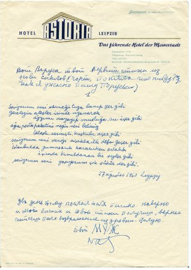
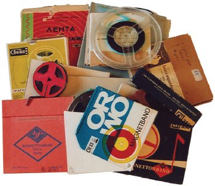
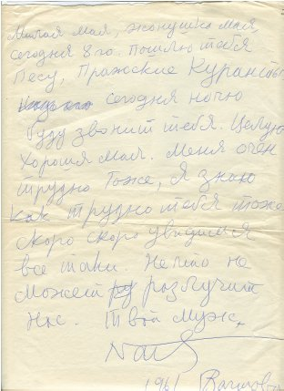
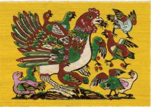
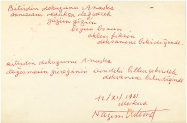
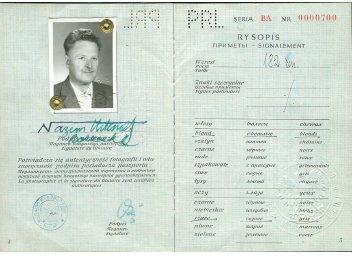

Gözyaşlarımın asıl nedeni aklımda. O kadar parasız kalmıştık ki senden gizli eşyalarımı satmaya başlamıştım. Hem de senin armağanın olan mavi moher kazağı Raisa’ya, anlıyor musun arkadaşım Raisa’ma kırk rubleye sattığımda yolun sonuna geldiğimizi anlamıştım! İşte o zaman isyan ettim. Evde yardımcımız da yoktu. Asansörcü Şura günde bir, bir buçuk saat senin gömleklerini yıkayıp kolalamak için geliyordu, o kadar. Üstüne titrerdi senin, ama çalıştığı için onun da vakti çok azdı.
Tepkim şaşırtmıştı seni, biraz düşünüp şöyle demiştin:
“Haklısın, normal bir insan yaşamı değil bu. Bağışla beni, cancağızım. Bu hayhuydan ben kendim de çok yoruldum. Bu günden tezi yok –elini çırptın– her şey değişecek! Yatak odası senin bölgen olacak. Ben bile kapıyı çalmadan girmeyeceğim.”
Gerçekten de Nâzım, bunları söyledikten sonra, günde en az beş kere çalar oldun kapıyı. Ama ya insanlar... Sadece iki hafta kadar görünmediler ortalıkta, sonra her şey eski tas eski hamam oldu. 31 Mayıs 1962 tarihli bir şiirin var, yorgunluğumu anlattığın, ama bu değil başka bir yorgunluk:
Yoruldun ağırlığımı taşımaktan
ellerimden yoruldun
gözlerimden gölgemden
sözlerim yangınlardı
kuyulardı sözlerim
bir gün gelecek ansızın gelecek bir gün
ayak izlerimin ağırlığını duyacaksın içinde
uzaklaşan ayak izlerimin
ve hepsinden dayanılmazı bu ağırlık olacak.[90]
Doğrusu, mutlu günlerimizde tüm işler yolunda gidiyordu. Yeryüzü ışıldıyor, camın ardında rüzgâr esmiyordu. Şiir dışında her şey vardı. Sonra ağır taşlar gibi haberler, özensizce edilmiş sözler düşmeye başladı üstümüze. Hayal kırıklıkları, endişe, keder. Alnında beliren kırışıklıklar ve göğsüne çöken kederin ağırlığıyla geldi esin ve şiirler, dökülmeye başladı kaleminden.
Türkiye Komünist Partisi Genel Sekreteri Bilen’in –partideki adıyla Marat’ın– basit, kıskanç bir insan olduğunu anladığında acı çekmiştin.
Gece yarısı yatak odamıza dalmıştı Marat:
“Ne yapıyorsunuz burada?! Nâzım hastasın sen, uyuman gerek!”
Sen ise mavi divanda oturmuş, sabaha yetişecek şiir ya da makaleni bana dikte ediyordun. Sehpanın üzerinde yazılı çizili kâğıtları gören Marat, sözünü tamamlayamamıştı:
“Ben, şey diye düşünmüştüm...” Senin gözlerindeki öfke kıvılcımlarını gördüğünde de: “Neden biraz acımıyorsun Vera’ya, Nâzım?” demişti.
Sen Türkçe yanıtlamıştın onu:
“Burası benim yatak odam, senin genel sekreterliğinin bürosu değil. Evde ahlak zabıtasına ise hiç ihtiyacım yok!”
SBKP’nin XXII. Kurultay günlerinde seni davet etmedikleri için nasıl ıstırap çektiğini asla unutmayacağım.
“Tüm muhabirler orada, burjuva olanlar bile. Herkes orada, bir beni çağırmadılar! Yoksa burjuva muhabirlerden daha mı tehlikeliyim! Ne için? Beni unuttular mı, yoksa çağırmak mı istemediler?”
Bilen’e sormuştun:
“Neden böyle olduğunu öğren bakalım. Her gün yoldaşları görüyorsun sen.”
Davet edilmeme nedenini öğreneceğine söz vermişti sana, ciddi olarak. Bu durumun seni ne kadar üzdüğünü, evin içinde onur kırıklığından, aşağılanmışlık duygusundan ölecek bir halde nasıl dolandığını görüyordu. Bilen ise entrikaların adamıydı, acılı süreci izlemekten hoşlanıyordu. Kurultayın düzenlendiği Kremlin’deki Kongre Sarayı’ndan bize geliyordu her öğlen yemek yemeğe. Karısını yanında getirmeyi de ihmal etmiyordu. Türk genel sekreterin avam karısı, kendi haline bakmadan Türklerin çingene olduğunu söylüyordu. Alt tarafı ev kadınıydı, ama Kurultay’a davetliydi. İkisi birlikte sana kurultay için özel hazırlanan “delege” sigaralarından ikram ediyorlar, kurultay eşantiyonlarını gösterip olanı biteni anlatıyorlardı. Çoğu zaman anlattıklarından yola çıkarak onların kişisel bakışlarını anlamak olası değildi. Bir keresinde gittiklerinde sormuştum:
“Bilen’e sordun mu? Mesele neymiş?”
“Hayır.”
“Sorsaydın ya...”
“Vera, bir insana bir şey kaç kez sorulur! Sorduğumda yanıt vermiyor ki.”
“Nasıl yanıtlamıyor?”
“Her zaman yaptığı gibi. Yüzüme bakıp susuyor.”
Sonra, 1962’de Sovyet pasaportu aldığında, seni çoktandır kaygılandıran başka sorularla beraber, bunu da kendin sordun SBKP Merkez Komitesi’ne. Hastalığını bahane ederek çağrılmamanı Bilen’in kendisinin rica etmiş olduğu çıktı ortaya. Oysa son iki yıldır nezle bile olmamıştın. Doğal olarak inanmışlardı ona ve ricasını yerine getirmişlerdi.
Gerçek nedeni öğrendiğinde küplere bindin önce. Herkesin önünde foyasını ortaya çıkarmaya hazırdın.
“İşte her şeyi öğrendim şimdi. Ne yapmalıyım? Bir araya gelmemiz kaçınılmaz. Birlikte çalışacağız çünkü!” dedin. Sonra biraz sakinleşince canı cehenneme diye düşündün:
“Bu konuya değinmek bile istemiyorum. Bundan böyle, sadece bizi birbirimize bağlayan çalışmalarımız hakkında konuşacağım onunla. Diğer konularda ağzımı bile açmayacağım. O benim için öldü, artık.”
Leipzig’e Bilen’in evine gittiğinde tam böyle davrandığını biliyorum. O ise hâlâ anlamış değil neden değiştiğini, son zamanlarda neden suskunlaştığını. E, Nâzım, kimileri yaptığı riyakârlıkların sonsuza dek gizli kalacağına inanmaktan vazgeçmiyor.
Günlerimizi beraber geçirmeye başladığımız zaman da senin gitmen gerekmişti. Almanya’ya bensiz gidecektin. Çünkü savaşın izlerinin yeni yeni silinmeye başladığı Almanya’da kendimi hayal bile etmem mümkün değildi.
“Bu şeytan Marat, Parti’ye yardım etmediğim bahanesiyle beni cezalandırmaya niyetleniyormuş. Bu nedenle Leipzig’e gitmem gerekiyor. İnadına yapıyor, üç ay memur gibi dizinin dibinde oturmamı istiyor... Ne yapmalı, bilemiyorum. Neden üç ay? Bu süreyi nerden uydurdu, bilen yok. Benim sakince çalışmam için bir ayım bile yokken, al sana üç ay! Benim sinirimi bozmak için yapıyor. Biliyor tabii, ben disiplinli bir adamım ve gitmezsem rahatsız olacağım. Aptalca bir şey bu yaptığı. Ah, Marat, Marat...”
İşte böyle, yazın sonunda ona parti diyetini ödemeye ve yirmi günlüğüne Leipzig’e gitmeye karar vermiştin. Bense bu sürede sürücü kursunu tamamlayacaktım. Bana:
“İyice öğren araba kullanmayı da, döndüğümde hemen Koktebel’e gidelim. Seninle arabada yalnız seyahat etmeyi öyle düşlüyorum ki,” dedin.
Kısa süreliğine gitmiştin ama göndermediğin mektuplarla o kadar çok şiir getirdin ki Leipzig’den. Çok daha önceden kafanda oluşturmaya başladığın şiiri 27 Ağustos 1960’da kâğıda dökmüşsün:
Seviyorum seni ekmeği tuza banıp yer gibi
geceleyin ateşler içinde uyanarak
ağzımı dayayıp musluğa su içer gibi,
ağır posta paketini, neyin nesi belirsiz,
telaşlı, sevinçli, kuşkulu açar gibi,
seviyorum seni denizi ilk defa uçakla geçer gibi.
istanbul’da yumuşacık kararırken ortalık
içimde kımıldanan bir yer gibi,
seviyorum seni “yaşıyoruz çok şükür!” der gibi.
27 Ağustos 1960
* * *
Her günüm mis gibi dünya kokan bir kavun dilimi
senin sayende.
Bütün yemişler elime elime güneştenmişim gibi uzanıyor
senin sayende.
Senin sayende yalnız umutlardan alıyorum balımı.
Yüreğimin çalışı senin sayende.
En yalnız akşamlarım bile duvarında gülen bir Anadolu kilimi
senin sayende.

Şehrime ulaşamadan bitirirken yolumu
bir gül bahçesinde dinlendim senin sayende
Senin sayende, içeri sokmuyorum
en yumuşak urbalarını giyip
büyük rahatlığa çağıran türküleriyle kapımı çalan ölümü. [91]
Hiçbir şey istemiyorum Nâzım. Tek dileğim sana sarılmak. Arkandan yaklaşıp kollarımı beline dolamak ve yanağımı sırtına yaslamak istiyorum, yalnızca.
Sen gelmeden bir hafta önce ehliyetimi almıştım. Kendimi uzun yolda denemeye karar verdim. Bin beş yüz kilometre mesafedeki Koktebel kadar uzak olmasa da dört yüz kilometre ötedeki Valday’a gitmeye karar verdim. Benim için gene de uzak bir yoldu. Döndükten sonra şoförlüğümü ve orada yaşadıklarımı sana dürüstçe anlatmış ve Koktebel’e Kırım üzerinden trenle gitmeyi önermiştim.
Köyde beni şöyle karşılamışlardı:
“Sen hükümetten misin, acaba? Nasıl da toz kaldırıyorsun arabanla böyle. Eteğin de pek güzelmiş. Fırfırlarına üç metre mi harcamış, ne yapmış anlayan beri gelsin, hiç acımamış kumaşa... Yok, bende kalamazsın. Oğlum çardakta votkadan astı kendini. Dün daha dokuzuydu. Bunun da çocukları küçümencik. Bak, sen anca kulübede kalabilirsin. Kadın yalnız yaşıyor. Yıllar önce kocası sarhoşken donup öldü. Televizyonu da var.”
Yanında gecelediğim kadın savaş sırasında onda kalan albayı ve beraberindeki kızı anımsadı, onları anlattı bana gece boyu. Kız “beyaz eldivenlerle yemek sunulan cinsten” biriymiş. Kocakarı onların kulübesinde bulunmasından ve kızın olağanüstü güzelliğinden o kadar korkmuş ki geceyi yatağının altında geçirmiş.
Anlattıklarım güldürmüştü seni. Ama trenle gitmeye karşı çıkmış, arabayla gitmekte ısrar etmiştin:
“Yarından sonra sabah erkenden yola çıkalım Verusya. Gideceğimiz yol senin gittiğine benzemez, orada kağnılılar çıkmaz karşımıza, merak etme.”
İşte böyle çıkmıştık Koktebel’e doğru yola. Köylerde, kasabalarda dura dura gitmiştik. Nedense, bir köy dükkânında gördüğümüz margarinden yapılmış kocaman tavşanlar kalmış aklımda. Tombul, sarı, biraz tozlanmış... Gözleri küçük kesilmiş pancardan... Bu garip yaratıcılığın seni nasıl şaşırttığını anımsıyorum.
Affet beni Nâzım, bağışla ne olur! Artık hiçbir olanağı yokken, sözlerimi geri almayı nasıl da istiyorum. Kendimi cezalandırmak için yapmadığım kalmadı, ama yüreğim sakinleşmedi bir türlü.
1963 kışının geride kaldığı, baharın yavaş yavaş kendini hissettirdiği günlerdi, anımsıyor musun? Boris Slutski[92] senin son uzun şiirin “On mektupta Tanganika Röportajı”nı çevirmişti. Çeviri, değişik yazı kurullarında okunuyordu. Molodaya Gvardiya dergisinde yayımlanacağının haberini önceden almıştın. Bu çalışmandan çok memnundun. “Saman Sarısı”nda bulduğun yenilikçi öğeleri “röportaj”da geliştirdiğini düşünüyor, lirik türle gazete yazısını başarıyla harmanladığına inanıyordun. Şiirin kısa sürede basılacak olması sana ayrı bir keyif veriyordu. Her zaman, akşam bitirdiğin şiiri sabah gazetede görmek isterdin.
Uzun şiirinin okunduğu yazı kurulunun birinden gelmişti Ekber, son derece üzüntülü görünüyordu. Senin odadan çıkmanı fırsat bilip kurulda alay konusu olduğunu söyledi ve ekledi:
“‘Nâzım Hikmet aşktan aklını kaçırdı’ diyorlar. ‘Önce şiirleri karısına ithaf ediyordu, sonra her yerde adını anmaya başladı. Şimdi de soyadına sıra gelmiş... Bundan sonra ne olacak bakalım.’ Sizin anlayacağınız Vera, adamlar susmadı bir türlü.”
Yüzüm alev alev yanmaya başlamıştı. Son derece canım sıkılmıştı. Halimi gören Ekber, bana yardım etme arzusuyla:
“Aldırmayın Vera. Saçma sapan sözler işte,” dedi. “Her zaman çıkar böyle insanlar. Gene belki Nâzım’la konuşmanız faydalı olur... Alışılmışın dışında bir durum olmasında biraz gerçeklik payı var... Gereksiz bir şey yani, anlıyorsunuz ya... Daha doğrusu bizde pek hoş karşılanmayan bir durum. Puşkin bile şiirlerinde ‘Madonnam’ diye bahsediyor karısından. Nataşa demiyor. Elbette, Nâzım istediği gibi yazabilir, ama yine de, ne bileyim ben, Allah kahretsin işte! Eğer şiirlerinin alay konusu olmasına neden olacaksa değmez belki de...”
Şiirin el yazmasını alıp bir köşeye oturmuştum. Alay konusu olan şeyi bulmaktı amacım. Yutarcasına okumuş ve ruhunu herkesin önünde ardına dek açmana hayretler içinde kalmıştım. Belki de ben fark edemiyordum. Gerçekten de vardı alışılmışın dışında, uygunsuz bir şey... Farklı anlamlar taşıyan söylemler... Birinci mektuptan dizeler okuyorum:
Uçuyorum karlı Ukrayna ovalarını.
Yıllardır bu ilk hava yolculuğum sensiz.
Elini aradım yerden kesilirken,
alışkanlık,
yere inerken de arayacağım.[93]
Evet, her zaman da böyle olurdu. “Nasıl isterim seninle birlikte parçalanmayı. Ne bencilim, görüyor musun,” derdin bana. Ardından eklerdin hemen: “Şaka yapıyorum canım.” Fakat bunda kimi zaman bir gerçeklik payı olduğunu biliyordum. Kendin itiraf etmiştin bunu... Oysa uçak alana indiğinde her zaman: “Çok şükür, evimizdeyiz. Toprağa basıyoruz. Merhaba Verusya,” derdin. Ben de yanıtlardım seni: “ Merhaba Nâzım!”
Dün gece bavulumu hazırlıyordun,
omuzların kederliydi,
belki değildiler de, bana öyle geldi, kederli olmalarını istediğimden.
Bu sabah kar aydınlığıyla uyandım.
Moskova uykudaydı, sen uykudaydın.
Saçların saman sarısı kirpiklerin mavi,
ak boynun uzundu, yuvarlaktı
ve kırmızı, kalın dudaklarında keder,
belki değildi de, bana öyle geldi, kederli olmalarını istediğimden.
Ayaklarımın ucuna basıp yan odaya geçtim.
Fotoğrafın masamda bir yaz güneşine bakıyor, başını kaldırmış, profilden.
Umrunda değil gidişim.[94]
Dizeleri atladım. Seni yermelerine neden olabilecek dizeler başka bir yerde olmalı:
Odaya girdin.
Yüzüme bakıyorsun şaşkın, kederli;
belki keder de değil de uyku mahmurluğu bu.
“Beni geçirmeğe gelme,” dedim,
oysa ki beni geçirmeni istiyordum bilemediğin kadar.
Kilitledin bavulumu kendi elinle.
Ben açtım kapıyı merdiven sahanlığına çıktım.
Sen içerde kapıyla çerçeveli bir bahar manzarasıydın, bir bahar manzarası öğle aydınlığında, yapraklarla sular som parıltı, gölgesiz.
Kapadım kapıyı üstüne.
Senden konuştuk Ekber’le Vunukova’ya kadar,
daha doğrusu, ben söyledim, o dinledi.[95]
Üzerinden uçtuğun toprakları anlattığın dizeleri de geçtim. Yazı kurulunda bunlarla alay edecek değiller ya. Yoksul insanların, senin Türk köylülerinin yaşamlarını okuyup eğlenmek olası mı?
Bulgur aşı yağsız.
Tezek dumanında göz gözü görmez.
Bebeler ölür bitlenmeğe vakit bulamadan
ve ben uçarım sekiz binmetre yukarda, bulutların üstünde.
İşte böyle Tulyakova...[96]
“Neden hâlâ kendi soyadını kullanıyorsun ki? Bari güzel bir şey olsa. Neymiş, Tul-ya-kova! Madem kendi soyadın bu kadar hoşuna gidiyor, benimkini beğenmiyorsun, o zaman ben de giderim evlendirme dairesine, seninkini kullanmam için izin vermelerini isterim. Hadi bakalım, ben Nâzım Tulyakov olayım da gör gününü!”
Kendi adını taşıyan Sovyet pasaportunu aldığında başlamıştın bu şakayla karışık tehditlerine.
Biz dostlarla oturmuş gülerken, sen gerçekten de evlendirme dairesini arayıp kocanın karısının soyadını almasının Sovyet kanunlarına uygun olup olmadığını sormuştun. Olabileceğini söylemelerinin üstüne, bir süre Nâzım Tulyakov olarak seni çağırıp şaka yapmıştık. Bunun üzerine sen:
“Dik kafalılığını sürdürmeye devam edersen aynen böyle olacak adım,” demiştin. “Bağımsız bir kadın olduğunu kanıtladın, bunun için seni takdir bile etmiştim, ama artık yeter. Şimdi ricamı yerine getir ve soyadımı al artık.”
Yerine getireceğim Nâzım. Azıcık bekle. Söz veriyorum.
Yanımda olsaydın, bugün keyfine diyecek olmazdı. Kitabın Moskova Yazı çıktı. Son şiirlerinin seçkisini nasıl da özenle yapmıştın bu kitap için. Hem de tirajını bir bilsen. Kitapların içinde hiç bu baskıya ulaşan olmamıştı: Yüz on iki bin sekiz yüz. Senin yerine Ekber getirdi onu bana. Tıpkı senin gibi imzalamış da. “Nâzım Tulyakov’dan Vera’ya. Ekber Babayev. 28.X.63.” Demek ki o da acılar içinde, seninle konuşuyor, seni mutlu etmek istiyor. Kafasında dizeleri dolaştırıp seni arıyor her yerde, her biçimde...
Teşekkürler sana Nâzım, bu güzel şiirler için. Sanki biraz farklı tınıları var, senin okuduklarından değişikler. Tabii bu Ekber’le benim için geçerli. Elbette, kitabını alacak yüz on iki bin sekiz yüz kişi senin istediğin tadı alacak şiirlerinden...
“Köşeye çekilmiş ne okuyorsun böyle, Verusya?” diye sormuştun odaya yanıma gelip. Uzattığımda, alıp sayfalarını çevirmiş, şaşkınlığını saklama gereği duymamıştın:
“Sana yazdığım mektupları mı okuyorsun? Çok sevindim. Nerden aklına esti bunları okumak?” Ardından şaşkınlığın, tedirginliğe dönüşmüştü:
“Yoksa bir şey mi oldu?”
“Benim için şiir yazma artık,” demiştim usulca. “Lütfen. Yalvarıyorum sana.”
“Bu da ne demek böyle?”
Kendimce açıkladım.
“Hayır,” diye haykırdın suratıma doğru. “Benden böyle bir şey isteme hakkına sahip değilsin. Cellat değilsin! Senin için yapamayacağım şey yok, bunu çok iyi biliyorsun. Fakat bunu isteme benden, yapamam. Bu yüreğimin sesi anlıyor musun? Dizeler içimden böyle dökülüyorsa ben ne yapabilirim? Çatlayayım mı, yani? Soluk alıp vermeden içindeki havayı ne kadar tutabilirsin?
İlk aklına gelenleri sıraladıktan sonra Ekber’in bana bir şeyler söylemiş olduğunu anlamıştın:
“Eh, Babayev yakın bir dost olacaksınız siz de. Önce alçakların zırvalarını dinliyor, sonra da gelip Vera’ya anlatıyorsunuz! Normal bir insan, bakın normal diyorum, ne iyi, ne kötü yani, normal bir insan hiçbir zaman onların gözüyle okumaz şiiri. Edebiyatla eğlenen pisliklerin işidir bu. Edebiyatın çevresindeki sinekler bunlar! ‘Nâzım Hikmet aklını kaçırmışmış?!’ Evet, kaçırdım. Bundan da gurur duyuyorum. Keşke her insan benim kaçırdığım gibi kaçırsa!”
İri cüssenle ikimizin arasında öfkeli, ödünsüz duruyordun. Dimdiktin, ellerin cebindeydi. Öyle güzeldin ki gözlerimi ayırmam olası değildi. Aptalca konuşmaya başlamıştım:
“Yaz, tamam da (sana diyordum bunları, sana “yaz”, “tamam” diye) yayımlama. Asıl önemli olan yayımlanması değil, nasıl olsa.”
“Her şeyden önce ben istemem bunu. Yayımlamasaymışım! Şimdiye kadar düşüncelerimi de, yaşam biçimimi de hiç kimseden saklamadım ben. Türk hükümetinden bile. Şimdi siz kalkmış, karıma olan sevgimi herkesten gizlememi istiyorsunuz. Sevdiğim de kendi karım, başkasının ki değil! Daha neler?! Vera anlamıyor musun yoksa? Aramızda aşk olduğu için, yalnızca bunun için böyle övünçle, böyle dürüstçe yaşabiliyoruz. Yoksa çok gülünç olurdu gerçekten. Kaba bir anekdottan başka bir şey olmazdı. Güldürü sanatçısının kötü bir şakası olurdu. Biz senle bir gösteride kendimiz dinlemedik mi: ‘Neden akademi üyesiyle evleniyorsunuz?’ ‘Çünkü ondan dul kalmak istiyorum.’ Aman ne zekice bir espri!”
Şiiri çekip aldın elimden:
“Lütfen, göster bana, burada uygunsuz olan ne var? Slutski’ye güveniyorum ben. Ters bir şey olsa çeviriyi yaparken söylerdi bana. Hadi, gösterin, bulun gösterin, nerede Vera’yı ya da kendimi küçük düşürmüşüm? Hani, Rusçada dediğiniz gibi nasıldı o sözcük... –ancak, birkaç denemeden sonra telaffuz etmiştin– itibarını zedelemişim!”
Nâzım, Nâzım sensizlik öldürüyor beni! Ses ver! Bir işaret versen anlarım... Arabamızın kapı koluna her sabah birisi kır çiçekleri bırakıyor. Biliyorum. Sen değilsin.
Şiiri fırlatıp mutfağa gitmiştin. Çaydanlığın takırtısı duyuldu. İçine su dolduruyordun. Ne için seni incittim, ne için? Ardın sıra geldim, mutfağa. Yanı başında dolanmış durmuş, sonra çay için masayı hazırlamaya başlamıştım. Kabahatli olduğumu biliyordum, ama özür dilemek gelmiyordu içimden. Bana dargın kalamayacağını, her şeyimi bağışlayacağını o kadar iyi biliyordum ki! O zaman da öyle olacağından kuşkum yoktu... Masaya reçel kapları koyup vişne reçelini çıkardım. Vişne reçelini çok seviyordun. Belli etmeden beni izliyordun. Senin tabağının yanına gönlünce reçel yiyebilmen için büyük kaşık koyduğumu görünce, aptalca ettiğim sözleri tatlandırmak, senin keyfini yerine getirmek istediğimi anlayıp gülümsemiştin.
Bana sokulup yüzümü ellerinin arasına almış ve demiştin ki:
“Sonra, daha sonra, ben bu dünyadan göçüp gittiğimde her aşk sözcüğümden mutluluk duyacaksın. Her yerde onları arayacaksın. En güç anlarında ayakta kalma gücünü onlardan alacaksın. Anla bunu Vera. Bırak, içimde yaşayan her şeyi dışa vurayım, dile getireyim. Kısıtlama bunu, kimseye kulak asma. Bunlara gereksinimimiz var. Benim şimdi, senin ise ileride...”
Affet beni, Nâzım. Ah, bir bilebilsen, o zaman ne kadar haklı olduğunu yalnızca bilsen, canım benim. İşte kocacım, böyle senin Tulyakovan...
Ertesi gün, uzunca bir süre çalışma odanda çalışmıştın. Literaturnaya Gazeta’ya bir yazı hazırlıyordun. Son noktayı koyduğunda beni çağırıp koltuğa oturttun:
“Otur azıcık, sana bir şey okumak istiyorum.”
Bunda şaşıracak bir şey yoktu. Her zaman yazdıklarını okurdun bana. Makaleni dinlemeye hazırlandığım sırada birden şiir okumaya başlamıştın:
Biliyorsun hartada yaptığımız yolculuğu seninle.
gemimiz üç direkliydi başı kemanî,
puruvada altın kız sureti sana benzer,
ve bayrağında şiirler sana yazdığım,
ve balıklar avladık gözleri zümrüt,
ve kuşlar kondu serenlere sırma kanatlı,
ve muz yağmuruna tuttu maymunlar bizi kıyılardan,
ve pupa yelken geçtik sıcak denizleri,
ve bir dolanıp bir kurtulduk ağından meridyenlerin
Dar-es-Selâm’ı bulana kadar.[97]
“Gücenme, dördüncü mektuba bu satırları eklemek istedim. Bence bu haliyle daha iyi oldu.”
18 Kasım 1961’de Mayakovski Müzesi’nde senin için bir gece düzenlenmişti. Yaşlı bir adam o gecenin bant kaydını saklamış. Bugün yeniden oradaydım, Nâzım.
Müzeye arabayla varışımızı anımsıyor musun? Sokakta, kapalı kapının önünde kalabalık birikmişti. Salon izlemeye gelenlere yetmemişti. Bekleyenler üstüne atılmıştı:
“İçeri alın bizi, Hikmet yoldaş! Lütfen söyleyin bizi de bıraksınlar içeri. Ayakta durmaya razıyız, koridordan dinleriz sizi...”
Bizi karşılayan kadın, sokaktakilere yardımcı olunması ricana ancak kafa sallamış ve: “Koridorlarda bile iğne atsanız yere düşmez... Yapılacak bir şey yok. Vestiyerden başlıyor kalabalık. Alabileceğimizden çok daha fazla insan aldık içeri. Zaten kendiniz göreceksiniz şimdi,” demişti.
Çok mutluydun.
Durum gerçekten de kadının söylediği gibiydi. Güçlükle girebilmiştik salona. Seni izleyicilerin önünde öylesine neşeli, güçlü, mutlu bakışlarla görmek rahatlatmıştı beni.
“Yoldaşlar! İlk kez 19 yaşımda Mayakovski ile Politeknik Müzesi’ nde sahneye çıktığımı çok iyi anımsıyorum. Şiirlerimi Türkçe okuyacak olmaktan çok korkuyordum, ürkmüştüm. Mayakovski dürttü beni ve: ‘Hadi Türk, yürü korkma. Nasıl olsa seni anlamayacaklar ama alkışlayacaklar,’ dedi. Beni anlamadılar kuşkusuz, ama alkışladılar. Moskova’da öğrenim gördüm. Gençliğimin en güzel yıllarını Moskova’da geçirdim. İlk kez Moskova’da sevdalandım. Doğru dürüst ilk kez Moskova’da kafa çekip sarhoş oldum. Marks ve Lenin’in öğretileri ile Moskova’da tanıştım. Sonra, ilk kez operayı da Moskova’da izledim. Yaşamımın daha pek çok ilkini Moskova’da yaşadım. Mayakovski ile Moskova’da tanıştım, şiirlerimin ilk çevirmeni Eduard Bagritski’yle de... Bu nedenle, eski bir Moskovalı sayarım kendimi. Yakında altmış yaşımda olacağım. Şiirler, oyunlar ve bir roman yazmaya çalışıyorum. Şiir yazmayı, öyle sanıyorum ki becerebiliyorum, oyunda daha kötüyüm. Romanıysa kıvıramıyorum bir türlü. (Salonda gülüşmeler) Şimdi şair-çevirmen yoldaşlardan son zamanlarda yazdıklarımı size okumalarını rica edeceğim. Size verilecek hesabım olarak. Ama önce Türkçe olarak “Bahr-i Hazer”i okuyayım size. Kabul mü? Ne zaman okuyucularımla buluşsam bu şiiri okumamın ilk nedeni, ezbere bildiğim başka şiirimin olmaması, ikincisi de ses bakımından kolay anlaşılması. Artık böyle yazmıyorum. Yirmi yaşımdayken böyle yazıyordum.”
İzleyiciler soluklarını tutmuş dinliyorlardı seni. Sonra uzun uzun hararetle alkışladılar. Ardından Muza Pavlova, hemen hemen bir saat “Memleketimden İnsan Manzaraları”ndan bir bölüm okudu. Salon derin bir sessizlik içindeydi.
Şimdi koltuğumda başımı dizlerime dayamış otururken bile ne sandalye gıcırtısı ne de öksürük sesi duyuyorum.
Sen güya izleyicilerin önünde oturuyordun, ama kendin başka bir yerdeydin. Orada, keçi yolunda Nigar’la beraberdin. Bebeğin yanı başında. Ve o anda, biri omzundan dürtüp Nigar’a ne olacağını sorsa şaşırır, her şeyi öğrenmek için şiiri dinlediğini söylerdin...
... Dinleyiciler alkışlarla uğurladılar Muza Pavlova’yı. Onun arkasından David Samoylov kendi çevirilerini okumaya başladı. Önce, 1960 yılında yazılmış, lirik bir dizi olan Leipzig şiirlerinin çevirilerinden okuyacağını açıkladı izleyicilere.
“Seviyorum Seni Ekmeği Tuza Banıp Yer Gibi...” diye okumaya başladı Samoylov. Küçücük, görünmez bir nokta olmayı istemiştim o an. Kimse beni görmesin, kimse Nâzım’ın bu şiirleri bana yazdığını anlamasın diye... O zaman aşkımızın mikrofondan yüzlerce tanımadığımız insana anlatılmasına ilk kez tanık oluyordum. Korkunç bir duygu sarmıştı tüm benliğimi. Başımı iyice öne indirip öyle oturmuştum. Yanaklarım alev alevdi.
“Şehrime ulaşamadan bitirirken yolumu bir gül bahçesinde dinlendim senin sayende / Senin sayende içeri sokmuyorum en yumuşak urbalarını giyip / büyük rahatlığa çağıran türküleriyle kapımı çalan ölümü”
Samoylov tüm ciddiyetiyle usulca bu dizeleri okuduğunda başımı kaldırıp sana bakmıştım. Öylesine ısrarlı, öylesine yoğun bakıyordun ki bana, başın titriyordu. Samoylov’dan şiiri bir kez daha okumasını isteyeceksin sanıp korkuya kapıldım. Neyse ki böyle bir şey olmadı. Samoylov okumasını sürdürdü... Leipzig dizisi şiirlerini birbiri ardına okudu. Sustuğunda onun sesinin yerini, salonun sanki hep birlikte soluğunu boşaltışı ve yüzlerce elin birbirine çırpışı aldı. Sen bu coşkun insan topluluğuna bakıyor, biraz utanmış mutlulukla gülümsüyordun. Şiirlerinin, insanların ruhuna hitap etmiş olmasından dolayı çok sevinçliydin.
“Şimdi okuyacağım şiiri Slutski çevirdi. Kendisi Moskova dışında olduğundan ben okuyacağım,” dedi Konstantin Simonov ve 1961’de Berlin’de yazılmış olduğunu söyleyerek “Otobiyografi” yi okumaya başladı:
1902’de doğdum
doğduğum şehre dönmedim bir daha
geriye dönmeyi sevmem
üç yaşımda Halep’te paşa torunluğu ettim
on dokuzumda Moskova Komünist Üniversite öğrenciliği
kırk dokuzumda gene Moskova’da Tseka – Parti konukluğu
ve on dördümden beri şairlik ederim. [98]
Şiir kuvvetli alkışlar aldı. Alkışlar dinince sen aldın sözü:
“Yoldaşlar, dünyada insanların kesintisiz dört saat şiir dinleyebildiği tek ülke Sovyetler Birliği’dir. Bunu biliyorum. Kendim şair olmama rağmen yarım saatten fazla şiir dinleyemem, en güzellerini bile. Fakat siz beceriyorsunuz bunu. Yine de şiir dinlemek yeter artık bence. Gelin biraz da söyleşelim.
“Biraz daha şiir dinlesek olmaz mı?”
“Ne?!”
Fakat ısrarla şiir isteniyordu salondan.
“Bilmiyorum, başka bir şeyler var mı yanınızda?” diye sordun şair-çevirmenlere.
“Türkçe okuyun, Türkçe,” diye bağrışlar geliyordu salondan.
“Hah, işte Samoylov Yoldaş’ta ilk dönem şiirlerimden varmış.”
“Teşekkürler, teşekkürler!” Salon alkışlıyordu.
“‘Mavi Gözlü Dev’i okuyacağım size.”
Şiiri dinlerken düşündüm de, bunu yazman için Nüzhet’le karşılaşmana değmiş. Gerçekten, tüm içtenliğimle söylüyorum.
“Şimdi şöyle bir not ulaştı elime. Diyor ki: ‘Nâzım Yoldaş, sizi çok seviyoruz. Bu nedenle olağanüstü güzel şiirlerinizi dinlemeye, tiyatronun ve genel olarak günümüzde sanatın durumu konusunda görüşlerinizi öğrenmeye geldik buraya.’” Salonda gülüşmeler...
“Yoldaşlar, bu başlı başına bir konferans konusu. XX. Kurultay sonrası ülkenin kültür yaşamında pencereler açıldığını düşünüyorum. Bu bir gerçek! Tüm ilerici insanlık için bir gerçek bu! Fakat şimdi de kimi pencerelerde farklı parmaklıklar görünüyor, bu normal mi? Her şeye rağmen yeni olan kazanacaktır, bundan eminim. Tiyatro konusuna gelince, durum aynı. 1921 yılında Moskova’ya ilk gelişimde Sovyet tiyatrosunun altın çağını görmüştüm. 1951’de Moskova’ya geri geldiğimde ise ülkenin tüm tiyatrolarında sözümona Stanislavski sisteminin uygulandığını gözlemledim. Oysa Stanislavski ve Nemiroviç ile beraber bir şeyler yitip gitmişti. Yapılan, Stanislavski sistemine pek de gönüllü olmayan yönetmenlerin, bu işe yeterli yeteneği olmayanların, naftalinlenmiş bir sarık gibi Stanislavski yöntemlerini sandıktan çıkartmasından başka bir şey değil. Elimde bir not daha var. Bu soruyu soran kişiyi görmek istiyorum. Elimdeki kâğıt bir şey ifade etmiyor bana! Genel olarak resim sanatını sormuşsunuz. Bana kalırsa, sanat dalları içinde en uluslararası olanı resim sanatıdır. Şaire çevirmen gerek. Çeviri, iyi ya da kötü olabilir. Resmi ise çevirmek gerekmez. Fakat burada pek çok genç ve çok yetenekli ressamlar sergi açma olanağına sahip değil. Dünyanın müzeleri kapalı onlara. Sadece bununla kalsa iyi. Çağdaş resim sanatıyla ilgili Batı’da yayımlanan kitapları görme olanaklarından da yoksunlar! Kimileri açlık çekiyor. Bu korkunç bir durum yoldaşlar! Tselkov’u, Oskar’ı, Rabin’i, Krasnopevtsev’i, Zverev’i, Sidur’u, Silis’i, Lembert’i çok beğeniyorum. Bürokratlar, yeteneğin boş bir şey olduğunu düşünüyorlar. Onlara göre, yetenek sıklıkla rastlanan ciddiye alınmasına gerek olmayan bir şey. Bu son derece cahilce bir yaklaşım. Yeteneğe sevgiyle, umutla yaklaşmak, yardım etmek gerekir. Aksi takdirde yok olur gider. Diğer yandan, memurlara gücenmeye, devlete kırılmaya gerek yok. Bizim Karadeniz’de güçlü bir balık vardır, yakalaması da pek güçtür. Fakat çok alıngandır bu balık. Büyük, çok büyük burnu olan bu balığın burnuna vurur insanlar. O zaman gücenir ve ağa düşer. Benim de, Allah’a şükür, kocaman bir burnum var. Ona ne kadar vursalar da aldırmadım, yazmaya devam ettim. Örneğin, yazdığım oyun ‘İvan İvanoviç Var Mıydı?’ ne kadar çabuk kaldırıldı sahneden! Moskova’da oyunumun neden kaldırıldığını sormadığım dostum kalmadı. Kimse açıklayamıyor. Gücenip bir daha piyes yazmayabilirdim, ama yazıyorum. Kaldırılan oyunumun ardından dostum Aleksandr Fadayev’in yazgısından etkilenip bir başka piyes yazdım: ‘Olmak ya da Olmamak.’ Sahnelemediler. Sonra ‘Demokles’in Kılıcı’nı yazdım. Burada ‘Satir’de ve başka tiyatrolarda oynuyor, yurtdışında da sahneleniyor. Karım Vera Tulyakova’yla ‘İki İnatçı’yı yazdık. Başarı kazandı. ‘Tartüf 59’u yazdım izin vermediler. Sonra ‘İnek’i yazdım, gene yasak. İşte böyle. Çevirmenlerim soruyorlar: ‘Ne çevirelim, şimdi?’ diye. ‘Sahnelenmeyen oyunları çevirmekten usanmadıysanız, buyurun çevirin,’ diyorum. Her şeye rağmen gerçek bir yazarsan, memurlar için çalışmak değilse amacın, yazmamak mümkün değil. Geçenlerde Bulgakov’un karısı ‘Usta ile Margarita’nın bir kopyasıyla, yayımlanmamış başka yazılar getirdi bana, okuyayım diye. Şimdi onun da yayımlanmasına izin vermiyorlar. Ama inanıyorum ki çocuklarımız bu yetenekli yazarın mükemmel kitaplarını okuyacaklar. Torunlarımız Puşkin, Dostoyevski gibi, Bulgakov’u da okullarda öğrenecekler!”
Salon, Bulgakov’un mirasının yaşatılması konusunda açık oylama yapılıyormuşçasına alkıştan inliyordu.
“İşte böyle yoldaşlar,” diyen sesin işitildi. Belli ki gülüyordun.
Başımı kaldırdım dizlerimden. Bacaklarım uyuşmuş. Durumu anlamak için teybe bakıyorum. Bant çoktan bitmiş herhalde, belki de şimdi bitti... Odada sesinin çınlaması ne zaman kesildi fark etmedim bile. Ben oradaydım, belli ki sonuna kadar banda kaydedilmemiş gece. Bacaklarım ağrımasa daha dinler, sahnede olanları sonuna dek izlerdim. Herkes dağıldıktan sonra, Mayakovski’nin müzeye dönüşmüş evinin boş salonlarında bir kez daha dolaşırdım seninle... Bir kerecik daha...
Aylar geçer, hiç ayrılmazdık seninle Nâzım. Hem de hiç, bir saatçik bile. Ama gene de ne çok ayrılıklar yaşadık. Ayrılıklar senin kıskançlığındı.
Yaşamın işle, insanlarla, olaylarla, geçmiş, gelecek ve şimdiki dünya ile dopdoluydu. Birkaç yıl senin yazgının fırtınasına kapılıp yaşadım. Ama seninle çok uzun bir yaşam sürmüşüm gibi geliyor bana Nâzım. Sanki bugün senin önünde yaşlı, çok yaşlı bir karga ya da fil olarak oturuyorum. Üç yüz yıldır hayattayım sanki. O akıl almaz yazgının tamamı benimle geçmiş gibi. Bazen on yedi yıl ben hapis yatmışım, hayatına girmiş kadınların hepsini ben sevmişim ve şimdi de ölmüşüm gibi geliyor bana. Sen Nâzım? Hiçbir şeyden korkmuyordun. Tek korkun senin ölüp benim yalnız kalmamdı. Yalnız kaldığımda başıma gelebilecek tüm olasılıkları öngörerek, beni bu iğrenç ve acılı sürece hazırlamaya çalışmıştın elinden geldiğince. Öldükten sonra da kocam olarak kalmak beni doyurmak, giydirmek, iyi bir yaşam sürmemi sağlamak istiyordun:
“Ben göçüp gideceğim sen tek başına kalacaksın, bunu düşündükçe aklımı kaçıracak gibi oluyorum. Nasıl yaşamını sürdüreceksin, gel düşünelim bunu Verusya. Gel, her şeyi kararlaştıralım şimdiden. Anlasana, sana yardım etmek istiyorum. Beni bırakma böyle. Gel düşünelim.”
Kaçıyordum bu isteklerinden, senden kaçıyorum, istemiyorum, gelmiyor elimden, korkuyorum bunu düşünmekten. “O” gelecek için para biriktirmeyeceğim. Yapamam bunu. Gerekecek düşüncesiyle para biriktirmeye başlamak her şeyin sonu gelmiş demektir. Ben de senin bunu anlamamana şaşırıyordum. Sen yoksan ben de yokum demektir... Bunu anlamıyor, sürekliliği sağlamak için imkân yaratmaya çalışıyordun. Benim yaşamımda senin sürekliliğini... Yalnızlığımın tablosunu yaptığının ayrımındaydım. Dayanılmaz acılar çekiyordun benim için, bu ıstıraptı geceleri bağırtan seni...
“Annenin babanı unuttuğu gibi sen de unutacak mısın beni yoksa? Annenin odasında babanın küçücük bir fotoğrafı bile yok. Benim yanımda bir kez bile adını anmadı onun. Babanın anneni deliler gibi sevdiğini biliyorum. Ona cepheden yazdığı mektupları okuduğumda hemen anladım bunu. Yoksa Rus kadınları bu kadar çabuk mu unutur?”
“Ben unutmayacağım Nâzım. Aklına getirme bunu.”
“Sen elli yaşına gelene dek oradan kıskanmayı sürdüreceğim. Yok, yok elli beş. O yaşına dek görebiliyorum seni. Sonra ne olur, bilmiyorum.
Beni aldatan kadına dokunamazdım. Ve bu konuda da kadının kendini temize çıkarmak için söyleyeceklerine değil, söylentiye, dedikoduya inanırdım. Bu bir. İkincisi, hayatımın hiçbir evresinde rastgele bir kadın ya da insan için şiir yazmadım. Yaşamın karşıma çıkardığı pek çok kadın, kendileri için hiç değilse bir tek dizecik yazmam için dilekte bulundu. Ama yapamadım. Asla, bir kez bile. Onlar hayatımın paralelindeydi anlıyor musun, hayatımın içinde olmadılar. ‘Zengin adamsın, bana bir kürk ya da yüzük alsana’ diyenlere, param varsa elbette, aldım. Fakat şiir yazmak, hayır. Şairler yalan söyleyemez.”

Nâzım Hikmet’in seslerinin kayıtlı olduğu bantlar
“Nasıl yapabildin bunu?” Kim bilir kaç kez sordun bana bu soruyu. Kaç yıl... Bu sabah tekrar duydum. Yine teybi açmıştım. Çoktandır unutulmuş, eski bantlar çıktı karşıma. Teybi satın aldığımızı anımsıyor musun? İlk zamanlar bu oyuncakla oyalanmış, sabahtan akşama günlerini kaydetmiştik.
“Sana tüm şiirlerimi banda kaydedeceğim. Yaşamımın tüm sesi seninle kalsın. Canın sıkıldığında Nâzımcığını dinlersin. Önceleri zor gelse de sonra alışırsın. Hatta sesimi dinlerken benim hiç bilmediğim konular, hiç tanımadığım insanlar hakkında bile düşünebilirsin. Başka erkekler bile gelebilir aklına...
Sonra aniden beni anımsarsın. İşte tek istediğim bu. Başka bir şey değil. O zaman benim sesim sana ‘Teşekkür ederim Verusya,’ der. ‘Canım benim, gülüm, bir tanem, sevgilim...’[99]
Sonra Türkiye’ye de ver bu sesi. Bizim barışmamız ölümümden sonra olacak. Ülkeme dönmek için ölmek zorundayım. Seni bir kerecik olsun, tek bir kerecik oraya götürememiş olmam çok yazık. İstanbul’umu gösterirdim sana. Doğru söylüyorum, yerküredeki en güzel kentlerden biridir. Nasıl da ağırlardım seni orada. Eğer uçakla gidecek olsak, alçaktan çok alçaktan, yavaş yavaş uçmalarını rica ederdim pilotlardan, hiçbir şeyi gözden kaçırmayalım diye. Gemiyle gidecek olsak, yalvarırdım kaptana, kıyıya varmadan kalbim mutluluktan durmasın diye, çılgınca hız yapmasını isterdim. İstanbul’da olsaydık... Eski şehri gösterirdim sana, gün doğarken gösterirdim mutlaka, kaç yıldır rüyalarımda gördüğüm o şehri. Sonra beraberce şehrin yeni semtlerini gezerdik. Hatırlıyor musun, Milano’da Türk bir mimarla karşılaşmıştık, sarışın bir delikanlıydı. Hani, yemek yediğimiz sırada İstanbul’un yeni kısımlarının planını çizip göstermişti bize.
Sonra, ay, ay, ay... dostlarıma götürürdüm seni. Balaban’a giderdik. İşte, ressam diye ben ona derim. Tablolarından almadan ayrılmazdım yanından. Hapishanede tanıştığımızda, koca burnumun ucuyla hemen almıştım kokusunu ondaki yeteneğin. Yanılmadım da. Orhan Kemal’i kucaklardım. Sabaha dek söyleşirdik onunla. Sonra Yaşar Kemal’e giderdik. Tilda bize iyi bir çay demlerdi. O çok iyi bir yazardır. Yeteneği öfkeli, yumuşak, tam halk tipidir, senin anlayacağın. Burada insanların onun İnce Memed’ini kapış kapış alıp okumalarına çok memnunum. Ortadirek de mükemmel bir roman. Demek ki şu Gallimard’da[100] gerçek bir seçici zevki var. Gençliğinden beri bulup çıkarıyor yazarın iyisini. Yaşar anlatır, ben dinlerdim. Biliyorsun, çok yardımı dokundu bana. Paris’te beni görmeye gelmek, gizlenmeden, sakınmadan benimle konuşmak, tüm o günler boyu sabahın erken saatlerinden gece yarılarına kadar benimle şehirde dolaşmak yürek işiydi. Şiirlerimi ezbere okumaya başladığında mutluluktan aklımı yitiriyordum nerdeyse. Biliyorsun, zaman zaman şiirlerimin Türkiye’de unutulduğu kanısına kapılıyorum. Onun sayesinde, inancım tazelendi Türkiye’ye, yani kendi halkıma, kendi geleceğime.
Samiye’mde bir yemek yerdik mutlaka. Kız kardeşimle çok benzeriz birbirimize. Tabii kocası başka ülkeye götürmediyse onu. Dışarılarda görev yapar kocası. Sonra Refik’i arar bulurduk. Bir kayık kiralar, kıyı boyunca gezerdik. Yaşıyorsam bugün, bunu ona ve başka bir dostumuza borçluyum. Sen biliyorsun ya. Ülkeme bensiz gidecek olursan bunu ona söyle. “Otobiyografi” de bir selam gönderdim ona... onun için hiçbir şey yapamadım. İsterdim oysa, isterdim...
Mehmet Fuat’a telefon ederiz. Belki gençlik günlerimde ve sonrasında iyi babalık edemedim ona. Ama o mükemmel bir adam oldu. Annesi Piraye olağanüstü bir kadındı. Biliyor musun, Mehmet Fuat’ın mektuplarını yüzlerce kez okumuşumdur. Mehmet Ali Aybar’la görüşürdük. Genç şairlerin yanına gider, kim daha gençmiş bakardık. Çankırı Hapishanesi’nin önünden geçerdik. İçeri girmezdik, ama müdürü Tahsin Bey’le, o iyi adamla minnettarlıkla görüşmek isterdim. Çok sevdiği kızı Şehnaz yaşamında mutlu oldu mu acaba, öğrenmek isterdim. Eski savcı İzzet Akçalı’ya uğrardım mutlaka. Resimlerim, şiirlerim kalmıştı onda... Kim bilir ne yaptı onları? Atmış mıdır, saklamış mıdır?
Galata Köprüsü’nde dururduk biraz. Sana Aya Sofya’yı gösterirdim. İşte o zaman tutamazdın çığlığını. Kafanı kaldırır, tüm bunları görmenin mutluluğundan başın dönene kadar bakardın. Sonra yavaş yavaş Beyoğlu’na gideriz, şehrimizin merkezini görürsün. Topkapı’yı, Atatürk Bulvarı’nı gösteririm sana. Ama hepsinden önemlisi insanları görmen. Halkımın ne sıcak, ne güzel olduğunu algılaman... Benim bağrından çıktığım, fokur fokur kaynayan insan denizini görmen...
Akşam seninle deniz kıyısına giderdik. Dostlarla otururduk uzun uzun, küçük bir restoranda. Midye dolması ısmarlar, sana balık hazırlamak için kendim girerdim mutfağa. Balık pişirmede üstüme yoktur! Hem de ne yöntemlerim var bir bilsen! Günün birinde, tüm şiirlerimi yazıp bitirdiğimde, yazılacak tek bir dizem kalmadığında, tüm oyunlarım tamamlandığında oturup başyapıtımı hazırlayacak ve kendi yemek kitabımı yazacağım. İşte o zaman gerçek şöhret ve zenginlik de gelecek bana. İnsanları şöyle ağız tadıyla doyurmayı o kadar istiyorum ki! Sadece Türk olmamdan değil, tüm dünyayı görüp karşılaştırma olanağı bulduğumdan, Türkler diğerlerine göre yemek işinde daha ustalar gibi geliyor bana.
Verusya, ben artık olmadığımda hiç değilse bir kerecik olsun git Türkiye’ye. Gizlice olsa bile. Benim için yap bunu. Eminim, çok hoşuna gidecek. İnan bana. Git memleketime. Seni orada karşılayacağım. Mutluluğum benim, karım, bir tanem. Git, çünkü ben orada olacağım.”
Bom, bo-m, bo-m... Satın aldığın eski duvar saati on ikiyi çaldı ve senin çalışma odanın önündeki sokak lambası söndü, her zamanki gibi. Bizim evimiz ise sorgulama merkezi gibi, her taraftan ışık saçıyor. Ben yanık bırakıyorum ışıkları her yerde. Hem de en kuvvetli ampulleri taktım. Tıpkı dün, daha önceki gün, ondan da önceki gün olduğu gibi sabaha dek yanacak ışıklarımız. Ve böyle her gece, her gece sürüp gidecek... Yalnız, karanlık bir köşede senin bakışlarınla karşılaşmaktan ürktüğümü düşünmeni istemem. Gel Nâzım, seni çağırıyorum. Elini bana uzatıp “Gel canım benim, otur yanı başıma da konuşalım biraz,” dediğini kimseye söylemeyeceğim. Yeter ki gel, ne olursun.
“Dinle Vera...”
Tanıdın mı Nâzım? Yine teybi açtım. Sesin güçlükle işitiliyor. Benimle konuşuyorsun.
“Dinle Vera, neden hüzünlüsün bugün? Genelde çok sık hüzünleniyorsun. Bizim Bakûlü[101] pek başarılı olamadı alçıdan kafanın yontusunu yapmada, ama büstünde sana benzettiği tek şey hüznün. Herkes senin neşeli bir insan olduğunu düşünüyor... Şakalar yapıyor, insanları güldürüyorsun, tebessüm etme gayreti içindesin. Bu sana çok da yakışıyor üstelik. Ama kimse yokken hüzün sarıp sarmalıyor seni, benliğini kaplıyor. Yavaşça bir şeyler söylüyor sana ve sen bezgince dinliyorsun onu, ama her zaman itaatkâr, her zaman inançlısın ona karşı. Sana neler söylüyor, böyle? Tabii, yeteri kadar neden var yaşamımızda, ama senin hüznün başka bir şeyle bağlantı. Bence, bizim ilişkimizin dışında kalan bir şeyle... Söyle bakalım...”
“Sence benim yeryüzüne geliş nedenim nedir, Nâzım?”
“E, çok zor bir şey öğrenmek istediğin.”
“Her insan bir şey için gelmiyor mu hayata? Peki, ben ne için gelmişim?”
“Mutluluk için.”
“Sen işi şakaya vuruyorsun, ama ben ciddi soruyorum. Ayrı olduğumuzda bir araya gelmek mutluluktu. Şimdi bir aradayız. Mutluluğumuz gene bir adım önümüzde, başka bir şeyde. Gene bir şeylerin peşinden gidiyoruz. Anlıyor musun?”
“Evet, elbette. İşte bu nedenle, mutluluk demek yaşamdır, cancağızım.”
“Yaşam? Sorumun çıkış noktası buydu zaten. Bu yanıt değil. Benim ya da senin varlığının amacı ne? Bizim bir amacımız var mı seninle?”
“Elbette!”
“Ne peki? Diyelim ki daha on ya da yüz şiir yazacaksın veya bir roman... Bunu yaşamın amacı olarak nitelendirebilir miyiz? Başka birisi bakan olmayı istiyordur. O zaman bu da amaç... Oysa bizim aradığımız benim ya da onun yaşamının amacı. Varlığımızın anlamı ne? Ne için varız?”
“Çok çetin sorular soruyorsun Vera. İnsanlığı binlerce yıldır kıvrandıran sorular bunlar... Dini inancı olan kişi Tanrı’da bulur yanıtı, bir diğeri her şeyin toplumun ekonomik koşullarına göre belirlendiğini söyler. Fakat varlığının anlamını insanın kendisi bilmez. İnsanların yaşamalarına yardım etmek gerekir. Genel olarak yardım etmek yani, çeşitli yolları var bunun. Kemancı, keman çalmak için doğduğunu düşünür. Bir bakarsın, günün birinde kadının biri yolda dikkatsizce giderken, üstüne gelen arabayı fark etmez ve kemancı ona bağırır, çekilmesi için. Ve kadın zamanında durur, hayatı kurtulur.
Bir insan, bir çocuk doğurur. O büyür bir başkasını doğurur, o da diğerini. Ve belki de onlardan biri insanlık için en faydalı birey olur. Görüyorsun ya, varlığın nedenini açıklamak çok güç. Her şey geçmişten gelir ve bizden geçerek yarına ulaşır, Verusya...”
Teyp bandı hafif bir cızırtıyla dönüyor. Masanın üstünde açık duran gazetelerin altında çakmağı arayışın işitiliyor. Birkaç kez çakıp sigaranı yakıyorsun, daha rahat yerleşiyorsun oturduğun yere... birden bir gürültü geliyor, bir şey yere düşüyor. Gülüşüyoruz...
İşi şakaya vurma sırası bendeydi:
“Benim varlığımın anlamı seninle karşılaşmaksa, Mısır firavunları haklıymış. Doğru bir iş yapıp karılarını da beraberlerinde götürmüşler piramitlerine.”
“Ne diyorsun Vera, sen daha çok gençsin! Koca bir yaşam var önünde...”
Sandalyeye çıkıp, zamanı durdurmak yerine, saati durdurdum.
Boris Pasternak sana Tsvetayeva’nın şiirinin gizemini açıklarken onun, yaşamı her an yeniden başlatabileceğini söylemişti, anımsıyor musun? Sen şaşırmıştın. Bunun üzerine Pasternak, “Siz öyle değil misiniz sanki?” deyivermişti. Sık sık anardın Pasternak’ı. Ondan konuşabileceğin insanlar arardın, özellikle.
Paris’te gece vakti Ruben Simonov’la[102] gezintiye çıkmıştık. Onun Moskova’da sansasyon yaratan “İrkut Hikâyesi” adlı oyununun beklenmedik bir şekilde sekteye uğramasından bahsediyordunuz. (Fransız eleştirmenler: “Kamelyalı Kadın’ın zavallı versiyonunu neden önümüze koydunuz?” diye acımasızca eleştirmişlerdi onu.) Sonra söz Pasternak’a gelmişti.
Bir keresinde, Ruben Simonov oğlu Jenya ile beraber Pasternak’ ın tedavi gördüğü “Uzkoe Sanatoryumu”na tatile gitmiş. Simonovların dönüş zamanı geldiğinde Ruben Nikolayeviç, kendilerini almaya gelen arabayla Moskova’ya birlikte dönmelerini önermiş Pasternak’a. Anında toparlanmış Pasternak, eşyalarını getirmiş, arabaya koymuş. Tam hareket edecekleri sırada, kendini arabadan dışarı atmış ve: “Gidip bir bakayım, belki bir şey unutmuşumdur,” demiş. Jenya: “Ben arkanızdan baktım, oda boştu,” dese de Pasternak ikna olmamış ve gitmiş. Yarım saat geçmiş hâlâ ortalarda yokmuş Pasternak. Ruben Simonov, gidip bir bakmasını ve yazara acele etmesini söylemesini rica etmiş oğlundan. Jenya, Pasternak’ın odasına gittiğinde onu, boş odanın ortasında sandalyede derin düşüncelere dalmış bir halde oturur bulmuş. Delikanlının şaşkınlığını gören Pasternak, düşüncelerinin yoğunluğu yansımış ses tonuyla: “Bir ayımı geçirdim burada,” demiş.
“Ne kadar iyi anlıyorum onu,” diye haykırdın. Yaşama ciddiyetle bağlıydı. O odada kim bilir neler düşünmüş, neler anımsamıştı. Arkasına bakmadan kapıyı çekip gidemezdi...”
“Doktor Jivago’nun trajik olayından[103] iki hafta önce bana armağan ettiği kitaba,” diye sürdürmüştü konuşmasını Ruben Nikolayeviç. “‘Benim yaşadığım gibi sessiz ve sakin yaşamanı dilerim...’ diye yazıp imzalamıştı.”
“Bana da Peredelkino’da: ‘Büyük bir çalışmayı tamamladım, herkesin beğeneceği bir roman yazdım,’ demişti.”
Bir keresinde: “Vera, bir daha yazarla evlenmeyeceğine söz ver bana,” demiştin, anımsıyor musun? “Neden?” diye sormuştum şaşkınlıkla. “Burada yazar karısı olup da mutlu olan bir kadın görmedim, buna kocasını sevenler de dahil. Yetenekle birleşen Rus ruhu, bir torba dolusu altın gibi, taşınamaz bir ağırlıkta oluyor da ondan.”
Beraberliğimizin kısa bir diliminde her çarşamba öğlen yemeklerimizi akademisyen Jeltovski’nin mimari eseri olan tuhaf binada, “Bega” restoranında yemiştik. Bir yaz sürmüştü bu. Oraya gitmemizin nedeni, restoranın evimize yakın oluşu değil, Nikolay Erdman’dı.
İlk gidiş nedenimiz, gelen gidenden bunalıp bir yerde baş başa oturup sakince yemek yemekti. Daha önce hiç gitmediğimiz bu restoranı seçmiştik. İçeri girince gözlerimize inanamamıştık: Restoranda in cin top oynuyor, garsonlar can sıkıntısı içinde dolanıyorlardı.
İstediklerimizi hiç beklemeden getirmişlerdi. Moskova’da boş bir restorana düşmek seni çok etkilemişti, bu gerçekten de alışılmışın dışında bir durumdu. Fakat ne olduysa, sonra oldu. Bir anda insanlar doldular restorana. İş çıkış saatinde şehrin merkezindeki metro istasyonuna dönmüştü ortalık. Herkes heyecan içinde konuşuyor, yüksek sesle tartışıyordu. Neredeyse altmış kişi hep bir ağızdan konuşuyordu... At yarışlarının sona erdiğini ve çoğunluğu erkek olan meraklıların biraz serinlemek ve bir şeyler atıştırmak için restorana akın ettiklerini sonradan anlamıştık. Sanki bir tiyatro sahnesi izler gibi merakla gözlemlemiştin bu heyecanlı, coşkulu, bayram sevinci içindeki insanları.
“Rusların, Gürcüler ya da Türkler gibi, böyle ateşli insanlar olduğunu hiç düşünmemiştim,” diye bağırmıştın keyifle.
İşte o anda kapıda Erdman belirmişti. Yanında M.M. Yanşin, belki de o sonradan gelmişti, A.P. Starostin ve Moskova’nın ünlü avukatlarından aynı zamanda da ressam olan birisi vardı. El salladım Erdman’a ve restorandaki şamatanın içinde terk edilmiş bir adaya benzeyen masamız, en canlı masaya dönüştü birden.
Erdman’ın at yarışlarına olan tutkusunu stüdyo yıllarımdan biliyordum. Sojuzmultifilm’de çalışan herkes bilirdi bunu. Stüdyoda birlikte çalıştığımız, hayranlık duyulan bir yazardı. “İsa Aşkına, Nikolay Robertoviç’e çarşambaları ödeme yapmayın,” diye yalvarırdı Erdman’ın ev işlerini yapan yaşlı kadın: “Çarşamba oldu mu tüm parayı kahrolası at yarışlarına yatırıyor!”
Biz de türlü türlü oyunlar çevirir, yalanlar atar, parasını günlük giderlerinde kullanması için koruma altına almaya çalışır, zevkinden mahrum bırakırdık Erdman’ı.
O güne dek yüz yüze tanışmamış olmanız tuhaf bir olaydı. Volpinlerde bile karşılaşmamıştınız. Size anlatılanlardan tanıyordunuz birbirinizi. Daha ilk anda Erdman seni etkilemişti, Nâzım. Yetenekli insanı kilometrelerce öteden anlardın. O anda ise karşında soylu ve güçlü bir akıl, ıstırapla yoğrulmuş bir ruh vardı. Bir anda kaynaşıvermiştiniz... Neşeli bir sohbet başlamıştı. Edebiyat dünyasıyla ilgili şakalar, ikinizin aynı yıllarda tattığınız Moskova’daki ilk gençlik anılarınız döküldü ortaya. Yaşıt olduğunuz ve tasadan uzak, mutlu gençlik yıllarınızda eski Moskova’nın aynı “eğlence” mekânlarında gezip tozduğunuz anlaşılmıştı. “Şuraya gitmiştik, şunu yapmıştık, demek siz de bulundunuz orada?” diye konuşmuştunuz hararetle.
“‘Pegas’ın Ahırı’ kahvesinde mi?” diye bağırmıştın. Daha neler! Duvardaki resimleri anımsıyor musunuz?”
“Vikulov’un yaptıkları değil mi? Tiyatro ressamı olan! Peki, Yesenin’in dizeleri, hani duvarda yazılı olanlar aklınızda mı?”
Hepiniz bir ağızdan söylemiştiniz: “... Tükür yaprakları rüzgâr, öbek, öbek tükür! / Ben de senin gibi serseriyim...”
“Kendininkini de okusana,” demişti alayla karışık Yanşin, Erdman’a.
“Yoksa siz de mi duvara bir şeyler yazmıştınız?” diye sevinçle sormuştun.
“Gençtim, küstahtım, siz de öyleydiniz sanırım, Nâzım. Tüm dünya şiirinin suratına eldivenlerimi fırlatmak istiyordum. Skandal çıkarıyordum durmadan. O duvara da suçsuzluk bildirimi yazmıştım gururla: “Ve ben kasıklarımı / Sizin vücudunuzun mengenesinden / Kız oğlan kız derisinden / Çıkarmadım bir kez bile!”
Ve siz yeryüzündeki tüm kaygıları ve yaşınızı unutup çılgınlar gibi kahkahalar atarak gülmüştünüz.
“Demek şairsiniz. Oysa ben yirmili yıllarda çok ünlü oyunlar yazdığınızı biliyorum, Vera söylemişti. Pegas, yanlış anımsamıyorsam imgecilerin merkeziydi, o zaman siz de imgeciydiniz demek. Yesenin’i birçok kez gördüm orada. Sonra, neydi adı şu şair, hani Yesenin’in sevdiği, her zaman çok şık giyinirdi ya...”
- Şerşeneviç mi?” demişti yaşlı avukat.
“Ne Şerşeneviç’i. Mariengof! Öyle değil mi Nâzım? Evet, hem akıllı, hem züppe, hem de yetenekliydi. Yesenin beğenirdi onu.”
“Evet, evet,” diye başınla onaylamıştın. “Onun gibi olmak ister, özenirdim ona. Ama o zamanlar nerede bende öyle üst baş?”
“Nâzım, belki de bilmiyorsunuzdur, o sıralarda Yesenin çevresinin en çok umut bağladığı, akımın devamını sağlayacaklarını düşündükleri şair Nikolay Erdman’dı!” demişti Yanşin. “Şiirleri dönemin ünlü seçkisi Gostinitsa’da basılmıştı.”
“Abartıyorsun Mişa,” demişti Erdman. “Bırak şimdi bunları.”
“O zaman kaç yaşındaydınız? On sekiz filan herhalde, değil mi?”
“Yok, yirmi yaşımdaydım, belki de daha fazla... Pegas’ta votka olduğuna göre NEP’e[104] yakın bir dönemde açılmıştı, demek ki. Votka NEP’le ortaya çıkmıştı ya...”
“Peki, ‘Şairler Kafe’sini anımsıyor musunuz? Steniç şiirler okurdu orada, çok iyi bir çevirmen... Anımsamadınız mı, Nâzım?”
“Soyadları bir türlü aklımda tutamam, kardeş.”
“Görmüşsünüzdür, mutlaka. Kaçırmış olamazsınız. Mayakovski’ nin dostuydu. Bütün o insanlar Nâzım, hepsi çok muhteşemdi.”
Sonra söz Yesenin’e gelmişti yine. Yesenin’in güzel kadınlarından, İsadora Duncan’dan[105] konuşulmuştu. Fakat dedikodu tarzında değildi sohbet. Gençlikte yaşanmış ortak heyecanların sevinci yaşanmış, herkesten, her şeyden hakkıyla konuşulmuştu...
Erdman, bir başka görüşmemizde, Yesenin’le ilgili başka bir anısını paylaşmıştı bizimle. Bir gün evine uğradığında, masanın üzerinde emekler durumda bulmuş Yesenin’i. Üstlerinde birtakım uyaklar, şiir taslakları yazılı kâğıtları yere fırlatıyormuş. Erdman: “Ne yapıyorsun?” diye sorduğunda: “Şiir makinesi keşfettim,” demiş. “Önceden hazırlanmış dizelerin rastlantısal birleşmelerinden yepyeni bir şey çıkabileceğini ya da hiç değilse yeni bir imge olanağı doğacağını düşünüyorum...”
Onu sevmemek olanaksız diyordun, Erdman için. Onunla ve oyunlarıyla tanışmak pek çok şey kazandırmıştı sana. Erdman’ın oyunları 20’li yıllardan beri ne basılıyor ne de sahneleniyordu. Onun “Yetki” adlı oyununu bir yönetmende bulmuştuk, hemen. Ama “İntihar” adlı oyununu bulamıyorduk bir türlü. Sonunda, Erdman’ın kendisinden istemiştin. Erdman da kendisine sözü edilen “İnek”i istemişti senden, onun ardından da “Olmak ya da Olmamak”ı alıp okumuştu.
Erdman’ın oyunlarının son derece çarpıcı bir şekilde güncel olduğunu düşünüyordun. Birçok tiyatro yönetmeninin, onun oyunlarını sahnelemek için can atması gerektiğini düşünerek, herkese Erdman’ın oyunlarının konularından bahsetmeye başlamıştın. Erdman’ı “satmak” için çabaladığın tüm yönetmenler, istisnasız olarak, onu ve oyunlarını çok iyi bildiklerini söylediklerinde ve hayran oldukları oyunlarından ezbere pasajlar okuduklarında, şaşkınlıktan neredeyse küçük dilini yutacaktın... Ama ne var ki oyunlarının sahnelenmesi yasaktı.
“Bega” çarşambalarından birinde, okumak için aldığınız oyunları geri vermiştiniz birbirinize.
“Erdman kardeşim, oyunlarımızda aynı şeyi düşünmüşüz, gördün mü? Dâhice yazmışsın. İnsanların, fikrini algılaması çok kolay!”
“Ya sen, çok daha iyi yazmışsın, hele sonradan olanlar konusunda.”
“Bilmiyorum kardeş, ama şu koyduğun adı deliler gibi kıskandım... Ben aptal gibi, nasıl da düşünemedim bunu, bu kadar basit bir şeyi: “İntihar!”
“Aman Nâzım! Üzüldüğün şeye bak! Hoşuna gitti demek. Al! Hediye ediyorum sana! Nasıl olsa senin piyesini de ne basıyorlar, ne oynatıyorlar. E benimki de öyle. Aynı berbat durum!”
Çok büyük bir yazar olabileceğini söylemiştin Erdman’ın. Ayrıca, Chaplin ayarında bir ses tonu olduğunu düşünüyordun. Ama kırılgan bir insandı. “Dışarıdan bakınca her şey iyi hoş görünüyordu. Ödüller, senaryolar, opera librettoları, hepsi iyi hoş da tutuklanmasının ardından gerçek edebiyat çalışmalarından çekmiş kendini,” demiştin. “Hani şu uzun burunlu balık var ya, işte onun gibi burnuna vurmuşlar, kırılıp küsmekten kendini alamamış. Tükenmiş. Herkesin bir sınırı var.”
Biliyor musun Nâzım, Erenburg senden bahsetmiş anılarında. Dostluk ettiği ünlüler arasına sen de girmişsin, kitabı İnsanlar, Yıllar, Yaşam’da. Bana kalırsa üç kişiden söz ederken gizlememiş yürek acısını: Paul Eluard’dan, Babel’den ve senden.
Bir kış günü konuk olmuştuk İlya Erenburg’a. Bu ziyaretten kısa bir süre önce, Politeknik’teki şiir gecene başkanlık yaptığında bir araya gelmiştik. Gorki Sokağı’ndaki evine yaklaştığımızda: “Karşısında ürktüğüm tek insan,” demiştin. “Nedenini kendim de bilmiyorum. Çok bilgili. Sohbet sırasında yüzlerce isim, tarih, başlık sayıp döker. Ben de ise hafıza sıfır. Şimdi görürsün bak...”
“Biraz sinirli görünse de sen aldırma,” deyişin beynimde dolaşmasına karşın, kendi ortamında son derece sempatik, cana yakın bir insan olarak görünmüştü bana Erenburg. Batılı yaşlı adamlarınki gibi pembe yanakları, neşeyle bakan gözleri vardı. Alaycı değil, muzipti bakışları. Seninle bir araya gelmekten içten bir sevinç duyduğu belliydi her halinden.
Beni tanıştırırken “Novosti” haber ajansında gazetecilik yaptığımı da söyledin ve ardından da ekledin: “Sizden bir şeyler koparmaya çalışacaktır. Ajansı ilgilendiren konularda ağzınızdan bir şeyler çıkması için kışkırtabilir bile sizi, uyarmadı demeyin.”
“Öyle mi,” diye tiz bir kahkaha koparmıştı Erenburg. “Dünyanın dört bir yanına malzeme gönderen ajansta çalışıyorsunuz demek! Benim üstümden bir kuruş bile alamazsınız ajansınızdan, maalesef. Bu akşam inadına, haber olarak kullanamayacağınız konulardan konuşacağım.”
Gerçekten de gece boyu beni iğnelemiş durmuştu ünlü yazar. Her anlattığından sonra bana dönüp: “Nasıl? Dememiş miydim ben size? Ajansın işine yaramaz değil mi?” demekten geri durmamıştı.
Sohbetin ilerlemesiyle Erenburg’un keyfinin nedeni anlaşıldı: Kitabının yayımına izin verilmişti.
“Kimdir bu adam?” dedin sen. “Hep merak etmişimdir, izin veren, yasaklayan adam kim? Herhalde herkesten akıllı ve daha yetenekli ya da daha kurnaz olan biri, öyle mi?”
“Geçenlerde bir büyükelçiliğin kokteylindeydim. Bir ara, Hruşçev ile yan yana geldik. Bir köşede yarım saat baş başa konuştuk.”
“Anılarınız hakkında mı?”
“Yok canım, sağlık sorunlarından, hastalıklarımızdan... Yaptığım diyeti sordu bana. Ben de onun yaptıklarıyla ilgilendim. İki yaşlı insan ne konuşursa onlardan konuştuk işte! Bizim edebiyat çevresinin sivri akıllılarından biri bizim hararetli sohbetimizi görüp kendince, bürokratik açıdan değerlendirmiş olmalı. Ertesi sabah yayınevinden arayıp kitabımın yayın listesine alındığını söylediler,” dedi Erenburg. Sonra bana dönüp:
“Ha, aklıma gelmişken, sizin ajans için iyi bir haber olur bu!” dedi.
Sen bu dünyadan göçüp gittikten sonra beni SBKP MK Propaganda ve Kültür İşleri Sorumlusu İlyiçev çağırdı, bir gün. Oraya gitmeye, ne olduğu belirsiz bir konuda konuşmaya hiç gücüm yoktu, ama gitmekten başka elimden ne gelirdi ki! Tosya ahşap kapının önüne dek benimle geldi ve görüşme bitinceye kadar da meydandaki küçük parkta bekledi beni. Önündeki yıpranmamış dosyanın içinde mahzunca yatan birkaç kâğıdı karıştırırken arada bana bakıp gözlerini kırpıştıran bu adam ne düşünüyordu, bilmiyorum. Susuşuyla bana azap veriyor, erk sahibi olmasının keyfini çıkartırcasına yüzüme bakıyordu. Sonunda ağzını açtı:
“E, nasılsınız bakalım?”
Moskovalıların klasik yanıtıyla karşılık verdim:
“Teşekkür ederim, fena değil.”
“Belki bir şeylere gereksiniminiz vardır.”
“Hayır, teşekkür ederim.”
“Anlaşılan, Hikmet’le beraber oyunlar yazmışsınız, öyle mi?” diye sürdürdü konuşmasını, bu koca odada oturduğu yerden ideoloji ve kültür işlerini yürüten ve kim bilir kaç kez senin işlerine birçok kez kabaca burnunu sokan adam.
“Evet, yazdık.”
“E, nasıl yapıyordunuz bunu bakalım?” Pis pis güldü bunu söylerken ve ekledi: “Yani böyle yan yana oturup yazdınız, öyle mi?”
Çıkıp gitmek isteği uyandı içimde. Ama kalkamadım, kaçıp gidemedim.
“Nâzım Hikmet’in bu mektubundan haberiniz var mı?”
Kâğıdı uzattı bana:
SBKP MERKEZ KOMİTESİNE,
Sayın Yoldaşlar,
Çok hastayım. Bugünlerde Tanganika’ya uçacağım. İçimde, geri dönmeyeceğime dair bir önsezi var.
Kendim için bugüne dek asla bir istekte bulunmadım. Ama şimdi sizden bir ricam olacak. İki yakınım var: Biri karım Vera Tulyakova, diğeri oğlum Memed. Ne birikmiş param var ne de telif ücretlerim onlara uzun süre yeter. Ölümüm halinde, onların parasız kalacaklarını düşünerek ölmek, bana çok korkunç geliyor.
Sizden karımın ve oğlumun geçimini sağlayacak bir yol bulmanızı çok rica ediyorum.
Tüm yaşamım boyunca neferi olduğum partimin yardım ve desteğini beklemeye hakkım olduğunu düşünüyorum.
Bir yıl önce yoldaş Hruşçev’e beni Sovyet vatandaşları ailesine kabul etmesi için başvurmuştum. Değerli Nikita Sergeeviç, gösterdiğiniz üstün güven için şahsen teşekkür etme olanağı bulamadım. Teşekkür ederim.
Nâzım Hikmet
25 Ocak 1963
“Evet,” biliyorum, dedim.
“Bu mektuptan Nâzım yoldaş’ın içinde bir ölüm önsezisi olduğu anlaşılıyor. Neden acaba?” Odanın efendisinin içtenlikle sorduğu tek soru bu olmuştu. “Hikmet burada çok iyi koşullarda yaşıyordu! Herkesin saygısını kazanmıştı. Oyunları sahnelendi, kitapları basıldı... Gerçi bazı politik sorunlar karşısında anlaşılmaz tavırlar sergilediği de oldu. Stalin tapınmacılığının tümüyle ortadan kaldırılmasını istiyordu, örneğin. Neyin adına? Safça bir yaklaşım bu! Bizi şaşırtan, onun İtalyan komünistleriyle aynı revizyonizmden yana olmasından çok, buradaki pek çok insanın onu desteklemesi oldu. Tvardovski gibileri örneğin. Erenburg için söylenecek bir şey bile bulamıyorum. Henüz olgunlaşmamış genç yazarlarımıza ne demeli? Evet, o muhalif entelektüellerin lideri gibiydi.”
O konuşurken, “O zaman ben de muhalif entelektüelin karısıyım,” diye geçti aklımdan. Dinledikçe şaşırıyordum, nasıl oluyordu da düşmanca sözlerini törensel bir havada söyleyebiliyor ve sadece dudaklarını oynatarak bağırabiliyordu? Nasıl oluyordu da arkasında hiç iz bırakmadan öldürebiliyordu? Ne yazık ki onun seninle nasıl konuştuğuna tanık olmamıştım hiç. İletişiminizin nasıl geliştiğini hayal etmekte zorlanıyorum. Kompleksinden kurtulmak için, cenazenin ardından ancak iki hafta sabır gösterebildiğine göre, onun açısından pek de şenlikli olmuyormuş görüşmeleriniz...
Biz ise tam olarak tecrit edilmiş bir haldeydik: Ne telefon çalıyor ne de odaya giren oluyordu. Sokağın sesi bile işitilmiyordu... Kapkaranlık, kasvetli bir odaydı. Düşüncelerimi okumuş gibi, ortamı biraz yumuşatma çabasına girdi. Sorgu odasına düşmüş partizan tavrıyla oturuyordum karşısında. Ölümünden sonra seninle hesabı olanların beni kıskaca alacaklarından korkuyordun, Nâzım. Evet, işte sanki biri düğmeye basmıştı. Bir şeyler oluyordu. Kim bilir, belki de buradan alıp götüreceklerdi beni. Ürkütücü kapı usulca açıldı sonunda ve eşikte sevimli bir genç kız belirdi. İtaatkâr bir ifadeyle efendisine dönüp:
“Size demli bir çay getirmemi ister misiniz?” diye sordu.
Kaybolması ile elinde bir tepsiyle geri gelmesi bir oldu. Bembeyaz eldivenli elleriyle metal bardak altlıklarına oturtulmuş ince cam bardaklarda dumanı tüten çay ve çeşitli bisküviler getirmişti... Efendisinin, sana, benim kocama verip veriştirmesi sürüyordu:
“Anlayacağınız Hikmet, Türkiye’deki başkaldırı alışkanlığını burada da sürdürdü... Zoşçenko’ya, Bulgakov’a olan tutumumuzu değiştirmeye çalıştı. Ölmeden kısa bir süre önce Pasternak için konuşmaya gelmişti. Bütün bunlar olacak iş mi? Ama biz ne yaptık, sabırla karşıladık bunları!”
“Her zaman değil,” dedim usulca.
“Siz ne sanıyorsunuz? Sizce yasaklamak kolay mı? Hoş bir şey mi? Bizi o durumda bırakmasına, skandala hiç gerek yoktu! Şu ‘İvan İvanoviç’ hikâyesiyle ne işler açtı başımıza! Devlet karşıtı oyunu sessiz sakin kaldıracaktık gösterimden.”
Beyaz ellerine baktım onun. Entelektüellerin ondan ne kadar nefret ettiklerini söylemek, sanatçı dostlarımızın onun ellerinin tıpkı, adi bir suçlununki gibi dövmelerle kaplı olduğunu bize anlattıklarını söylemek istedim. O ise konuşmayı sürdürüyordu:
“Evet, gene de neden ölümü düşünüyordu Hikmet, anlamadım.”
Tanımadığım bir adama, davetli sandalyesinde otururken, senin neden ölümü düşündüğünü nasıl açıklayabilirdim? O benim evime gelmiş olsaydı, o değil ben ikram etseydim çayı ve bu “neden acaba”yı öğrenmek gerçekten önemli olsaydı onun için, anlatacak çok şeyim olabilirdi.
Oysa şimdi tanımadığım bir adam karşıma geçmiş, “Neden Nâzım’ın oğlu Varşova’daydı? Neden oğlunun annesiyle yaşamamıştın?” diye soruyor, duyduğu söylentilerden yola çıkarak yorumlar yapıyordu... Belli ki merkez, dedikodularla, ünlü bir adamın kişisel yaşamına meraklı insanların palavralarıyla dolmuş taşmıştı.
Patlamaya hazır bir haldeydim. Karşımdaki ise umarsızca sormaya devam ediyordu:
“Sizce, Nâzım Hikmet’i kimle kıyaslamak mümkün?”
“Herzen’le.[106]” Neredeyse bağırdım adama, bunu söylerken.
“Herzen’le mi?!”
“Ne o yoksa siz Kazanova’yla mı diye düşünmüştünüz?” diyerek iyice kabalaştım.
İşte o anda gözlerinde kıvılcımlar belirdi ve erkekçe bir yaklaşımla:
“Biber gibisiniz! Ama bu hal kadınlara çok yakışıyor,” dedi.
Zihnimde Tsvetayeva’dan[107] olduğunu düşündüğüm satırlar dolaşıyordu: “Devrimcilerin erk düşkünü olmaları mümkün olmadığı gibi, erk düşkünleri devrimci olamazlar...”
Etki bırakmak arzusuyla, kendini beğenmişliğini saklamadan güç gösterisinde bulunuyordu.
“Şu telefonlara bakın. Ekiplerimin her biri bir telefonumla yarım saatte harekete geçmeye hazır bekler. Yani, ülkenin diğer ucuna varmaları için topu topuna otuz dakika yeterli. Çünkü sözüm onlar için emir niteliğindedir!”
Üstündeki kötü dikimli gri takıma, sağlıksız görünen renksiz suratına baktım... Zavallı adamcık! Hayır, korkmuyordum. Sadece ağır geliyordu bana. Bugün adamın ayağının altına bir taş koy, Nâzım, vur kafasını kapıya. Senin de ellerin kaşınmıştır şimdi. Kafamdan bunlar geçiyor, bir yandan da “Hruşçev ya da Suslov kapıda beliriverse ve şu adamın kibri sönse,” diye düşünüyordum.
Sonra evde bıkıp usanmadan: “Neden sanki hemen kalkıp gitmedim, neden?” diye düşünüp durdum.
Erenburg’la sohbet ederken konu Pasternak’tan açılmıştı. Ünlü yazar uzun yıllar Peredelkino’da komşun olmuştu. Dostluk duygularıyla bağlanmıştın ona. Sık sık ziyaretine gider, sohbet ederdin. Pek çok kez memur zihniyetlilerin sana kızacaklarına aldırmadan, Pasternak’ı korumak için uğraşmıştın. Basımının hemen ardından Stockholm’de Doktor Jivago’yu alıp okumuş, yanında getirmemiştin. Parti’nin kültür ve sanat işleri merkezine gidip aklınca kurnazlık yapmış, bu “sıkıcı” romanda kötü bir şey olmadığını anlatmaya çalışmıştın. Sadece şiirlerin mükemmel olduğunu söylemiş, dahilerden korkmamak gerektiğini anlatıp durmuştun. Kendini ilgilendirmeyen konulara karışmamanı ima eden görevliler: “Bizim derin sorunlarımızı sadece Sovyet insanı anlayabilir,” yanıtını vermişlerdi.
Nasıl olduysa laf Olga İvinskaya’ya gelmişti. Erenburg, Pasternak’ ın son yıllarda sevdiği kadın diye bahsetti ondan. Sen de biliyordun İvinskaya’yı, şöyle demiştin:
“Bir keresinde bana olağanüstü aşk şiirleri okumuştu Pasternak. Onu dinlemeyi çok severdim. O zaman bahsetti bana Olga’dan. Şimdi tekrar onun yüzünden hapiste...”
“Evet, hâlâ çalışma kampında. Kızı defalarca annesinin af edilmesini istedi, ama kadın Pasternak’ın el yazmalarını yurtdışına çıkarmakla kanuna karşı gelmişti. Çok büyük paralar aldı yaptığı bu işin karşılığında.”
“Anlamakta zorluk çekiyorum. Nasıl oluyor da Sovyet yasaları yazarın istediği yerde kitabını bastırmasını yasaklayabiliyor?! Yeteneği köle yapan nasıl bir yasa bu böyle? Pasternak bir dâhi. Bunu ben de biliyorum, siz de. Bunu bilmeyen, anlamayan ya tek hücreli bir yaratık ya da gelişim düşmanıdır! Dahilik gelinlik gibi sandıkta saklanacak bir şey değildir!”
“Evet, evet, doğru. Moskova’da birisi için bir şeyler yapabilmek iyice güçleşti, ama gene de Boris’e yardım etmek için çabalamak gerekir. Kimse bir işe bulaşmak istemiyor. Hem... kadınlardan yana da şansı olmadı.”
“Nasıl?! O sevdi kadınlarını. Şiirler yazdı onlara. Hem de en mükemmellerinden! Bir tanesi romanının bir parçası bile oldu!”
“Evet, ama kadınların hepsi ölümünün ardından yurtdışındaki paranın peşine düştü. Her biri bu yüklü miktarı ele geçirmek istiyordu,” demişti Erenburg kızgınlıkla.
“Herhalde, burada yaşamlarını sürdürebilecek olanakları yoktu... Pasternak’ın üstünü başını biliyorum. Evde nasıl beslendiklerini de. Gizli saklı bilgiler değil bunlar. Son derece konuk sever insanlardı. Kazanılmış para yurtdışında yatıyor, burada ise fakirlik çekiliyor... Sizce bu insanlar, ne yapmalılar?!”
“Anlıyorum, Nâzım. Kızının söylediği başka bir şey beni memnun etti. Dediğine göre, annesinin bulunduğu çalışma kampında tüm siyasi tutuklular ne ile suçlandıklarını biliyorlarmış. Anlıyor musunuz, Nâzım? Hepsi biliyormuş. Oysa eskiden, Stalin zamanında nasıldı? Yüzde doksan dokuzunun neden hapsedildiği hakkında bir fikri bile olmazdı. Bu iyi bir şey! Hem, söylendiğine göre siyasi tutuklular azmış. Altı yüz kadar. Çoğu dini inancı olan insanlar ve tarikat üyeleriymiş. İsteyenlerin gazetelere abone olmasına ve kütüphaneden kitap almasına izin veriliyormuş. Verilen işler arasından seçim şansı da varmış. Yemekler, tabii ki berbatmış.”
“Sovyet hapishanelerinin cennet olduğuna inanmıyorum. İnanan insan neden hapiste olmak zorunda?”
Pasternak ve KGB konusunu kapatmak isteyen Erenburg:
“Son şiir kitabınızı gördüm Nâzım, hani şu jübileniz için yayımlananı,” dedi. “Kırk yıl süresince yaptıklarınızı göstermişsiniz. Çok az kişi bu kadar uzun süre emek vermiştir şiire. Yaşamınızın şiirlerinize nasıl yansıdığını görmek, gittikçe daha çetin, daha karmaşık olduğunu dizelerinizden anlamak beni çok etkiledi.”
“Şiirler de değişti, derinleşti bence. Son yıllarda biçimsel olarak tümüyle başka türlü yazıyorum. Türkçede bu özgür şiir tarzı oldukça iyi sonuç veriyor, ama Rusça çeviriler de pek hoş olmuyor, tını kabalaşıyor. Uyum bozuluyor, melodi algılanmıyor. Şiir bozulup, kayboluyor. Lirik olan öğeler bir tarafa, enformatik olanlar başka bir tarafa gidiyor. Kimi zaman çevirmenlerle çalışmak da çok güç. Çoğu, herkesin bıktığı ve kendi şiirlerinde kullanmayacağı uyaklara başvuruyor. Baştan savma iş yaptıklarını söylemek de olmuyor. Gönül kırmak istemiyorum.”
“Tamam, ama bu gibi işlerde liberal olunmaz... Moskova’ daki ilk yıllarınızda sizin şiirlerinizi çevirmek isteyen şair sayısı pek azdı. Ve yanlış anımsamıyorsam, isteyenlerden geri çevirdiğiniz pek olmamıştı. Ama sizin taleplerinize çok azı dayandı.”
“Zor tabii. Çeviriye soyunanlar kötü şairlerse, son derece sıkıcı şiirler çıkıyor ortaya. Çünkü Rusçaları renksiz, biçimi aktarmalarına olanak yok. İyi şairler ise ister istemez kendi izlerini bırakıyorlar çeviride. ‘Ben sıradan bir şairim, beni daha iyi yapmanıza gerek yok. Çok güzel olmuş, ama bu benim değil, sizin şiiriniz. Eğer altına kendi adınızı yazıp yayımlatacaksanız problem yok. Sizin ününüzden yararlanmak istemem,’ diyorum onlara.”
Yazdığın şiirlerin çevirisini ilk kez dinlediğimizde, bunun yazdığın son şiir olduğunu söyler ve bir daha şiir yazmayacağına dair söz verirdin kendi kendine. “Düşünceler benim, sözcüklerin bazısı benim ama şiir benim değil,” derdin bana.
Çoğu kez çevirmenler, şiirindeki dizeler kadar parçalara ayırırdı yüreğini. Sonra tekrar parçaları birleştirirdi, ama yüreğinde izler kalırdı. Bense sana ayrı, çevirmenlere ayrı üzülürdüm.
Çevirmen-şairlerin çeviride görünür olmalarına asla tahammül edemezdin. Senin sözcüğünün başka bir sözcükle değiştirilmesini kabul etmez, bir dizeni iki dize olarak çevirmelerine karşı çıkardın. En üst düzeyde eşdeğerlilik isterdin. “Biçim bozuluyor, ritim kalmıyor, dil başka. Bunlara alıştım, ama bırakın sözcükler benim yazdıklarım olarak kalsın,” derdin.
Kimi durumda kelimesi kelimesine çevrilen şiirlerin, çevrildikleri dilin özellikleri göz önüne alınarak yapılmışlardan daha çok, aslına ihanet ettiklerini anlamak istemiyordun. Çevirmenlerin seninle çalışmakta ne kadar zorlandıklarını, kimi zaman tam uygunluk adına şiirselliğin, ezgiselliğin nasıl yok olup da ortaya ilkel bir şey çıktığını görüyordum.
Herkesten çok Muza Pavlovna’yla çalıştın. Genellikle terden sırılsıklam olup kızarmış suratın, yorgun halinle çevirileri düzeltirdin. Sözcükleri, kimi tümceleri düzeltmesini isterdin. Sonuna doğru bıkar, biraz daha esnek davranırdın. Ve böylelikle şiirlerin okuyucularla buluşurdu.
“Muza’dan bir şey düzeltmesini isteyebiliyorum, olmayan yerleri söyleyebiliyorum. Darılmadan, gücenmeden düzeltmeye çalışıyor. Çevirilerin kötü olmasında asıl suç benim aslında,” diye sık sık itirafta bulunup Muza’ya teşekkür ederdin.
“Evet, Nâzım, sizin huyunuzu biliyorum. Sizin gerçekten iyi bir şair olduğunuzu ise şiirlerinizin Fransızca çevirilerinden anlayabildim ancak.”
“Biliyor musunuz, dostum Nezval’i Çekçe okuyamam. Rusçalarını okuyorum. Vera’dan yardımcı olmasını rica ediyorum. Böylece daha kolay kavrıyorum şiirleri. Ve çeşit çeşit Nezvaller çıkıyor karşıma. Örneğin, Pasternak’ın çevirdiği başka, Ahmatova’nın çevirdiği daha başka. Kötü olduklarını sanmayın! Mükemmel şiirler! Ama Nezval’in kendisi arada bir yerlerde kalmış. Bu düşünceyle seçtim Muza Pavlova’yı, Slutski’yi. Samoylov’u da seviyorum. Benim şiirlerimi algılayışı hoşuma gidiyor. Vinokurov da bana çok yardımcı oldu. Neyse, canı cehenneme çevirinin! Sözünü ettiğiniz kitabın düzeninin daha başka olmasını istemiştim.”
“Kronolojik olmasını istememiş miydiniz?”
“Kronolojik olmasını istedim. Ama yaşamımda kadınlar büyük rol oynadılar. Şöyle ya da böyle, iyi ya da kötü şiirime girdiler. Yaşamımda böyle önemli beş kadın oldu.”
“Bu dediğiniz başka bir Rus şairi anımsattı bana. Gumilyov’ u. O da ‘yaşamımda yedi kadının adı vardır,’ demişti.”
“Anna Ahmatova’nın kocasından bahsediyorsunuz değil mi? Kitaplarını pek iyi bilmiyorum onun.”
Erenburg eleştirel gözlerle bana baktı.
“Evet, dediğim gibi beş kadın girdi hayatıma. İlki Nüzhet’ti. Türk’tü. 1922’de Tiflis’te tanışmıştık. İki yıl birlikte yaşadık. Sonra o, ailesiyle İstanbul’a döndü. Ben Moskova’da kaldım. 1924’te KUTV[108] öğrenci yurdunda Lena Yurçenko’yla tanıştım. Ukraynalı’ydı. Tıp Fakültesi’nde okuyordu. Tuhaf bir kızdı. Anarşist yanları vardı. ‘30 yaşıma dek tıp alanında bir yenilik bulamazsam kendimi öldüreceğim,’ derdi. İlginç bir kızdı anlayacağınız. Düşündüğü her şeyi açıkça söylerdi. Bir keresinde portresini yapmaya kalkıştım. Türkiye’deki aileme göndermek istiyordum. Ressam, çalışırken modeline dikkatle bakar, kuşkusuz. Ben de portresini yaparken doğal olarak yüzüne bakıyordum. Birden sinirleniverdi. ‘Ne diye durmadan suratıma bakıyorsun?” dediği gibi bir kova suyu kaptı ve başımdan aşağı döktü. Sırtımda paltoyla oturuyordum. Çünkü kıştı ve Moskova’da kaloriferler yanmıyordu. 1928’de birlikte Türkiye’ye gitmeye karar verdik. Odessa’ya kadar gittik. Orada ayrılmak zorunda kaldık. Çünkü o vize alamadı. Çok hastalanmıştı. İstanbul’dan gerekli evrakları göndereceğime ya da kendim dönüp onu alacağıma söz verdim. Benim orada kalmam olanaksızdı. Başka bir komünist arkadaşla sınırı gizlice geçtik. Bizi yakalayıp hapse attılar. Çıktığımda, Türkiye’den onu aramaya başladım, sorup soruşturdum. Kolera salgını sırasında öldüğünü öğrendim.
Sonra 1930’da İstanbul’da Nüzhet’le tekrar karşılaştık. Yaşam boyu birlikte olalım istedim. Gençlik anılarımız, Sovyetler Birliği, ortak dostlar bir arada tutuyordu bizi. Sonra birden şöyle dedi bana: ‘E, Nâzım devrimcilik oynadığın yeter. Artık işe girişme zamanı geldi. Komünistlerin pek çoğu bakan oldu, müdür oldu. Sen de kariyer sahibi olmalısın.’ Benim için bir darbeydi bu. Çekip gittim. İşte o zaman yazdım, burada herkesin beğendiği şiirim ‘Mavi Gözlü Dev’i. Siz de biliyorsunuz ya...”
“E, sonra?”
“Sonra... bir daha kadınlarla ciddi bir ilişkiye girmemeye karar verdim. Profesyonel devrimciydim. Türkiye’nin koşullarında her an hapse girebilirdim. Evlenmemeliydim. İki yıl kadar böyle yaşadım. Sonra kız kardeşimin... Biliyor musunuz, hayranımdır ona, taparım. Ha, ne diyordum, kız kardeşimin bir hanım arkadaşı vardı. Piraye’ydi adı. İlk eşinden iki çocuğu vardı. Suzan adında bir kızı, Memed adında oğlu. Hemen hemen aynı yaşlardaydık. Saçları alev gibiydi. Çok iyi bir kadındı. Akıllı ve yüce gönüllüydü. Kız kardeşim nedeniyle birkaç yıldır tanıyorduk birbirimizi. Ve işte bir gün, öylesine evlenmeye karar verdik. Onunla iyi ve dingin bir yaşam süreceğimden emindim. Çok güzel bir kadın değildi ve bu da benim için olumlu bir şeydi. Kıskançlığı çılgınca yaşıyordum çünkü. 1932’de evlendik. Gerçekten de her şey düşündüğüm gibiydi. Sonra hapis yılları başladı. Bir tutukluyorlar, bir bırakıyorlardı. Sonunda bırakmamak üzere attılar hapse. Elli beş yıla mahkûm ettiler. Piraye –çoğu zaman ona Hatçe derdim– yiğitçe göğüsledi olanları. Hiç yakınmadı hayatından. Düzenli bir şekilde ziyaretime gelirdi. Ne kadar zor durumda olduğunu görüyordum. Türkiye’de erkeksiz bir kadın, İngiltere’deki erkeksiz kadından çok farklıdır. Dahası iki çocuğuna bakması, onları doyurması gerekiyordu. Hapishanede deliler gibi çalışmama karşın çok az yardım edebiliyordum ona. Ve bilir misiniz, dünyada kaygı ve yoksulluk kadar hiçbir şey yıpratıp yaşlandırmaz kadınları. Son yıllarda hep aynı basma elbiseyle geldiğini görüyordum. Giderek kız kardeş, hatta birazcık da anne gibi görmeye başlamıştım onu... İnsan hapisteyken başka türlü çalışıyor kafası. Hayallerle yaşamaya başlıyorsun. Biliyorsunuz ‘Bir Aşk Masalı’nı hapiste yazdım. Benim aşk hayallerimdi yazdıklarım. Ne öylesine sevmiş ne de böyle bir aşk olabileceğine inanmıştım. Şimdi biliyorum bunu, başıma geldiğinde anladım olabileceğini... Ama o zamanlar... Anlıyor musunuz? Piraye’mi, bir koca karısını nasıl severse, öyle olağan bir aşkla sevdiğimi düşünüyordum. Ve aniden etrafımda fırtınalar kopmaya başladı. Şiirlerim Fransa’da ve daha başka ülkelerde yayımlanmaya başlamıştı. Yalnızlığın korkunçluğunu artıran bir durumdu bu. İçeriden çıkıp kurtulmak istiyordum, ama bir başıma hapisteydim işte! Gazeteciler benimle görüşmeye can atıyor, öğrenciler, farklı kesimlerden insanlar serbest bırakılmamı istiyorlardı. Yargıda skandal yaşanıyordu. Bense şiirlere sığınmıştım! Yazıyor, yazıyordum.
Bir gün, 1948’te kuzenim Münevver hapishanede ziyaretime geldi. Bir güzellik girmişti içeri. Mis gibi Fransız parfümü kokuyordu. Bir taşra hapishanesinde parfüm kokusunu hayal edebiliyor musunuz? Neşeli, kendinden emin bir kadın! Afallayıp kalmıştım. Ve sonra... anlıyorsunuz değil mi ne olduğunu? On yıldır hapisteydim... Böyleydi yani durum. Dünya özgürlüğe kavuşmamı istiyor, tüm dostlar eninde sonunda hükümetin inadının kırılacağını ve serbest bırakılacağımı söylüyordu. Ve biz bu havada Münevver’le birlikte yaşamaya karar verdik. Serbest görüşlü bir kadındı, özgürce karar veriyordu. Hapiste insan her şeyin iyi olacağına nasıl da kolay inanıyor. Yemin etmiş, kocasından ayrılacağını söylemişti. Kızını da yanına alacaktı. Sonra ansızın hükümet benim için af çıkarmaktan vazgeçti. Özgürlüğün elinden uçup gittiğini anlayan mahkûmun düşündüklerini, halini hayal bile edemezsiniz. Tüm bunların üstüne bir de Münevver’in notu geldi. Kocasını terk edemeyeceğini yazmıştı. Kızıyla ilişkili bir bahane öne sürmüştü. Hepsi buydu yani. İşte bu gerçek bir darbeydi benim için! O zaman nefret etmiştim Münevver’den. Ve açlık grevine başladığımı ilan ettim. Böylelikle ondan öç almak istiyordum. Bu ihaneti bağışlayamıyor, ölmek istiyordum. Her şeye lanet okudum! Ve başladım açlık grevine. Tüm dünya siyasal amaçlı bir eylem olarak kabul etti yaptığımı. Annem ‘Oğlum Nâzım’a özgürlük’ pankartıyla sokaklarda dolaştı. İmza topladı. O sıralarda, artık hiç görmüyordu gözleri, anlıyor musunuz? Ve birden, ‘Bir Aşk Masalı’nda olduğu gibi gelişmeye başladı olaylar. Her şey aşk yüzünden başlamıştı, ideallerle bitti... Benim Ferhat da aşkı uğruna zafer kazanmak için yola çıkmış, ama insanlık karşısındaki görevleri aşkı arka plana itmişti... Kendi hikâyeme dönecek olursam... Bana inanan insanlar vardı ve bunun için mücadele etmeliydim. Siyasal istekler öne sürdüm ve hükümetle mücadeleye giriştim. Açlık grevim sürüyordu. Dört gün, beş gün, altı gün... Ve öyle bir an geldi ki özgür bırakılmazsam ölmeye karar verdim. İhtiyarlayıp mezara gidinceye kadar hapiste oturmaya niyetim yoktu. Olayı dramatize etmeden ölebileceğimi kavramıştım artık. Fiziksel olarak her gün biraz daha güçten düşüyordum, ama moralim iyileşiyordu. İnanmazsınız, daha neşeli bile olmuştum. Sonunda, hükümet baskılara dayanamadı. Af çıktı. Sonra ne olsa beğenirsiniz? Münevver elinde üç kilo çilekle çıkageldi. Günlerdir açtım! Çileklere saldırıp neredeyse hepsini mideye indirdim. Neredeyse ölüyordum. Zor kurtardılar beni. Mutluluk günleriydi bunlar. Özgürlük, özgürlük demekti, anasını satayım. Bir süre daha kaldım içeride, ama sorun çözümlenmişti. Kişisel ilişkiler bakımından o günleri anımsamaktan pek hoşlanmıyorum. Çünkü hapisten çıkmamın arifesinde Münevver’in neredeyse altı aylık hamile olduğunu görmüştüm! Genel olarak, devrimci yazgımda çocuk sahibi olmamın bulunmadığı inancındaydım. Ve birden durum değişmişti! Şaşırmayın buna. Hapishane müdürüyle dost olmuştuk. Şiirlerime hayrandı. Rica ettiğimde, ziyaretçilerimle odasında görüşmeme izin verirdi. Kendi de odada kalmaz, çıkar giderdi. Münevver’in karım olduğunu sanıyordu. Çünkü Piraye ile hiçbir zaman gitmemiştik odasına. Münevver’in hamileliği beni zor durumda bırakmıştı. Nasıl bir skandal kopacağını tahmin edebiliyordum. Mesele kişiliğim değildi kuşkusuz. Önemli olan, komünizm düşmanlarının bu durumdan nasıl yararlanacağıydı. Onlara, tüm komünistlerin Nâzım Hikmet gibi alçak olduğu ve ahlak değerlerinin zayıf olduğu gibi, ıvır zıvır bir dolu konuda konuşma olanağı vermiştim. Akıllarına ne gelirse söyleyeceklerdi. Düşünebiliyor musunuz, ortada acı çeken, erkeğini on iki yıl bekleyen bir kadın vardı. Adam ise hapisten çıktığı gibi, daha genç olan başka bir kadına gidiyordu. Tüm bunların Paris’te değil de benim feodal değerleri kuvvetli ülkemde olduğunu da hesaba katacak olursak... Münevver ile yaşamaya başladım. Boşanmak için Piraye’nin mahkemeye başvuracağını düşünmüştüm, ama bekledi. O zaman Münevver diretince de ben açtım boşanma davasını. 1951’in Martı’nda oldu mahkeme. İkimiz de gitmedik. Üç ay sonra ise ben ülkemi terk ettim.”
“Oğlunuz şimdi Varşova’da yaşıyor değil mi?”
“Evet, annesi ve üvey kız kardeşi ile beraber. Türkiye’den kaçtılar. Çünkü oğlum Türk anlayışına göre evlilik dışı doğmuştu. Yasal değildi yani. Annesiyle nikâhlanmamıştık daha.”
“Onu görüyor musunuz?”
“Ne yazık ki hayır. Annesi bırakmıyor. Yüreğimde korkunç bir yaradır bu.”
“Zorlu bir yaşam sizinki Nâzım.”
“Çok zor, Allah kahretsin, çok zor! Neden anlattım tüm bunları size?”
“Kitaptan başladınız. Peki, neden bölüm başlıklarına kadınlarınızın adını vermediniz?”
“Vera istemedi. ‘Bizi karşılaştırmalarını istemiyorum,’ dedi. ‘Aptallık etme. Sana yazdığım şiirleri kimseye yazmadım. Acı, kıskançlık, delicesine sevgiyle dolu onlar,’ dediysem de dinlemedi.”
Adım geçince beni anımsayan İlya Erenburg, evlerini gezdirmeyi teklif etti.
Evler vardır, mobilyalar süsler onları. Erenburgların süsü ise tablolardı. Evi gezerken Erenburg her tablonun önünde duruyor ve Picasso’dan, Rivera’dan, Pinyon’dan, Chagal’dan, Tışler’den, Falke’den bahsediyordu. Gözlerimin önünde engin dünyalar açılıyor ve içim bu başyapıtlara sindire sindire bakma isteği ile doluyordu, ama ortam buna uygun değildi. En hoşuma giden Erenburg’un odası olmuştu. Ne tam anlamıyla çalışma odası, ne de yatak odasıydı. İkisinin karışımı bir şeydi. Oda küçüktü. Duvarlarda kitapların arasında küçük boy tablolar ve pipolar dikkat çekiyordu. Divan mavi mat bir kumaşla kaplıydı. Yoksa yeşil miydi? Belki de yeşil izlenimi Chagal’ın tablosundan yansıyordu... Her şeyin çok açık, çok net olduğu bu ortamda, sende bir çekingenlik vardı. Sıska, kambur ev sahibinin ardı sıra küçük evde koca cüssenle sessizce yürüyor, korumasıymışsın gibi duruyordun. Sanki birisi misafirlikte uslu durmanı tembihlemişti ve sen de buna uyuyordun. Açıkçası, şaşkınlık içindeydim. Seni daha önce hiç böyle görmemiştim.
Erenburg’un karısı Luba’nın odasına girdik. Dört portresi bir de kendini sayarsak beşi birden bize bakıyordu. Beş değişik formda aynı güzel yüz. Luba raftan aldığı bir Fransız kitabından maymun resimleri göstermeye başladı bize. Soyutçuların resimlerine benziyorlardı. Hepimiz neşelenmiştik. “Maymunlar çok yetenekli,” diye birkaç kez tekrarlamıştı Erenburg.
Sonra yemeğe oturduk. Masada yabancı şaraplar ve mezeler vardı. Paris mağazalarında satılan, özel paketlerde ithal edilen Fransız çorbasının dumanı tütüyor, servise hazır masada bekliyordu. “İlginç bu yaşlılar” diye düşünmüş, gençliğimden kaynaklanan maksimalizmle: “Tuhaf bir züppelikleri var, Moskova’da çorba mı yoktu sanki!” diye aklımdan geçirmiştim. Aslına bakılırsa söylenecek bir şey yoktu, oldukça lezzetliydi. Herkes gönülsüzce yiyordu. Asıl olan sohbetti ve herkesin iştahı sohbeteydi.
Erenburg’un son kitabı İnsanlar, Yıllar, Yaşam’dan söz etmek istiyor, onu “konu”dan uzaklaştırırım korkusuyla cesaret edemiyordum. Bir ara yeri gelince, başka insanların hikâyeleri üzerinden kendi yaşamını anlatma isteğinin nasıl doğduğunu, anılarını bu yolla anlatmaya onu iten nedeni sordum.
“İstediğim, en güncel konularda yazmaktı. Binlerce mektup alıyorum şimdilerde. Genelde iki kuşağın temsilcileri yazıyor bana. Birincisi özlem duydukları dönemi anlattığım yaşlılar, diğerleri de gençler. Çünkü onlar da bilmedikleri bir dönemi öğrenmiş oldular.”
Erenburg kendini konuya kaptırmış, Batı Almanya’da kitabı yayımlamak isteyen yayınevinin etrafında kopan gürültüleri anlatmaya koyulmuştu:
“Soldaten Zeitung, kitabımın yayımlanamayacağını yazdı. Sözümona savaş sırasında Almanların ırzına geçilmesini yazmışım. Bunun üzerine yayıncı, iddianın doğru olup olmadığını araştırmaya karar verdi ve inanır mısınız, tam on bir kuruluş üzerinden yürüttü araştırmayı! Bir şey bulunamadı tabii ki. Bu sefer, aynı gazete yayımladığı bir makalede, benim pek çok yazımda Alman askerlerinin öldürülmesi çağrısında bulunduğumu öne sürdü. Bunun üzerine yayınevine bir mektup gönderdim ve böyle bir şey yapmış olmaktan övünç duyduğumu ve yayımcı bu olguyu doğrulatmazsa kitabımı yayımlatmaktan vazgeçeceğimi bildirdim. Yayınevi mektubumu yayımlayarak bir tartışma başlattı. Bazı Almanlar benden taraf oldular: ‘Erenburg Almanları neden sevmek zorunda?’ diye yazdılar. Ama birkaç gün önce gazetede koca bir başlık vardı: ‘Eichmen asıldı, ama Erenburg yaşıyor!’ diye. Nasıl Nâzım, ilginç değil mi?”
“Hem de çok! Kitapların tartışmalara neden olmasını seviyorum.”
Bu arada, ben konuşmalarınızı yazıyordum. Erenburg bununla alay etmeyi bırakmıştı artık.
“Fransa’da hangi yazarlarla görüşüyorsunuz?”
“Kimlerle mi? Sartre’la, Vercors’la, Roger Vailan’la, Claude Roi’yle. İtalya’da Carlo Levi’yi severim. Sevdiğim pek çok kişi vardır. Örneğin Pablo Neruda, Rafael Alberti, Jorge Amado. Ve Nâzım’ı seviyorum. Sonsuz keskinliği ile beni büyülüyor. Yazdınız mı? Ama Rusça çevirileri değil. Nâzım’la çağdaş edebiyat dünyasından pek çok ortak dostumuz olmalı.”
“Evet, saydığınız yazarların hepsi benim de dostum. Ne dersiniz, hangi ayda Şili’ye gitmek iyidir? Siz gittiniz oraya değil mi?”
“İş için mi gideceksiniz?”
“Yok, Pablo çoktandır çağırıyor bizi. Ülkesini, evini görelim istiyor. Bu yıl gideceğimize dair söz verdim ona. Daha önce böyle bir seyahati hayal dahi edemezdim. Ama şimdi doktorlar Havana’ya uçmama izin verdiler. Şili’yi görmek istiyorum doğrusu.”
“Harika bir evi var Pablo’nun! Deniz yaratıkları koleksiyonu da mükemmel. Ama bu yolculuğa kalkışmamanızı öneririm Nâzım. Otuz gün kaldım onlarda. Pablo hiçbir zaman evde değildi ve tüm bu süre boyunca sahanda yumurta ikram ettiler bana. Yumurtayı seviyorsanız söyleyecek bir şeyim yok tabii...”
“Yumurta yasak bana. Sorun bu değil. Aeroflot’a sordum. İki bilet için yaklaşık iki bin ruble ödemem gerektiğini söylediler. Bu konuda bugünlerde biraz sıkıntım var da.”
“Şili yumurtasının bu paraya değmeyeceğini söylemeliyim,” dedi ve bir kahkaha patlattı Erenburg. “Şimdi ne yazıyorsunuz Nâzım?”
“Sadece şiir. Tuhaf bir dönem atlattım. Birkaç yıl sürdü. Neredeyse 1958’e dek. Şiir yazamıyordum. Bu sayfayı kapattığımı düşünmeye başlamıştım artık. Şimdilerde tekrar yazmaya başladım, yitirdiğim zamanı telafi ediyorum.
“Sizi çok iyi anlıyorum. Şiir konusunda benim de böyle dönemlerim oldu. Genelde şiir işi biraz kaprisli.”
Birden düşüncelere dalmıştı Erenburg. Başını eğmiş, kaşığını tabağın dibinde gezdirmeye başlamıştı.
“Koşullu edebiyattan usandım, Nâzım. Vera, Pavlenko’nun sözünü anımsıyor musunuz: ‘Edebiyatta ister istemez yalan söylemek zorundasın. Ama buhar bir yerden çıkmak zorundadır. Senin istediğin gibi değil, patronun buyurduğu yerden yalnızca.’ Anlıyorsunuz değil mi?”
Erenburglar’dan çıktığımızda şöyle demiştin:
“Sen Pablo Neruda’nın evindeki şu yumurta işine kafanı takma. İki kereden fazla yemediğinden eminim. Üstelik Pablo’nun özellikle evden kaçtığını sanıyorum. İkisinin karakteri de ateşli. Uzun süre bir arada bulunmaları zor. Hemen tartışmaya başlarlar, birbirlerine ters gidip, eskrimci gibi davranırlar. Pablo’nun içinde gelecek ateşi yanıyor, Erenburg ise geçmiş kültürün güzelliğinden dem vuruyor. Bir komünist olarak onunla aynı fikirde olmadığım pek çok konu var; ama insan olarak seviyorum onu.”
Erenburg’un evinin önünde uzun süre taksi beklemiştik.
“Çok ilginç,” demiştin sen. “Erenburg burada az çok sol görüşlü birisi olarak kabul ediliyor. Avrupa’da ise hiç öyle değil. İtalya’ya gittiğinde İtalyan Komünist Partisi’nin düzenlediği toplantıların nasıl geçtiğini bize anlatan gazetecinin dediklerini anımsıyor musun? Aynı zamanda da MK üyesiydi adam. Dantel eldivenli yaşlı kadınlar, küçük memurlar ve genelde yaşlılar gelirmiş Erenburg’un konuşmacı olduğu toplantılara. Zarif konuşması; 20’li, 30’lu yıllara ilişkin edebiyat, sanat konularındaki engin bilgisi çekiyordu onları herhalde. Oysa İtalyanlar bugün daha çok gelecekle, Sovyet insanının yaşamıyla, XX. Kongre’nin sonuçlarıyla ilgileniyorlar. Stalin’le ilgili son gelişmeleri merak ediyorlar. İşin aslı bu. Sana söylemiştim ya, geçenlerde beni arayıp şiir isteyen bir İtalyan burjuva yayımcısı: ‘Lütfen lirizm çok fazla olmasın, beni daha çok devrimci şiirler ilgilendiriyor, en keskinleri, en uzlaşmazları. Bugün onlar iş yapıyor,’ demişti... Vera, bugün Erenburg kendi şiirlerinden çok bahsetti ya, ben pek bilmiyorum onun şiirlerini. Sence o iyi bir şair mi?”
“Sen de bugün kendi tablolarından konuştun uzun uzun. Erenburg senin nasıl bir ressam olduğunu sorsa ne demem gerekirdi sence?”
“Sen yok musun sen? Yaşlılarla dalga geçiyorsun, ha?” dedin ve kahkahayı koyuverdin. “Gerçekten Vera, şair olarak nasıl buluyorsun onu?”
“Bence, hiçbir zaman çocuk olmamış.”
Ve şimdi Nâzım, senden daha çok yaşayan Erenburg, (“... dünya savaşlarından sonra ölüm şaşırdı düzenini...”) seni anlatmış kitabında. “... Nâzım’ın inançlı bir komünist, büyük bir ozan olduğu herkesçe bilinen bir gerçektir; öte yandan Nâzım’ı yakından tanıyanlar onun aynı zamanda eşine az rastlanır bir insan olduğunu hemen anlarlar... Boyunun uzunluğu, açık renkli teni, gözünün maviliğiyle Türk’ten çok kuzey insanına benzerdi. Her yerde kendini özgür hissetmiştir. Moskova’da, Roma’da, Varşova’da, Paris’te gittiği her kentte... Ama sürekli Türkiye özlemi çekmiştir... Roma’ya bir gidişimde iki ciltlik İtalyanca şiirlerini görmüştüm. Bunlardan birini Guttuzo, ötekini ise Nâzım’ın dostu Paris’te yaşayan Türk ressam Abidin Dino resimlemişti. Nâzım’a Abidin’le tanıştığımı söylediğimde öyle heyecanlandı ki, şiir kitaplarını filan bırakıp dostunu anlatmamı istedi...”[109]
Hem biliyor musun, seninle ilgili anılarını kitaba almadan önce okumam için bana gönderdi, Erenburg. Doğru olmayan bir şey varsa bildirmemi istedi. Sadece tek bir cümleyi çıkarmasını istedim. Orada “düğünlerde ağlayıp cenazelerde gülebildiğini” yazmıştı. Saçmalıktı bu.
Hiçbir şeye karşı önyargılı değildin. Kimi zaman tiyatroya giderken, yönetmenin zayıf olduğunu, bu nedenle oyunun pek de iyi olmayacağını düşünür, neden gittiğimi sorardım kendi kendime. Sense her zaman, içten bir heyecan duyar: “Dur bakalım, önce seyredelim,” derdin. Çünkü hem yazar, hem izleyici olarak tutkuyla bağlıydın tiyatroya. Pravda gazetesini açıp da son sayfada Moskova’da o gün oynanan on sekiz oyundan beşinin senin olduğunu okuduğunda övünç duyardın. Kendi tiyatroları olduğu için Moliére ve Brecht’e imrenirdin.
Son yıllarda, Moskova’da kendi tiyatronu kurmak tutkulu bir hayalindi. Oyunlarını kendin sahnelemek istiyordun. Bu son hayalindi. Bu fikrin bir sabah aklına nasıl geliverdiğini çok net anımsıyorum. Aynı gün, Viktor Komissarjevskiy’e “Nâzım Hikmet Tiyatrosu”nun yazarlarından olmayı teklif etmiştin. Akşam ise konuk olarak çağrıldığın televizyon programında, aynı stüdyoda bulunduğunuz Kültür Bakanı’nı hayretler içinde bırakarak, Viktor Komissarjevskiy ile birlikte Moskova’da çok güzel bir tiyatro kuracağınızın haberini verdin. Ertesi sabah ünlü balerin Olga Lepeşinskaya, Nâzım Hikmet Dram Tiyatrosu ekibinde yer almak istediğini bildiren bir dilekçe ile geldi bize.
Bolşoy Tiyatro’nun çarlık locasında Maraşel Jukovski ile karşılaşmamızı anımsıyor musun, Nâzım? Sürekli, subay oldukları anlaşılan birileri gelmişti yanına. Uzun boylu, koca topuzlu karısının evden zorla çıkardığını söyleyip şikâyetçi olmuştu. Karısının tiyatroyu sevdiği ve oyunu izlemeye gelmekten memnun olduğu her halinden belliydi.
Şöyle demiştin bana:
“Şimdi yerimden kalkıp: ‘Yoldaşlar, Mareşal Jukov yanımda oturuyor,’ diye bağırsam ne olur, sence? Herhalde salondakilerin hepsi kalkıp sahneye sırtlarını dönerler ve oyun sekteye uğrardı!”
Hruşçev, Jukov’a işlerden el çektirmişti. Bu nedenle sen bir tatsızlığa meydan vermemek için çok dikkatli konuşmuştun onunla. Sağlığını sorduğunda rahat bir nefes almıştı ancak. Yürümekte zorluk çektiği anlaşılıyordu. Ama yüzü, konuşurkenki hareketleri ve özellikle de bakışları güçlü, sağlam karakterli ve yaptıklarının doğruluğundan emin bir insanınkiler gibiydi.
Jukov’a “Sovyet Ordu Tiyatrosu”nun senden savaş konulu bir oyun yazmanı istediğini söyledin. Kaşlarını çatıp sana savaş sırasında nerede olduğunu sordu. Türkiye’de, hapiste olduğunu söyledin. Şaşırmıştı Jukov.
“Peki, o zaman nasıl yazacaksınız?” diye sordu.
“Sovyet insanları, Çekler ve Polonyalılarla çok konuştum bu konuyu... Kısa bir süre önce, Vera’nın Leningrad yakınlarında ölen babasının cepheden yazdığı mektupları okudum...”
“Hiç gereği yok,” dedi Jukov nazik, ama kesin bir tavırla. “Yazmayın lütfen. Bırakın zaferde emeği olanlar yazsın. Onların bile hatalı, uydurma şeyler yazdıkları, abarttıkları oluyor. Gerçekler. Gerçeği yazmak gerek. Geçenlerde bir yerde General Konev’in uçağa bindiğini okudum. Oysa General patolojik olarak korkardı uçaktan ve tüm ordu bunu biliyordu! Böyle hatalardan kaçınmak gerek!”
“Georgiy, Georgiy,” diye karısı Mareşal’e seslenmiş ve ilgisiz sorularla bu erkekçe konuşmaya son vermek istemişti belli ki. Karısı da gururla duruyor, irade gücü hissediliyordu. Kendi tarihsel öneminin farkındaydı. Birbirlerini sevdiklerini anlamıştık.
Kulağıma fısıltıyla:
“Bence General karısını kıskanıyor. Yoksa niye kalkıp da gelsin buraya. Baleden hoşlanmadığı belli. Gelmiş, çünkü karısının yanında olmak istiyor. Nasıl da sert bir kadın... Ama bu elbiseyle İngiliz kraliçesi gibi duruyor!” dedin.
Nâzım, bizim Sonya’nın başına gelenleri bir bilsen. “Ölüm döşeğinde yatanın gözlerine bakamam utanırım” diyen dizeni anımsıyor musun? Sonya’nın beklenmedik ameliyatından sonra, Komissarjevskiy ile ziyaretine gittiğimizde bu tümce kafamın içinde dönüp duruyordu. Hastane koridorunda yürüyor, Sonya’nın odasına gidiyorduk. Kapısından girdiğimizde kendimizi toparlayamamıştık. Sonya ise güler yüzle karşıladı bizi. Hatta avuttu, alaya aldı:
“Ne oluyor? Niye suratınızı astınız? Ölmeye niyetim yok, merak etmeyin.”
Kanser olduğunu biliyordu. Ameliyat öncesinde gerekirse on kere, yirmi kere ameliyat olacağını söylemiş ve eklemişti: “Viktor için yaparım bunu. Onun yalnız kalmaması gerek. Çay demlemesini bile bilmez o.”
Ameliyatın üstünden sadece bir gece geçmişti. Kestane rengi saçları düzgün taralı, yüzü hafif makyajlıydı. Bantlı göğsü mavi, köpük gibi naylon geceliği altında saklıydı. Kaç kez, Nâzım, kaç kez evde ve sahnede dinlemiştik onu senin şiirlerini okurken; ama ancak o sabah ne kadar yetenekli bir oyuncu olduğunu anladım.
Şimdilerde onu “ölüm kulesine”, Onkoloji Enstitüsü’ne götürüp getiriyorum. Her şey Sonya’nın yaşaması için. Dev yapının bodrum katına yavaşça iniyor, yarı karanlık, ıssız koridorlarda Sonya’nın enerjisini ihtiyatla kullanarak yürüyoruz. Koridorlar bitmek bilmiyor. Sonunda, Sonya’nın tüm enerjisi bitmeden, karanlığın içinde ak ışıklı bir kare beliriyor ve küçük bir yeraltı salonuna iniyoruz. Orada, barış zamanlarının en korkunç kuyruğunda, insanlar sessizce oturuyorlar. Karşımızda yarım metre kalınlığında kapı duruyor. Üstünde de kocaman bir uyarı yazısı: “Dikkat! Radyasyon!” sıradakilerin her biri bu kapıdan içeri adımını atıyor ve sonra ayaklarını güçlükle sürükleyerek dışarı çıkıyor. Sıradaki saçları kurdeleli kızlar bile yaşlı insanlar gibi, başları önlerine eğik elemle oturuyorlar. Sonya’yı oyalamak için genellikle senden konu açıyorum. Bilmediğim bir şeyler anlatmasını istiyorum. Sonya oralı olmuyor:
“Amma yaptın, bilmediğin ne olabilir? Nâzım yüz kere anlatmıştır sana her şeyi,” diyor.
Geçen gittiğimizde ısrar ettim. Moskova yakınlarındaki Obninsk’ te fizikçileri ziyarete gidişinizi anlatmasını rica ettim. Neşesiz bir sesle, usulca anlatmaya koyuldu Sonya:
“Nâzım’ın bir söyleşisi olacaktı orada. Beni de şiir okumam için davet etmişlerdi. Hem Türkçe, hem Rusça okuyacaktım. Fizikçiler bizi alması için küçük bir araba göndermişlerdi. Arabada sıkışmayalım diye evde kalmıştın değil mi? İki saat sürmüştü yol. O zamanlar herkesin konuştuğu gibi soyut resimden konuşmuştuk. Ben bunu sanattan saymadığımı söyledim. Nâzım ise savunmuş ve uzay gemisinde Gagarin’in gözleri önünde açılan evren görüntüsünün geleneksel doğa görünümlerinden farklı olduğunu söylemişti. Bir bilim insanının teleskop veya mikroskopla gördüklerinin soyut resimle betimlenenlere benzediğini anlatmıştı. Tam olarak dediklerini hatırlıyorum: ‘İnsanların meyveleri, kadınları, denizi sevdikleri gibi seviyorum renkleri, boyaları. Kimilerinin basite indirgemesine karşın, tüm sanat dalları içinde anlaşılması en zor olan resim sanatıdır. Onlar, tuvaldeki elma gerçekteki ile bire bir aynıysa ressamın başarılı olduğunu düşünürler. Bence, insanoğlunun uzaya gidişi sanatta pek çok yeniliğe neden olacak. Gagarin yerçekimsiz ortamın büyüsünü yaşadı. İnsanın uzayı keşfi, sanatta optimizmi açacak.’”
Sonya anlatırken ona baktım, yüzünün ve sesinin nasıl yumuşadığını, canlandığını gördüm. Sanki o anlatırken sen onun yanına gelmiş, acılar içindeki başını avuçlarına alıp göğsüne yaslamış ve usulca okşamaya başlamıştın.
Sonra, bekleme salonuna doktorun ardı sıra giren bir kadını fark ettim. Büyük bir sahnede yürürcesine gururla ilerliyordu. Yüzü tanıdık geldi. Bekleyenleri dikkate almadan kibirli bir edayla sıranın başına geçti, kapının yanında oturup hiç konuşmadan beklemeye başladı. Kimse ne karşı çıktı ne de kaşlarını çattı...
“Mareşal Jukov’un karısı,” dedi Sonya usulca. Günlerinin sayılı olduğunu söylüyorlar.”
Birden kendimi çok kötü hissettim.
Sonya’ya baktım. Düşünceleri uzaktaydı...
“Sonya, Sonya,” dedim usulca. “Anlatsana Obninsk’te başka neler oldu? Nâzım oradaki atom reaktörünü görmeyi hayal ediyordu. Onun için onca yolu gitmeyi kabul etmişti.”
“Düş kırıklığına uğradı. Sadece beyaz bir duvar görmüş. Reaktör onun ardında saklıymış. Sonra, izleyicilerle dolu salonda sahneye çıktı. Hapisteyken annesinin ona getirdiği bir Fransız gazetesinin kupüründen yola çıkarak, önce ‘Tanya’ adını verip sonra ‘Zoya’ dediği destanının yazılış öyküsünü anlattı. Moskova’ya geldiğinde Zoya Kosmodemyanskaya’nın öldürülüşüyle ilgili belgeleri incelediğinde, kahramanının zaferinin ve öldürülüşünün gerçek öyküsünü yaratmada düş gücünün kendisine nasıl en küçük ayrıntıya dek yardım ettiğini görerek şaşırıp kalmıştı. O akşam uzun uzun, şairlerin öngörüsünden, geleceği sezinlemede kendilerine özgü yeteneklerinden söz etmişti. Sonra kendisi izleyicilere sorular sordu: ‘Bakın siz çağdaş giyinmişsiniz. Ne kadar güzel. Ama kulübünüzü, içinde bulunduğumuz mekânı, nedense eski moda küçük burjuva tarzı kadifelerle döşemişsiniz. Sizce bu güzel mi?’ Bu soruyu salondaki genç fizikçilerden birine yöneltmişti. Adam onu ‘Evet, kadife perde görkemli bir atmosfer yaratıyor,’ diye yanıtlayınca Nâzım’ın tepesi attı: ‘Ama bu çok çirkin bir şey! Kendiniz cübbeyle veya bukle bukle bir perukla sokağa çıkmak istemezsiniz öyle değil mi? Oysa kulübünüzü, tiyatro salonunuzu eski modaya göre süslüyorsunuz.’ Nâzım bunları söylediğinde salonda alkış koptu. Sonra ben Nâzım’ın şiirlerinden okumaya başladım. Toplantı gece yarısına dek sürmüştü. Gece alkışlarla son bulduğunda bir grup genç bilim insanı Nâzım’ın yanına gelip sorular sormaya başladı. Nâzım, o taşra kulübünün sahnesinde yere oturuverdi ve politik, yazınsal ve günlük yaşamı ilgilendiren konularda çeşitli soruları yanıtlamaya başladı. O atmosferde kendini çok iyi hissettiği her halinden belliydi. Öyle ki bıraksam sabaha kadar konuşacaktı onlarla. Zorlukla çıkardım onu kalabalığın içinden. Dönüş yolunda arabada, o gün şiir okumamı nasıl bulduğunu sordum. ‘Harika, Sonyacığım,’ diye yüksek sesle, heyecanla yanıtladı. ‘Eğer doğulu nezaketini bir yana bırakacak olursak!’ diye üsteledim. O zaman normal konuşma tonuna geçti ve şöyle dedi: ‘Hazırlıksız olarak kitaptan okudukların gayet iyiydi. Ama sahne sunumu niyetiyle hazırlandıkların pek iyi değildi.’ Nâzım’ın içten, abartısız, derin okumalardan hoşlandığını biliyordum. ‘Şiirin kendi sesinin’ duyulmasını isterdi. İnsanların yaşamsal, günlük konuşmasını yakalamak isterdi şiirde. Diğer yandan kendi nasıl okurdu, biliyorsun değil mi? Onun ‘Kerem Gibi’yi okuyuşu hâlâ kulaklarımdadır: ‘Hava kurşun gibi ağır / Bağır bağır bağır bağırıyorum!’ Çok güçlü bir şiirsel vurgulaması, akıl almaz duygusallığı ve etkileyici bir sesi vardı. ‘Sütunlu Salon’da avizeler, ‘Politeknik’te perde sallanırdı.
O akşam çok konuşmuş, yorulmuştu. Bunun sağlığı için iyi olmadığını biliyordum. ‘Şimdi siz susun, ben anlatayım,’ dedim. ‘O zaman nasıl çalıştığını anlat bana Sonyacığım,’ dedi. Bir gün, bir konfeksiyon atölyesinde, öğlen tatilinde Aragon’un şiirlerini okuyuşumu anlattım ona. Aragon’un şiirleri karmaşıktır, bu yüzden sıradan kadınların algılayamayacaklarından korkmuştum. Bu nedenle, şairin yaşamöyküsünü şiirlerin arasına serpiştirip özel bir program hazırlamıştım. Aragon’un savaş döneminde direniş hareketinde nasıl yer aldığını, Fransız Komünist Partisi’ne girişini, karısı Elsa Triolet’ye olan aşkını böyle anlattım. Büyük bir dikkatle dinlemişlerdi beni. İsterlerse Fransızca da okuyabileceğimi söyledim. Memnuniyetle kabul ettiler. Pek çok şiir okudum işçi kadınlara o gün. Çok memnun kaldılar hepsi. Ben böyle anlatınca, Nâzım kendisi için de böyle bir senaryo oluşturmamı istedi ve: ‘O zaman Vera’yla tüm gösterilerine gelip seni alkışlarız,’ dedi.”
Bunu söylerken Sonya’yı duymalıydın Nâzım. Sesini tıpkı seninkine benzetmiş ve yüksek tonda söylemişti.
O anda Sonya’nın sırası geldi. Işın odasının kapısında bir an dönüp, mahzun, ağlamaklı bir bakışla baktı bana ve kapının ardında kayboldu. Çevremizdekilere baktım. Onların da Sonya’yı ilgiyle dinledikleri ve doktorların öyküyü kesmelerine canlarının sıkıldığı belli oluyordu.
Mareşal Jukov’un eşi öldü. Mezarı seninkine yakın şimdi. Mareşal mezarına kadar uğurlayamamış karısını; ayakları artık onu taşımıyormuş.
Biliyor musun, aynı günün akşamı Sonya telefon etti. Aklına seninle ilgili bir şey gelmiş:
“Vera, anımsarsan Obninsk’e gittiğimiz gün üstümde yeni gri paltom vardı. Hani Amerikan malı olan. Denk gelmiş, bir gazetecinin karısından satın almıştım. Aşağıya doğru çan şeklinde açılıyordu. Sen bakıp: ‘Ay, Sonya popon çok büyük görünmüş bu paltoyla,’ demiştin. Demek canım ne kadar sıkılmıştı ki arabada Nâzım’a sormuştum gerçekten öyle olup olmadığını. Nâzım, kahkahadan kırılmış, yaklaşmamı işaret etmiş, elini kulağıma siper edip: ‘Sen de ona bacakların kalın de!’ diye fısıldamıştı.”
Anlatması bitince Sonya sustu ve derin bir iç çekti:
“Herhalde Nâzım Hikmet ile ilgili anılar kitabında böyle şeyler yazılmaz değil mi?” dedi.
Viktor Komissarjevski ile birlikte Zavadski Tiyatrosu için oyunlar yazdığınız dönemi minnetle anımsıyorum. Aristofenes’ in komedisinin temelinden yola çıkarak kendinizin “Kadınların İsyanı”nı yazmayı kafanıza koymuştunuz. Ne kadar kolay ve neşeyle yazdığınızı o zaman yakından görmüştüm. Çalışmayı oyuna dönüştürüyordunuz. Senin oluşturduğun repliği Viktor kapıyor ve yanıtlıyordu. “E, daha başka nasıl yanıtlayabilirsin? Hadi bakalım göster kendini,” diyerek Viktor’u kışkırtıyordun sürekli. Ateşli bir maç yaparcasına yazıyordunuz diyalogları. “İkisini yazdıysam, onu aklımda” çalışma ilken ve yeteneğin Viktor’u büyülemişti. Son yıllarda, değişik türleri tek bir oyunda birleştirme eğilimi içindeydin.
Gülünçlük, acayiplik, çarpıcı bir lirizmin yanı sıra acıklı, üzüntülü sahnelerin de olmasını istiyordun. Bu çeşitlilik seni hiç rahatsız etmiyordu. Dünyaya bakışının genişliği, tiyatro sahnesinde yeri ve göğü; gerçekle hayali bir arada gösterme olanağını veriyordu sana. Sen kendin de öyle değil miydin? Öfkeli Türk, nazik Türk, sevecen Türk... saymakla bitiremeyeceğim kadar özelliği kişiliğinde toplamamış mıydın?
Sizin çalışmaya dalmanızı fırsat bilip stüdyodaki eski dostlarıma telefon etmek isterdim. Onlarla çene çalmak, neler yaptıklarını öğrenmek için çok az fırsatım olurdu çünkü. Ama telefona elimi attığım gibi başımda beliriverirdin. Daha iki laf edemeden başlardın sormaya: “Kiminle konuşuyorsun? Ne olmuş?” Sonra da derdin ki:
“Vera, gel yanımıza otur! Tüm bu piyesler miyesler[110] bahane. Benim asıl isteğim, senin bu işin nasıl yapıldığını görmen ve oyun yazma tekniğini, olanaklarını anlaman. Para kazanmak umurumda bile değil! Yakında kitaplarım çıkacak nasıl olsa. Asıl önemlisi, sana bu mesleği öğretmek. Ama sen küçük bir kız gibi telefonda çene çalıyorsun!”
Serzenişinin bu nedeni tabii ki gerçek değildi. Asıl isteğin her zaman yanı başında olmamdı, hepsi bu.
Çalıştığınız sırada eve gelip giden olmazdı. Beklenmedik misafirlere Viktor, rahatlıkla: “Kısa kesin lütfen, çalışıyoruz,” diyebilirdi. Telefon edenlere ise yanıtı: “Nâzım meşgul, elinde acil bitirmesi gereken bir iş var. Bir ay sonra arayın,” olurdu.
Çalışmanızı öğlen yemeği takip ederdi. Size lezzetli şeyler yapmaya çalışırdım. Çünkü sizin için en iyi yapabildiğim şey buydu. Yemekten sonra bir, bir buçuk saat kadar dinlenirdiniz. Çeşitli olaylardan, ortak anılarınızdan konuşurdunuz. Bir keresinde, Viktor “Enayi”nin provası sırasında “Yermolova Tiyatrosu”na gidişini ve seninle sohbet eden oyuncuların şaşkınlığını anlatmıştı. Seninle konuştuklarında kahramanlarının karakterlerindeki incelikleri algılamışlardı. İçlerinden biri, Nihal’in nasıl bir kadın olduğunu sormuş, neden Ahmet’e ihanet edip kötü bir adama gittiğini açıklığa kavuşturmak istemişti. Kafasını karıştıran karakterin, olumlu mu yoksa olumsuz mu olduğu üzerineymiş. “Neden olumsuz olacakmış?” diye yanıtlamışsın. “O bir kadın, hepsi bu. Ve komünizmin tam zaferine kadar da öyle kalacak.” Viktor bunu anlattığında, kendi şakanı sanki ilk kez duyuyormuşçasına dakikalarca gülmüştün.
Senden gülümseyerek bahsedilmesini severdin. Karikatürlerden hoşlanır, hatta sık sık: “Kim demiş ben ünlüyüm diye? Baksana bir karikatürümü yapan bile yok,” diye şaka yollu söylenirdin.
Viktor’un sana anımsattığı başka bir anı, tiyatro biletlerinin pahalı oluşuyla ilgiliydi ve 1956 yılında, talihsiz bir televizyon programında, senin bir işçi ailesi bütçesi için tiyatroya gitmenin güçlüğünden bahsetmenden sonra yaşanmıştı. Viktor taksiyle bir yere giderken şoför şöyle demişti heyecanla: “Dün akşam Nâzım Hikmet’in Kültür Bakanı’nın suratına karşı söylediklerini duydunuz mu? Açık açık, motosiklet, konyak, uçak bileti fiyatları el yakıyor, dedi ve Bakan’a böyle olmaması gerektiğini bir güzel anlattı.” Gülmüş ve aynı konuda, bir başka taksi şoförü ile Ekber arasında geçen konuşmayı aktarmıştın. Seni Yunanlı yerine koyan adam şöyle demişti: “Dün akşam bir Yunanlı konuştu televizyonda. Çok güzel şeyler söyledi, hayat pahalılığından bahsetti. E, adam eleştirir tabii. Konuştuktan sonra, trene atladığı gibi gidecek Yunanistan’a.”
Aslında biletlerin pahalılığından söz etmek, konuşma sırasında rastlantısal olarak gelmişti aklına. Asıl amacın başkaydı. XX. Kongre’den sonra ilk kez, yüksek sesle usta yönetmen Vsevolod Meyerhold’un adını televizyondan söylemiş ve trajik kaderinden bahsetmiştin. Program sırasında Sanat İşçileri Merkezi’nin salonunda kopan ve tüm ülkeye dalga dalga yayılan alkışları Viktor keyifle anımsamıştı.
O günlerde Puşkin, Çehov, Meyerhold ve tabii ki Mayakovski ile ilgili uzun uzun konuşmalarınızı anımsıyorum.
“Mayakovski’yi gördün mü hiç?” diye sormuştun Viktor’a.
“Gördüm. Hatta bir keresinde elimi bile sıktı.”
“Gerçekten mi?”
“O zamanlar yeniyetme delikanlılardık. Her fırsatta Yazarlar Kulübü’ne giderdik koşa koşa. Şansım yaver gitmiş, ‘Mayakovski’nin Çalışmalarının 20. Yılı’ sergisi için düzenlenen kapanış töreninde içeri sızmayı başarmıştım. Etrafını gençler kuşatmıştı... Birden Mayakovski döndü ve çevresindekilerle merhabalaşıp ellerini sıkmaya başladı. Bana da uzattı elini. Utandım, ne yapacağımı bilemedim. ‘Aldırma, bugün yanıma gelen herkesin elini sıkıyorum,’ dedi. O gün ‘Olanca Sesimle’yi okumuştu. Serginin kapanışının ardından, orada bulunan herkes tiyatro salonuna geçti. 1930’un 11 ya da 12 Nisan günüydü. Ve Yazarlar Kulübü’nün resmi açılışı o gün yapıldı. Açılış onuruna bir sahne gösterisi düzenlenmişti. İlginç bir teması vardı. İki binli yıllarda Edebiyat Müzesi’nde yapıldığı öngörülen bir röportajdı. Senin de iyi tanıdığın kadın şairlerimizden Vera İnber ile varyete rejisörü Viktor Tipot sunmuştu gösteriyi.
Tipot, iki elinde birer baltayla çıktı sahneye. Sağ elini kaldırıp: ‘Radion Raskolnikov[111] işte bu baltayla kocakarıyı öldürdü,’ dedi. Ve bununla da –öbür elini kaldırmıştı– Diriliş’i mahvettiği için, kocakarı Fyodor Raskolnikov’u (L. Tolstoy’un romanı Diriliş’in sahne uyarlamasının yazarı) öldürdü.”
Anılarının bu noktasında biraz soluklanan Viktor devam etmişti.
“Ama yersiz bir şakaydı bu. Sen de izlemiştin uyarlamayı değil mi, Nâzım? Hani Moskova Sanat Tiyatrosu’nda oynamıştı. Oldukça başarılıydı. Sonra Vera İnber sahneye bir sutyen getirdi ve şair Utkin’den kalan tek şeyin bu olduğunu söyledi. ‘İşte bakın. Memesini bulduk Utkin’in,’ dedi.”
“Niye böyle bir şey yapmaya gerek duydular,” diye şaşkınlıkla sordun sen.
“Sen tanımıyorsun, tabii. Şair Utkin fazlaca kadınımsıydı. Onun için böyle takıldılar ona. Sonra kara mizah sergilenmeye başladı sahnede. Kuşkusuz, metin yazarları böyle trajik anlam taşıyabileceğini öngörememişlerdi. Ölüler yakıldığında küllerin içine konduğu vazoları biliyorsun. Onlardan getirdiler sahneye. İki büyük, bir küçük. Ve Tipot bu vazolarda büyük şair Mayakovski’nin küllerinin bulunduğunu söyleyip şöyle devam etti: ‘Şair o kadar büyüktü ki iki buçuk vazoya ancak sığdı. Vazoların üstüne en sevdiği şiirin yazılmasını istedi.’ Vazoları çevirdiler ve herkes Mayakovski’nin ROST’a yazdığı şiirlerden birini okudu üzerlerinde: İnsan yoldaşlar / İnsanlığımızı bilelim / Yerlere değil / Çöp vazolarına tükürelim!
Mayakovski ön sıralardan birinde oturuyordu. Ve sonradan öğrenildiğine göre ‘Hükümet Yoldaş!’ diye başlayan 11 Nisan tarihli intihar mektubu ceketinin cebindeydi. Bildiğin gibi 14 Nisan’da da kendini öldürdü.”
Dinlediklerin seni ürkütmüştü.
“Bu gösteriye nasıl bir tepki gösterdi?”
“Mesele de bu ya. Sessiz kaldı. Herkes şaşırmıştı o zaman...”
“Evet... Çok sarsılmış olmalı... “Şair o kadar büyüktü ki sığmadı...” böyle dediler ha? Mektup cebindeyse ne tepki verebilirdi ki? Çok yazık! Ne zaman aklıma gelse, onunla olsam böyle bir şey yapmazdı diye düşünüyorum. Saçmalık tabii. Ama ölümü kovup uzaklaştırabileceğini düşünmek yaşamı kolaylaştırıyor.”
Yine Viktor Komissarjevski ile birlikte çalıştığınız günlerden birinde Boris Erin gelmişti bize. Ağustos ortalarıydı. Dışarıda sıcak ve sessiz tipik bir yaz günü yaşanıyordu. Erin tüm günü masa başında geçirdiğini öğrenince, biraz ara vermenizi ve hiç değilse bir yarım saat için yakınımızdaki ormana gitmemizi önerdi. İkna çabaları boşa gitmemişti. Sonunda dördümüz arabaya bindik ve Şeremetyevo yönünde yola koyulduk.
Havaalanına on kilometre kadar kalmıştı ki Erin anayoldan sağa saptı ve yan yoldan biraz gidip bir akağaç korusunun içinde bulduk kendimizi. Saat beş sularıydı. Toprağın yeşil örtüsü, güneşin altın rengi dingin ışıklarıyla sarmaş dolaş olmuş, eşsiz bir güzellik sunuyordu. Kimsecikler yoktu etrafta. Hepimizin keyfinin ne kadar yerinde olduğunu anımsıyorum. Hepimizin içi mutlulukla dolmuştu.
Biraz daha ormanın içine gitme arzusuyla tekrar arabaya bindik. Çok gitmemiştik ki karşımıza yeşil çadırlar ve bir grup çocuk çıktı. Sayıları çok fazla değildi çocukların, herhalde yirmi kişi kadardı. Arabaya, adeta uzay gemisi görmüş gibi kuşkuyla bakıyorlardı. Siz erkekler de şaşırmıştınız bu duruma. Sizler dönelim mi diye düşünürken, ben arabadan inmeyi önerdim. Ve gülerek şimdi çocuklara: “Ünlü Türk şair ve dünya barış ödülü sahibi Nâzım Hikmet ile tanınmış Sovyet tiyatro yönetmenleri Viktor Komissarjevski ve Boris Erin ziyaretinize geldi diyeceğim,” dedim.
Gerçekten de arabadan indim ve aynını söyledim çocuklara. Küçük kızlar, oğlanlar, biraz daha büyük olanları, hepsi heyecanla sana bakmaya başlamışlardı. Onların tebessümleri seni de aydınlatmıştı. Yaz tatilinde çeşitli nedenlerden ötürü Moskova dışına gidemeyenleri öğretmenlerin toplayıp orada kampa getirdiklerini öğrendik. Okulları çadır ve günlük gereksinimlerini karşılayacak eşyaları temin etmiş, bazı kuruluşlar da para yardımında bulunmuştu. Çocuklar ormanda her işlerini kendileri görerek yaşıyorlardı. Her biri, özgür yaşamından memnun, gururla yaptıklarını anlatmaya girişmişti.
Büyük yaşlardaki çocukların kendi elleriyle yaptıkları uzun tahta masanın başına oturmuştuk sohbet için. Küba’dan döneli çok olmamıştı. Çocuklara Havana sokaklarını, Kübalıların bayram kutlayışlarını anlatmıştın. Sonra 20’li yıllardaki Moskova anılarını paylaştın onlarla. Çağdaş Küba gençliğinin –çelişkileri ve geleceğe olan inançları ile– o dönemin Moskova’sını sana anımsattığını söyledin. Genç Küba liderlerinin Sovyet bürokratlarına ürkütücü benzerliğinden, Fidel Castro’nun, o belirgin, özellikle söylevleri sırasında dikkat çeken psikopatik tavrından söz ettin.
Hava kararmaya başlamıştı. Çocuklardan bazıları ateş yaktılar. Ve hepimiz kalkıp ateşin etrafına oturduk. Yerden çok yükselmeyen alevler yüzlerimizi aydınlatıyordu. Gönlümüzü aydınlatan ise pırıl pırıl duygulardı. Çocuklar nefeslerini tutmuş seni dinliyorlardı. Türkiye hakkında sorular sordular sana... Sen anlattıkça anlatmış, bizler çevrende büyülenmiş gibi oturmuştuk. Ateş sönmeye başlamıştı. Ama kimsenin kalkmaya niyeti yoktu. Kimse ağaçların öte tarafına geçmek istemiyordu. Ormanda bir mucize olmuştu sanki.
Sonunda sen kalktın. Çocuklar gönülsüzce bıraktılar bizi. Sadece genç öğretmen nasıl olup da bu ünlü insanların kamplarına geldiğine akıl erdiremiyordu. Gördüğü düşten uyanmaktan korkan bir halde bakıyordu etrafa. Biz ona hiçbir şey söylememiştik. Öğretmenlerin mucizelere inanmasının iyi bir şey olduğuna karar vermiştik sessiz bir anlaşmayla.
Dün Boris Erinler’in konuğuydum. Boris, karısı Vera ve ben tüm gece senden konuştuk. Vera doğum yaptıktan sonra bize ilk gelişlerini anımsadı. Akşam yemek yemiştik beraber. Sen şakacı bir tavırla Vera’ya: “Cancağızım, oğlunuz Alyoşa’yı bize verin. Siz bir tane daha yaparsınız...” demiştin. Sonra hüzünlenmiş, acı bir ses tonuyla açıklamıştın: “Bizim çocuk yapacak vaktimiz yok. Yaşamımın sonunda bencilin biri oldum. Vera’yı kimseyle, kendi çocuğumla bile paylaşmak istemiyorum. Onunla bir gün olsun ayrı kalmaya tahammülüm yok.”
Gecenin ilerleyen saatlerinde senin cenaze töreninden konuştuk. Biliyor musun, Erin’de törenin film kaydı varmış. Belki günün birinde izleyebilirim. O günden hiçbir şey hatırlamıyorum... Kim bilir, belki de o günü tekrar yaşamaktan korktuğumdandır. Eğer birlikteliğimizde ters giden bir şeyler olduysa, affet beni Nâzım. Ben sana şükranlarımı sunuyorum, her şey için.
Işığı kapatıyorum artık.
İtalyan Lusso Joyce, oğlun Memed’i Türkiye’den gizlice Varşova’ ya kaçırmayı önerdiğinde içinde muazzam fırtınalar kopmuştu. Pek çok nedeni vardı bunun.
Sonra birden dinginleştin:
“Neler olacağını biliyorum! Memed büyüyecek ve mutlaka Anyuta’ya âşık olacak. O fevkalade bir kız. Bence, Anyuşka da onu sevecek. Türkiye’den ayrıldığımda üç aylıktı. Şimdi on yaşında oldu. Fotoğraflarına bakılırsa yakışıklı bir çocuk. Annesi akıllı olduğunu yazıyor. Göreceksin onlar bizim devamımız olacaklar. Ah, ne kadar bahtiyarım! Mutlu olacaklar, eminim buna. Onların yaşamlarında bizi göreceksin Verusya, anlıyorsun beni değil mi?”
Böyle olmadı Nâzım. Sadece Anyuta değil, sen de görüşemedin oğlunla. Yegâne görüşmeniz, pek çok badirenin ardından, annesiyle Varşova’ya geldiklerinde oldu. Sonra sen de oğlunla görüşme şansından mahrum bırakıldın. Kim bilir, belki de Memed’le buluşman ileride olacaktır. Hiç değilse buna inanmak istiyor insan...
Hızla geçen birkaç yıldan sonra, senin pek de inanmadığın olay gerçekleşti ve Münevver, Memed ve ilk eşinden olan kızıyla beraber Varşova’ya kaçtı. Bizi aradıkları geceyi anımsıyor musun? Telefon edip onların bir Yunan adasında olduklarını söylemişlerdi. Ertesi sabah onları karşılamak üzere Varşova’ya doğru yola çıkmıştın. Havaalanında sana şöyle demiştim:

“Nâzım, yüreğinin sesini dinle. On yıldır görüşmüyorsunuz. Hiçbir konuda konuşmamalısın. Benim için endişelenme. Her şeye dayanırım, her şeyi anlayışla karşılarım... Yaşamımızın bizden daha karmaşık olmasının suçlusu biz değiliz. Beni düşünme. Ben kendi vatanımda, kendimden insanlarla beraberim. Benim durumum sizinkinden daha kolay.”
İçtenlikle söylediğim bu sözlere sen karşı çıkmıştın:
“Nasıl böyle şeyler düşünebilirsin?”
O dakikalarda senin zihnini meşgul eden sorular daha başkaydı. Onların Varşova’da Türkiye’dekinden daha iyi koşullarda yaşamalarını nasıl sağlayacağını düşünüyordun.
Kısacası, her bakımdan zorlu bir dönemdi.
Pek de kolay olmayan on gün geçirdiğin “Bristol” otelinden, sabah akşam günde birkaç kez telefon ediyordun bana. O günlerden kalma bir mektup var elimde:
“Canım benim, karıcığım, bugün 8’i. ‘Prag Saatleri’ oyununu gönderiyorum sana. Gece telefon edeceğim. Öpüyorum seni, güzelim benim. Sana da ne kadar zor olduğunu biliyorum. Yakında, çok yakında kavuşacağız. Her şeye rağmen, bizi hiçbir güç ayıramaz. Kocan Nâzım. 1961. Varşova.”
Geçenlerde Boris Erin şunları söyledi bana:
“Biliyor musunuz Vera, ölümünden kısa bir süre önce tuhaf bir konuşma geçti Nâzım’la aramızda. Birdenbire kızgınlıkla, babalık duygusunun ondan uzak olduğundan bahsetti bana. Ekonomik sorumluluklar açısından değil, özellikle duygusal açıdan böyle düşündüğünü, çocuk psikolojisinden hiç anlamadığını söyledi. Çocuklar onu sinirlendiriyormuş, kısacası sevmiyormuş onları... İtiraf etmeliyim ki o zaman bu konuşma çok şaşırtmıştı beni. Nâzım’ı kaç kez çocuklarla beraberken gördüm. Onlara ne kadar şefkatle davrandığını, hiçbir zaman şımartmadan sanki yetişkinlermiş gibi ilgilendiğine kendim tanık oldum, defalarca.”
“Bunlar kızgınlıkla söylenmiş sözler olmalı. Herhalde kötü bir olay yaşamıştı... Belki de o gün oğlu Varşova’dan aramış ve alışılmış hesaplaşmasını yapmıştır... Bu tip konuşmalar Nâzım’ın son yılında çok kez yinelendi.”
“Olabilir. Ben zaten tek bir sözcüğüne bile inanmamıştım. O, gerçekten Anyuta’yı seviyordu, öyle değil mi?”
Anyuta’yı gerçekten seviyordun, görüyordum bunu. Sürekli şöyle diyordun:
“Anyutamız kadar sakin, akıllı, nazik bir kız çocuğu ile karşılaşmadım bugüne kadar.”
“Anyuta neden izinsiz bir şey almıyorsun? Bütün çocuklar yapar bunu, bilmiyor musun? Neden hiç kapris yapmıyorsun? Hadi, biraz şımarmayı dene!” der, sonra da nasıl şımarılacağını gösterirdin Anyuta’ya komik bir şekilde.
“Güzelim, akıllım, iyi yüreklim benim. Yaşamın boyu seni bıktıracak kadar çok beş almanı dilerim. Öpüyor, kucaklıyorum seni. Nâzım amca,” yazmışsın Bakû’den çektiğin telgrafta ona. Başka bir telgrafta şakayla takılıyorsun gene Anyuta’ya: “Anyuta, canımın içi, aferin sana! Aldığın bu beşlerden usanmadın mı?”
Bir gün Modigliani’nin çıplak modellerinin olduğu kartpostallar eline geçmiş, onları da çalışma masanın camının altına yerleştirmiştin. Bu kartları görünce aklıma ilk gelen Anyuta olmuştu. “Nâzım amcasının” masasında bunları görünce kafasının karışacağını düşünmüş ve bunu da sana söylemiştim. Sofu bir dönemden geçiyorduk. Yetişkinlerin bile masandaki Modiglianilere ürkerek baktıklarını görmüştüm.
“Bir şey olmaz,” dedin sen rahatlıkla. “Artık, on bir yaşına geldi. Şimdi konuşurum onunla. Bir an bile aklının karışmasını istemem bu güneşler karşısında.”
Anyuta’yı çalışma odana çağırıp kapıyı kapattın. Yarım saat kadar baş başa konuştunuz onunla. Neler konuştuğunuzu bilmiyorum; ama yanıma geldiğinde “Anyutamız artık hiçbir koşulda sofu olmaz,” dedin bana.
Yurtdışına çıktığımızda annemin ve Anyuta’nın hediyelerini sen kendin seçerdin. Anyuta için aldıkların asla yeterli gelmezdi sana. Onun için alışılmışın dışında bir şeyler yapmaya çalıflır, Anyuta’yı özel olarak düşündüğünü anlamasını isterdin.
“Ona bir bluz ya da ayakkabı almamın benim için sıradan bir şey olduğunu biliyor. Başka bir şeyler düşünmeliyim,” diye dertlenir dururdun.
Ve sonunda buldun. Bir seyahat sonrası Moskova’ya döndüğünde çağırdın Anyuta’yı yanına ve bir komplocu edasıyla konuşmaya başladın:
“Bak Anyuta, al bunları, ama kimseye söyleme. Yoksa bu işten ikimiz de utanırız! Bunları senin için aşırdım.”
Bunları demenle beraber Anyuta’nın kucağına, yabancı uçaklarda verilen bonbonları, “Karavela”nın tuvaletinden bir küçük şişe kolonyayı ve buna benzer bir sürü ıvır zıvırı yığman bir olmuştu. Artık sizi birbirinize bağlayan bir sırrınız vardı. Anyuta, Nâzım amcasının gizini kutsal bir emanet olarak sakladı. Bu konuşmanızdan sonra, uçaklarda Anyuta için bir şeyler aşırmak tutku olmuştu sende.
Bir keresinde Paris’te İtalyan havayollarının uçağına binmiştik. Sen hemen “işe” koyulmuş, hostesin uzattığı şekerleme tepsisinden aldığın ilk avucun ardından bir kez daha avuçlamıştın. Hostes, yanında kendisine yardım eden diğer görevliye: “Ne kadar aç gözlü bir bey,” diye fısıldamıştı.
Bunu duyunca kendini tutamamış: “Açgözlü değilim,” diyerek durumu içtenlikle açıklamış, Moskova’daki kızının yanına eli boş gidemeyeceğini anlatmıştın. Genç hostes, büyük bir dikkatle seni dinlemiş, yanımızdan ayrıldıktan kısa bir süre sonra, özenle yapılmış “Alitalia” şekerleme paketi getirmişti sana. “Alamam bunu, anlıyor musunuz, alamam!” demiştin. “Dürüst olmalıyım. İşin büyüsü, benim kızım için bir şeyler aşırmamda.” Hostes gülmüş ve hiç bu kadar değişik birisiyle karşılaşmadığını söylemişti. Ardından işbirlikçi havasıyla, sana uçuş güvenliğini sarsmadan nereden, ne aşırabileceğinin ipuçlarını vermişti.
Kıza defalarca teşekkür etmiştin. Artık neşen yerine gelmiş, dergileri karıştırmaya başlamıştın. Bunların arasında bol resimli “Air France” dergisi de vardı. Onun sayfalarını karıştırırken birden bağırmaya başladın:
“Vera, şuna bak. Olacak şey değil. Benim şiirimi basmışlar. Sayfayı da Abidin düzenlemiş. Hızını alamamıştın. Hostese seslendin:
“Bakar mısın, cancağızım, şiirim basılı bu dergide. Bana hediye edebilir misiniz bunu? Bunu da aşıramam ya, öyle değil mi?!”
“Bu dergide ancak ünlü kişilerin eserleri yer alır! Yoksa siz... Gidip hemen kaptan pilotla konuşayım,” diyen hostes uçar adım uzaklaşmıştı yanımızdan. Ve elinde dergiyle gittiği gibi koşar adım geri geldi bu defa yanında pilot vardı ve dergiyi tören havası içinde o tutuyordu. Ateşli bir konuşma yaptıktan sonra “direksiyon başında” olduğu için bu olayı İtalyan usulü bir kadeh şarap ile kutlayamadığından ötürü üzüntüsünü bildirdi.
Önümde süslü, bir bayram düşü gibi olan bir kart duruyor. Arkasına şiir yazılmış. Onu 12 Kasım 1961 günü Anyuta’ya verişini anımsıyorum. Sanki ağzına kadar su dolu, içinde balıklar yüzen bir akvaryummuş gibi özenle uzatmıştın.
Bitirdin dokuzunu Anuşka
sanırsam oldukça değişecek
yüzün gözün
boyun bosun
aklın fikrin
doksanını bitirdiğinde.


Bitirdin dokuzunu Anuşka
değişmesin yüreğinin içindeki billur çekirdek
doksanını bitirdiğinde[112]
12.11.1961-Moskova
Sürekli: “Anyuta seni sevindirmek için ne yapabilirim?” diye sorardın. Sonunda, bir gün Anyuta bu sorunu yanıtladı ve pionerliğe kabul edileceği gün, Moskova’da olmanı ve Lenin Müzesi’ndeki törene gelmeni istedi. Komünist Parti’nin gençlik örgütü olan Komsomolun bir alt birimi olan pionerliğe, ülkemizde çocukların, Lenin’in doğum günü olan 22 Nisan’da kabul edildiklerini biliyordun.
Anyuta’nın bu isteğini büyük bir ciddiyetle kabul ettin. Törenle ilgili pek çok soru sordun, birbiri ardına. Pek çoğunu yanıtlayamamıştım. Çünkü savaş zamanı olduğu için bize tören yapılmamıştı. Kimsenin pionerlikle ilgilenecek durumu yoktu, normal olarak.
Sonunda 22 Nisan günü geldi çattı. Müzeye biraz erken gitmemizi istedin. Çocuklar hazırlanırken etrafa bakmak istiyordun. Oraya vardığımızda müzenin boş, cansız salonlarında dolaşmaya başladık. O koca salonların heyecanlı, özel giysiler giymiş çocuklarla doluşunu izledik. Lenin’in fotoğraflarına nasıl dikkatli baktığını anımsıyorum.
“Günümüz ressamları portrelerde, afişlerde farklı çiziyorlar onu. Hiç de kendisine benzemiyor. Cenaze töreninde hangi kostümle olduğunu biliyor musun?”
“Şeref salonunda tabutunun başında nöbet tutan sendin Nâzım.”
“Evet, ama ben sadece yüzünü bugün gibi hatırlıyorum. Başka bir şey kalmamış aklımda. Benim saygı nöbetim hepsi hepsi beş dakika sürmüştü. Sanki onunla konuşmuş, önemli şeyler söylemeyi başarmıştım. Tüm hayatım boyunca içimden sorduğum bu soruların yanıtını aradım, durdum...”
Sınıf arkadaşları ve öğretmeniyle beraber müzeye gelen Anyuta’dan törenin yas salonunda yapılacağını öğrendik. Canın sıkıldı bu duruma, yas salonunda bir bayram kutlamasını aklın almamıştı. “Çıldırmış olmalı, bu töreni düzenleyenler,” diye birkaç kez söylenmiş, sonra da susmuştun. Yüzün asıktı. Salona girdiğimizde, duvar boyunca tören düzeninde dizilmiş çocukları gördük. Tam karşılarındaki kaidede, camdan bir korumanın altında Lenin’in ölüm sonrası maskı ve ellerinin kalıbı duruyordu. Etraf yas çelenkleri ve kara yas bandı geçirilmiş çeşitli flamalar ve değişik gazetelerden kesilmiş ve yine kara bant geçirilmiş cenaze resimleri ile doluydu. Çocuklar, gözlerini ulu önderin maskından ayıramadan öylece bekleşiyorlardı. Pek çoğu için bu, ölü bir imgeyle ilk karşılaşmaydı. Salonun girişinde, bizim gibi pek çok ana baba vardı. Uzun süre bekledik. Meğerse senin törene geldiğini öğrenen müze yöneticisi televizyoncuları aramış, onların gelmesi beklenmişti. Çok güzel bir konuşma yapmıştın, o gün Nâzım. Çocuklara Moskova’yı ilk görüşünü anlatıp Sovyetler Birliği’nin yeni kurulduğu dönemlerden bahsettin. Türk çocukların özelliklerini anlatıp şöyle dedin onlara:
“Hangi dilden konuşurlarsa konuşsunlar yeryüzündeki tüm halklarla dostluk kurun.”
Tüm tersliklere rağmen tören yapıldı, sonunda.
Müzeden çıktığımızda hava bizi büyüledi adeta. Sabahki puslu hava gitmiş, pırıl pırıl bir güneş çıkmıştı ortaya. Sanki biz ısmarlamıştık. Moskova’ya bahar gelmişti. Yanımızdan, yöremizden eriyen kar sularının oluşturduğu derecikler akıyor, çatılardan sular damlıyordu. Kremlin’in üstünde masmavi bulutlar yükseliyordu. Önce kendi paltonun düğmelerini açıp kasketini ensene kaydırdın. Sonra Anyuta’nın mavi paltosunun önünü açıp al renkli ipek pioner fularını herkesin göreceği şekilde düzelttin. Anyuta’nın o anda her şeyden çok, fularını tüm Moskova’ya göstermek arzusunda olduğunu anlamıştın. Yaşam hızlı bir devinim içindeydi Moskova’nın merkezinde. Yanımızdan insanlar geçiyor, arabalar akıp gidiyordu. Bu hareketlilik bizi de sarmış, içerideki ağır havadan kurtarmıştı.
“Haydi, gidip Gorki Caddesi’nde dolanalım birazcık,” dedin Anyuta’ya göz kırpıp. “Orada adım başı dondurmacılar var, anlarsın ya.”
Anyuta’nın elinden tutup bayram günü yüreğinde hiçbir endişe taşımayan insanların özgür ve mutlu adımlarıyla yürümeye başladık. Manej Meydanı’nı geçip Moskova Oteli’nin önünden Bakanlar Kurulu binasına doğru yürüdük. Sonra “Pogarki” mağazasının önünden geçerek daha yukarılara, Mossovyet Tiyatrosuna doğru yolumuza devam ettik... Yürüdüğümüz tüm süre boyunca Anyuta’ya takılmış, yanımızdan geçen herkesin bir kahramana ya da astronota gösterdikleri saygıyla ona baktıklarını söylemiştin.
Büyük Postane’nin önüne geldiğimizde binanın üstündeki koca saat dördü gösteriyordu. Ona bakıp: “Anyuta hadi gel, restorana gidelim! Bayramını gerektiği gibi kutlayalım. Bugün Moskova’nın tüm dondurmalarını alacağım sana. Annen de kızmayacak bu işe. Senin şerefine gerçek bir şölen düzenlemek istiyorum!” dedin. Yorulduğunu ve acıktığını anlamıştım. İçindeki sevinç, her şeyi oyuna çevirme enerjisi veriyordu sana.
National Oteli’nin ikinci katında, her zaman Pablo Neruda ile yemek yediğimiz restorana gittik. “Moskova’dayken her zaman Kremlin’i ve Kızıl Meydan’ı görmek istiyorum,” diyen Pablo Neruda’nın Kremlin manzaralı masasına oturduk. Keyifle seçtik yiyeceklerimizi. Tatlı olarak tabii ki, restoranın spesiyalitesi olan dondurmadan söyledik. Buradaki dondurmayı seviyordun, ama gene de her seferinde Türkiye’deki gibi yapamadıklarını söylemekten geri kalmıyordun. Çünkü dediğine göre, ülkendeki gibi meyve özlerinden yapmıyorlar, biraz yağlı süt kullanıyorlardı.
Gerçekten de bir “ton” dondurma ısmarlamıştın Anyuta’ya. Çarlık zamanından kalma bir törenle, gümüş tepside servis yapıyorlardı burada dondurmayı. Anyuta’nın, Nâzım amcasıyla nasıl dondurma beklediğini hayatı boyunca unutacağını hiç sanmıyorum. Sabırlarının tükendiği anda, garson elinde tepsiyle belirmişti. Bir sihirbaz gibi, meyvelerle, bisküvi ve şekerlemelerle süslü karlı çam ağacını ansızın tutuşturmuştu. Alevler neredeyse tavana dek yükseliyordu.
Arkamızdaki masada sırtı bize dönük oturan kadın, bu törenin kimin için yapıldığını görmek için dönmüş ve Anna Seghers’le karşılaşmıştık. Bu tesadüf çok hoşuna gitmişti. Çoktandır dosttunuz onunla. Severdiniz birbirinizi. Fırlayıp kalkmış, kucaklamıştın Anna’yı. Masamıza davet ettik onu. Genç pioner Anyuta’yı, adaşıyla tanıştırdın. Anna Seghers yanaklarından öperek kutladı Anyuta’yı. Sonra da törenle ilgili sorular sormaya başladı. Anyuta hiç cevap verebilecek durumda değildi. Önünde dondurma dağı dururken, aslında kötü niyetli olmayan bu yaşlı kadının, kendine engel olmasına kızmış, kurtulmak için elinden geleni yapmıştı. Sonunda, çareyi Doğu Almanya’da yazın ve tiyatro alanında neler olup bittiğini Anna’ya sormakta bulmuştun. Böylelikle Anyuta rahat rahat yiyebilmişti dondurmasını.
Anna Seghers’le vedalaşıp restorandan çıktığımızda, seni Lenin’in ömrünün son dönemini yaşadığı Moskova yakınlarında Gorki’deki evine götürmemi istedin. “Ertelemeyelim, yarından tezi yok, gidelim,” dedin.
Gerçekten de ertelemedik ve iki gün sonra Gorki Leninskiye’ ye gittik. Büyük bir çayırlığın bitiminde, tepede bulunan beyaz ev uzaktan görünüyordu. Giriş kapısının orada arabayı park edip asfaltlanmış dar yoldan Lenin’in 1918’de silahlı bir saldırı sonucunda yaralanmasının ardından tedavi edilmek üzere getirildiği eve doğru yürüdük. Evi gezerken görevlilerden Lenin’in cansız vücudunun bu yoldan taşındığını sonradan öğrendik.
Evin bulunduğu yer, parkı çok hoşuna gitti. Evin devrim öncesi dönemlerde, Moskova jandarma şefi Reynbot’a ait olduğunu ve bu nedenle evine o zamanlar “hava hattı” denilen, telefon hattı çektirebildiğini anlattı bize görevliler. Anlattıklarına göre evi asıl güzelleştiren karısıymış. Kadının ilk kocası, Moskovalı ünlü fabrikatör ve Moskova Sanat Tiyatrosu’nun kurucusu Savva Morozov’muş. Onun kendini öldürmesinden sonra jandarma şefiyle evlenmiş.
Birkaç görevli kadının eşliğinde gezdik evi. Yavaş yavaş, içimize sindirerek bir odadan diğerine geçiyorduk. Bahar güneşi evi ışıkla doldurmuştu. Eşlik edenler de acele etmiyor, dikkatimizi dağıtacak konuşmalardan kaçınıyorlardı.
Yukarı katta köşedeki odaya geldik. Lenin’in dar, demir karyolası, yanında üstü ilaçlarla dolu komodinle beraber önümüzdeydi.
“Burada mı oldu, o iş?” diye sordun.
“Evet,” dediler sana.
“Nasıl oldu?”
Anlattılar.
“Demek, yatağında yatarken öldü. O zaman neden Sergey Yutkeviç, ‘Lenin Öyküsü’nde, Lenin’i bir koltukta takım elbiseli oturmuş, elinde kitabıyla ölürken gösterdi? Beş yıl önce filmi çekerken buraya hiç gelmemiş miydi yoksa?”
“Geldi tabii ki. Herhalde, Lenin’in son gününe dek yoğun olarak çalıştığını vurgulamak istemişti... Filmi izledikten sonra buraya gelenler 15 Mayıs 1923 tarihinde üçüncü beyin kanamasından sonra Lenin’in artık konuşamadığını öğrendiklerinde şaşırıyorlar ve o filmdeki neşeli, konuşkan Lenin’i anımsayarak öfkeleniyorlar, kuşkusuz. Fakat sizin de bildiğiniz gibi, sanatçılar çoğu kez kendi görüş ve istekleri doğrultusunda olayları biçimlendirebiliyorlar... Gerçek bir yaşamöyküsünü olduğu gibi göstermek daha zor...”
“Ben o tip sanatçılar sınıfına dahil değilim,” derken öfkeni saklamadın. “Yutkeviç’i tanıyorum. Belki de filmini öyle sonlandırması için zorlamışlardır onu. Söyleyin lütfen, Stalin hemen gelmiş miydi?”
“Elbette. Diğerleri ile beraber Vladimir İliç’in tabutunu da taşıdı. İşte şu uzanan yoldan, bahçe kapısına dek...”
“Ölümünden önce en son ne zaman gelmiş?”
“1923 yazında.”
Bu yanıt bir müddet suskunluğa itmişti seni. Belli ki pek çok şey bir anda geçmişti kafandan. Sonra da gizlemeye gerek görmediğin bir hor görmeyle:
“Çok iyi dostmuş!” dedin. “Ölümcül hasta arkadaşını bir buçuk yıl ziyaret etmemiş.”
Lenin’in el yazmalarının bulunduğu vitrinin önünden geçerken bir belge dikkatini çekti ve durup sordun:
“Neden Lenin’in el yazması olan bu kâğıdın yarısı sararmış, yarısı ise beyaz kalmış?
XX. Kongre’ye kadar bu belgenin ancak yarısının gösterilmesine izin verilmesiyle açıkladılar sana durumu. Kongre’den sonra açılabilen diğer yarı, beyazdı. Bu, Stalin’e hitaben, Rusya Komünist Partisi Merkez Yürütme Komitesi için yazılmış bir mektuptu. Lenin’in kendi eliyle kaleme aldığı son çalışmasıydı. 1922’de Aralık ayının başında yazılmıştı. Ulusallık sorunu, Sovyetler Birliği’nin en çetin meselesidir, demişti bu mektupta Lenin. Bundan sonra da kendi yazamamış, ancak dikte etmişti.
“Yaşamının sonunda, elbette bu kargaşanın artacağını tahmin etmişti. Merkez Komite’nin pek çok yöneticisinde bulunan imparatorluk bilinci, onların diğer uluslar karşısındaki kendini beğenmiş duruşları, önderin burada işaret ettiği gibi, SSCB’nin altına konmuş bir bombadır. Lenin’in yazdığı bir şeyden okumuştum. Moskova’dan Bakû’ye giden bir tren, Azerbaycan sınırını geçtiğinde, makinistin Azerice konuşması gerekirmiş. Kimsenin böyle bir şey yaptığı yok ama...”
Nâzım, bizim karmakarışık olmuş devletimizde, yüzlerce binlerce vatandaşımızın yardım isteğiyle, neden bir yabancı olan sana geldiğini sık sık düşünüyorum. Birilerinin kötü kaderlerini yenmesi için, baskı altındaki halkların, hak ettikleri düzende yaşayabilmeleri için sürekli mücadele ettin. Evimizde yere oturmuş 70 Kırım Tatarıyla konuşmanı, İnguş delegelerinin ve yaşlı Çeçenlerin gözyaşlarını hatırlıyorum. Sosyalizmin insani yanını ortaya çıkarmak, haksızlığa uğrayan insanlara, halklara yardım etmek için çırpındın her zaman.
Evimizde Merkez Komite’nin en önemli adamı Milovanov ile bir konuşmana tanık olmuştum. Bakan düzeyinde bir görevliydi. Şöyle demifltin ona:
“Her gün gözlerimin önünden kara bir perde kalkıyor. Arka planda benden gizlenmek istenen, ikinci vatanım Sovyetler Birliği’ndeki yaşam gerçekleriyle yüzleşiyorum. Yoldaş Milovanov, gözlerinizi benden kaçırmayın ve lütfen bir yabancıyla konuştuğunuzu düşünerek konuşmayın benimle. Ben Türk’üm, ama inanın sizden daha çok Sovyet insanıyım! 20’li yıllarda yetiştim ben ve gerçekleri tüm açıklığı ile bilmek istiyorum. Söyleyin bana, neden yeniyetme çocuklar votka içiyorlar? Bakın, şu camdan bakın, neden işçiler şantiyede tüm gün sigara içip aylaklık yapıyorlar? Peki, bürokratların tüm sorulara önce ‘hayır’ deyip, insanlık dışı mücadelenin ardından ‘evet’ deme lütfunda bulunmalarına ne demeli? Üniversitelere öğrenci kabulünde neden milliyet esasından hareket ediliyor? Ve neden her yerde bireyden milliyetini sorgulayan formlar doldurması isteniyor? Kütüphaneden kitap alırken bile o saçma beşinci maddeden işlem yapılıyor. Neymiş efendim, komünist olan kişinin milliyeti Rus ise komünistliği %100, Ukraynalı’ysa %80, Gürcü ise %50, Özbek ise %40, Yahudi ise %5, hele Türk’se hiç komünist değil, olamaz. Ve ona gerçekler söylenemez! Neden üst düzey yöneticiler birtakım özel haklara sahip olup tatil için, tedavi için, giysi için ek ödeme alabiliyorlar? Neden onların tedavileri özel olarak yapılıyor ve halkın bulamadığı ilaçlar onlar için temin ediliyor? Neden seksen bin yüksek memur sabah işe giderken, en ayaz günlerde bile soğuktan donarak okula giden minikleri makam araçlarına almıyor? Bırakın gülümsemeyi Yoldaş Milovanov ve beni iyi dinleyin: Kısa bir süre sonra tüm bu saçmalıklara son verme zamanı gelecek! Bunu size yaşlı bir Türk olarak söylüyorum. Bu yüzyılda çok şey gördüm ben.”
Biliyorum Nâzım, Lenin’in de senin gibi düşündüğünden emin olduğunu biliyorum.
Bir gün eski komedi sanatçısı Faina Ranevskaya gelmişti bize. Masanın başına oturmuş, bir yandan yemek yemiş, bir yandan da sohbet etmiştik. Nasılsa lafı Lenin’e getirmiştin. Konuğumuz birden canlanmış, maviye çalan kabarık saçına taktığı şık beresini düzeltip anlatmaya başlamıştı:
“Biliyor musunuz Nâzım, Lenin’le tanıştım ben. O zamanlar taşrada yaşayan Yahudi ailesinin küçük hasta kızıydım. Birden nasıl bir talihsizlik geldi başıma biliyor musunuz? Tüberküloz oldum! Ailem tedavi için İsviçre’ye götürdü beni. Güzel bir otele yerleştik. Cenevre Gölü’nün kenarındaydı, sanıyorum. Bir gün çok fazla koşuşturmuşum ortalıkta. Ailem de beni odaya dinlenmeye gönderdi. Tabii gene koşarak gittim ve nasıl olduysa kendimi başka bir odada buldum. Bir adam masanın başına oturmuş, kendini vermiş bir şekilde bir şeyler yazıyordu. Ben gitmek istediysem de beni durdurdu ve beni bir köşeye oturtup dinlenmemi söyledi. Adımı, anne babamı, nereden ve neden geldiğimizi sordu. Sonra bana, “Burada istediğin kadar otur küçük kız, ben biraz çalışayım sonra seninle biraz daha konuşuruz,” dedi. Oturdum oturmasına ama sonra sıkılıp sessizce çıktım oradan. 1917’de, devrim başladığı sıralarda genç bir aktristim artık. Ukrayna’da ücra bir şehirde çalışıyordum. Herkes Lenin’den bahsediyordu. Adı son derece popülerdi. Bir gün elime gazeteyi aldığımda ne göreyim? Aman Tanrım! Otelde benimle konuşan adam oydu! Neden daha fazla orada kalmadım, belki bana ilginç bir şeyler söylerdi diye düşünüp çok dertlendim sonra.”
Biraz sustu ve ardından sana sordu:
“Söylesenize Nâzım, o gerçekten dâhi miydi?”
“Elbette! Hem de nasıl bir dâhi!”
Kimi zaman da tartışırdın Lenin’le:
“Bu ‘Sanat halka aittir’, ‘Sanat halk tarafından anlaşılmalıdır’ tarzı sloganları daha fazla okuyamayacağım. Bir anlamda bu demagoji, diğer anlamda da yanlış. Yoksa cahil insanlar onları anlamadığı için Şostakoviç ya da Dostoyevski mi suçlu?”
Lenin’in biyografisiyle uğraşanlara da kızardın. Onların Lenin’in yaşamının bazı kesitlerini saklamaları öfkelendirirdi seni. Örneğin, İnessa Armand’a yazdığı yüz küsur aşk mektubunu bilmek isterdin. Lenin’in kimi talimatlarının yorumlanarak yayımlandığı izlenimindeydin. Sovyet önderin imajı ile zihnindeki arasında bir tutarsızlık vardı ve bu seni üzüyordu. Diğer yandan, senin elinde hiç Lenin kitabı görmedim. Gençliğinde okudukların sana yetmişti.
Geçenlerde birkaç uzmana Lenin’in Azerbaycanlı makinistle ilgili yazdıklarını nerede bulabileceğimi sordum. Yanıt veremediler.
Evden çıktık. Sen hâlâ Lenin’in yaşamının son yıllarının trajik etkisi altındaydın. Onun çaresizliğini, yalnızlığını yüreğinin derinliklerinde hissediyordun.
Parkta bir bank bulduk ve uzun süre oturduk. Konağın camlarına bakıyorduk. Gördüğün şeyleri teker teker aklından geçiriyor, Stalin hakkında konuşuyor, konuşuyordun. Başımızın üstünde yükselen ağacın yaprakları arasında kuşlar, Rus tüccarın dul karısının düzenlediği bahçede bir bahar şarkısı söylüyorlardı.
Ninem, çocukluğumda, “Yabancı kardeş iyi değildir,” diye öğüt vermişti bana. Bazen aklıma takılıyordu Nâzım, sana bakıyor ve “Benim yanımdaki yabancı mı?” diye düşünüyordum.
Her zaman Stalin’e yakın çalışan yazarların, rejisörlerin, artistlerin Stalin ve çevresindekilerle ilişkilerini öğrenmek isterdin. Stalin’in sohbet etmekten hoşlandığı kişiler içinde tanıdıklarına sormuştun bunu.
Tenor sanatçısı İvan Kozlovski, Stalin’le yaşadıkları bir diyalogu anlatmıştı sana. Herhalde savaş sonrası bir dönemde geçmişti:
“Yoldaş Kozlovski, artist Vertinski Sovyet askerlerini tedavi etmek için bir hastane almak istiyor. Bunun için de ülkesinden çıkış izni istiyor. Ne dersiniz, sizce nasıl bir insan artist Vertinski?”
“Yoldaş Stalin, artist Vertinski hakkında siz ne düşünüyorsunuz peki?”
“Evet, bakın Yoldaş Molotov, ona izin verelim mi yoksa vermeyelim mi diye soruyor.”
“Peki, Yoldaş Molotov ne düşünüyor? Vertinski’ye izin verilmeli mi, verilmemeli mi?”
Bu çerçevede uzun süren bir konuşmaydı. Sonra şöyle demişti sana Kozlovski:
“Stalin Gürcü’yse ben de Ukraynalı’yım. Biz onlardan daha kurnazız. Böylelikle ona yanıt vermiyordum. Eğer Stalin’e tavsiyede bulunacak olsaydım, kafamı uçururlardı, anlıyor musunuz?”
Senin kafandaki Stalin portresinin tamamlanması için bir ayrıntıyı da Profesör M.S. Vovsi anlatmıştı. Uzun yıllar Stalin’in doktoru olarak çalıştığından iyi tanıyordu onu. Sonradan “zehirleyen doktorlar” davasından hüküm giymişti. Hapiste sorgulandığı günlerde Stalin, KGB’nin başı Beriya’ya doktorun durumunu sormuştu. Beriya önemli bir şey olmadığını, ancak doktorun böbrek ağrısı çektiğini söylediğinde Stalin: “O halde böbreklerine vurun!” demişti. Bunu emir kabul eden Beriya, hem emrin yerine getirilmesini sağlamış, hem de kendisi, profesöre Stalin’le aralarında geçen bu konuşmayı anlatmıştı...
Pek çok insanın bildiği bir başka olayı birinci ağızdan dinlemiştik. Eski bir Bolşevik olan ve 30’lu yıllarda Stalin’in koruması olarak çalışan bir kişiydi bunu anlatan. Bir gün konuğumuz olmuştu, başka bir sebeple. Sonra laf lafı açmış ve Stalin’in karısının öldürüldüğü geceyi anlatmaya başlamıştı:
“Ekim Devrimi’nin 15. yılı nedeniyle büyük bir resepsiyon düzenlenmişti. Şimdiki GUM[113] binasının en uzun salonunda muazzam bir masa hazırlanmıştı. Çok kalabalık değildi, ama tüm hükümet üyeleri ve üst düzey ordu komutanları eşleriyle beraber oradaydı. Kadınların hepsi tuvalet giymişti. Stalin karısı Alliluyeva ile masanın başına değil, âdet olduğu üzere ortasına oturdu. Ben Stalin’in hemen arkasında, görev yerimdeydim. Stalin’in karşısında Tuhaçevski oturuyordu. Çok güzel bir karısı vardı onun. O da yanındaydı. Karısının elbisesinin yakası oldukça açıktı. Ve Stalin tüm akşam boyunca kadına ekmek kırıntıları atarak eğlendi. O kadar da ustaca yapıyordu ki bu işi, ekmek parçalarını yuvarlayarak yaptığı minik parçalar, doğrudan Mareşal’in karısının dekoltesinin içine gidiyordu. Herkes Stalin’in bu eğlencesinin karısı Alliluyeva’yı aşağılayıp üzdüğünün farkındaydı. Kadıncağız birkaç kez kocasının elinin altından ekmekleri almayı denemiş, ama Stalin ısrarla devam etmişti. Alliluyeva’nın Stalin’e bir şeyler söyleme çabası da boşa gitmiş, kocası hiç oralı olmamıştı. Sonunda daha fazla aşağılanmaya tahammül edemeyen Alliluyeva masadan kalkmış, salonu terk etmişti. İnanır mısınız, Stalin dönüp bakmadı bile. Ve o gece Alliluyeva’nın son gecesi oldu.”
Pablo Neruda ile birlikte olduğunuz zamanlarda da Stalin’ den konuştuğunuz olurdu. Gene böyle bir keresinde, Pablo’nun National Oteli’ndeki odasında otururken sana sormuştu:
“Nâzım bu tipin yaptığı iyi bir şey olmuş mu, biliyor musun?”
“Evet, bir tane biliyorum. Kızıl Meydan’daki o güzelim, büyük kilise var ya, onunla ilgili. Bir keresinde Stalin’in makamında Moskova’nın yeniden planlanması tartışılıyormuş. Moskova’nın baş mimarı, maketler üzerinde eski binaların yıkılmasıyla yolların ne kadar genişleyeceğini açıklamış. Stalin dinlediklerine kafa sallıyormuş. Sonunda, maket üzerinde sıra Kızıl Meydan’a gelmiş. Mimar, kilisenin Kızıl Meydan’dan kaldırılmasıyla meydanın genişleyeceğini, böylelikle geçit törenlerine katılan askeri birliklerin tören alanını tek koldan daha güzel terk edebileceğini söylemiş. Sözlü gerekçelendirmesinin ardından, maketten eliyle kiliseyi söküp Stalin’e dönmüş: ‘Bakınız, ne kadar güzel olacak,’ demiş. Stalin o Gürcü aksanıyla: ‘Koy onu, yerine,’ demiş. Mimarın oyalandığını görünce: ‘Yerine koy dedim,’ diye kükremiş.”
Erenburg, seninle ilgili bölümünü okumam için verdiği İnsanlar, Yıllar, Yaşam adlı kitabında, senin: “Sık sık Fadayev’in ölümünü düşünüyorum... Şanslıydım elbette, hapisteydim, ama beni bu duruma düşürenlerin düşmanlarım olduğunu biliyordum, cehennemin bilincindeydim. Cennette yaşamak ve meleklerin, yoldaşlarını kazanlarda kaynattıklarını izlemek çok daha kötü...” sözlerini anımsamış.
Seninle tanışmamızdan önce, 1956’da Fadayev’in kendini öldürmesinden etkilenerek yazmıştın yasaklanmış oyunun “İvan İvanoviç Var Mıydı?”yı. 1962’nin sonunda, Mossovyet Tiyatrosu için oyunun son halini yazmak üzere Zavadski ile çalışmaya başladığınızda, sen metne Fadayev ile ilgili çeşitli anılarını serpiştirmek istemiştin. Zavadski, senin anlattığın öyküleri, oyunun sahnelenmesi sırasında kullanmak için yazmamı rica etmişti benden, anımsıyor musun? Oyun sahnelenmedi, ama benim notlarım elimde. Bak, neler anlatmışsın:
“Fadayev ile kucaklaşmamız tanışmamızdan önceydi. 29 Haziran 1951 tarihinde Vnukova Havaalanı’nda uçaktan indiğimde oldu bu. İkinci karşılaşmamız, on gün sonra Yazarlar Birliği’nin benim gelişim onuruna verdiği davetteydi. Buradaki Stalin tapınmacılığını tahmin etmem bile mümkün değildi. Hapiste sağ kalmamın nedeni, Sovyetler Birliği’nin varlığı, sosyalizmin kurulmuş olmasıydı. Lenin’in kurduğu enternasyonal bir devletin faşizmi yenmiş olmasından gurur duyuyordum. Sovyetler Birliği’nin ilerlediğini, kültürünün geliştiğini ve insanlarının mutlu olduğunu düşünüyordum hep... Düşündüklerimden farklı olarak karşıma çıkan olayları ise savaş ile gerekçelendirmiş, savaşın silinecek izleri olarak düşünmüştüm. 1951’de Moskova’ya gelmeden önce gittiğim Bükreş’te, benimle ilgilenen yoldaşlara Sovyetlerdeki yaşamdan kesitler gösteren bir film izlemek istediğimi söyledim. Her şeyi bir an önce görmek arzusundaydım! ‘Kuban Kazakları’ filmini getirdiler. Herkes mutlu, neşeliydi filmde. Her yer tüketim mallarıyla doluydu... Seyrettiğim sesli ilk Sovyet filmiydi. Çok mutlu oldum. Ama uçaktan inip de Vnukova’dan şehre doğru ilerlediğimizde etrafta gördüğüm fakirlik beni şaşkına çevirdi. Kimi evlerin çatısı samanla kapatılmıştı. ‘Bunlar herhalde anı olarak saklanmış, müze yapılmış yerler,’ diye geçirdim aklımdan. “Yeni düzenin eskisinden farkını çarpıcı olarak ortaya koymak içindir,” dedim. Yerleştiğim Moskova Oteli’nde her şey mükemmel, servis gayet düzenliydi. Odam konforluydu. Yazarlar eşleriyle beraber ziyaretime geliyorlar, hepsi de hayatlarından memnun bir şekilde konuşuyorlardı. Gazeteciler kocaman siyah otomobillerle gidip geliyorlardı... Moskova mağazalarında istemediğiniz kadar havyar, çeşit çeşit balık ve salam sucuk satılıyordu. Gorki Sokağı gezinen insanlarla doluydu. Ne dilenci, ne bakımsız çocuk hiç görmedim. 20’li yıllardan çok farklıydı görüntü. Kimse yere çekirdek çöplerini atmıyordu. Her yer temizdi. Sakinleşmiştim. Bir akşam beni tiyatroya götürdüler. Sıkıntıdan patlayacağım sandım. Oyuncular hipnoz edilmiş gibi hiçbir şey duymadan, görmeden rollerini yapıyorlardı. Sanki sahneden seyircilere doğru bir makineli tüfek tutulmaktaydı. Ertesi akşam başka bir tiyatroya gittik. Durum orada da aynıydı. Böyle on gün geçti. Önümde sessiz bir duvar örülmüş gibiydi. Pek çok sorunun yanıtını bulamıyordum. Çünkü bence tiyatro, yaşamın röntgenidir. Sahnede gördüklerim her türlü içtenlikten uzak beylik laflar diziniydi. Nedenini kavrayamıyordum bir türlü. Neden bu kadar muazzam ahlak edebiyatına sahip bir ülkede, oyunun sonunda en basit halktan bir insanın kendini mutlu hissetmesi ve SSCB’nin en mutlu bireyi olarak salondan çıkması için, yaşam bu kadar ibret verici gösterilmek zorundaydı? Sahnede gösterilmesi gereken, insanlar arasındaki gerçek çatışmalardı, prensipler değil! Ben profesyonel bir oyun yazarıyım ve iyi bir yaşamdan dolayı kimsenin telgraf direklerini süslemeye gönüllü olmayacağını gayet iyi biliyorum. Bu nedenle, daha fazla dayanamadım ve beni sevgili Meyerhold’un tiyatrosuna götürmelerini istedim! Cevap olarak bana onun hasta olduğunu ve güneyde bir yerde, yüksek bir dağ tepesinde yaşadığını söylediler. Çok sonra öğrendim, onun vurulmuş olduğunu. Meyerhold yok dediklerinde, o zaman Tairov’a gidelim dedim. ‘Olmaz, tiyatrosu çoktandır tamirde,’ dediler! Gençlik yıllarımdan hangi dostumu sorsam her birinin bir yerlerde olduğunu, hastalandığını söylüyorlardı. Örneğin Nikolay Ekk, o da dağlardaydı. İşte bu nedenle, davette 20’li yıllarda bıraktığımda Moskova’nın bir sanat cenneti olduğunu söyledim. O zamanın tiyatrolarının hepsi özgün ve benzeri olmayan özelliklere sahipti. Meyerhold Tiyatrosu, MHAT’a (Moskova Sanat Tiyatrosu) benzemez; MHAT, Tairov ve Vahtangov Tiyatrolarından keskin çizgilerle ayrılırdı. Şimdi dönmüştüm ve kafam karışmıştı. Binalar farklıydı, ama sahnelerde sergilenen, sizin Herzen’in dediği gibi, hep aynı ‘Marksist vicdan azabı’ydı. O davette ilk kez: ‘Size ne oldu?’ diye sormuştum. Neden tüm tiyatrolarda aynı berbat oyun oynanıyor ve her seferinde güneşe benzetilen Stalin’e övgüler yağdırılıyordu. Birincil olarak gerçek bir komünistin kendisinin güneşle bir tutulmasına izin vermeyeceğini, ikincil olarak da bunun zevksiz bir benzetme olduğunu söyledim. Rusya tarihinde güneşle kıyaslanan tek bir kişiyi biliyordum ki –bu benzetme de ölümünden sonra yapılmıştı– o da Puşkin’di! Benim karşı olduğum Stalin tapınmacılığı, ancak XX. Kongre’den sonra ortadan kalkabildi. Ama o sıra daha bunu bilmiyordum ve sözlerimin nasıl karşılanacağı üstünde düşünmemiştim bile. Pek çok davetli ürktü sözlerimden. Konuşmamı bitirip oturduğumda salonun yarısı boşalmıştı. Fedin ve Ohlopkov sonra defalarca hatırladılar o sahneyi... Davetten hemen önce Stalin’in bir hafta sonra Kremlin’de beni kabul edeceğini söylemelerine karşın, davetin ertesi günü rahatsızlandığını ve benimle görüşemeyeceğini bildirdiler. Görüşme onun yerine şişman Malenkov ile gerçekleşti... Sonra Fadayev ile sık sık bir araya geldik. İlk kez Fadayev’den duydum ‘halk düşmanı’, ‘yabancı element’, ‘sözde yenilikçi’, ‘düzmece’, ‘bireycilik’ gibi tuhaf sözcükleri. Yaşamının sonunda ise başka bir tanımlama eklendi bunlara: ‘İnsan ruhunun mühendisi.’
Ülkemden kaçışımın ardından ilk kendime geldiğimde ev işlerine yardım etmesi için görevlendirilen Paşa teyzeye, bana tahsis edilen ev, araba, şoför ve düzenli olarak, beş kişilik bir aile hesabına göre verilen ödenek için kime, ne kadar ödemem gerektiğini sordum. Ödemem gereken miktarın telif ücretlerimden kesileceğinden emindim. Ne kadar yeteceğinden emin olmak istiyordum sadece. Daha önce pek çok yüksek makamdaki devlet memurlarının evinde çalışmış olan Paşa teyze, biraz da gururlanarak endişe edilecek bir durum olmadığını açıkladı bana: Merkez Komite’nin konuğuydum ve bu nedenle onun ve şoförün maaşı Komite tarafından ödeniyordu. Araba devletindi, hediye olarak sayılabilirdi. Yemeğe gelince, o da endişe edilecek bir konu değildi. ‘Kremlin mağazasında’ her şey indirimli olarak satılıyordu. Paşa teyzenin dediğine göre, Stalin sadece en önemli yardımcılarına ödenek çıkartırmış. Sarsılmıştım, hemen Yazarlar Birliği’nin yolunu tuttum. Fadayev’e sormak istiyordum. Geçimimin işçi sınıfının sırtına yüklendiği doğru muydu? Ben hapisteyken bile ekmeğimi taştan çıkarmıştım. Şimdi nasıl oluyor da Sovyet komünistleri beni bu kadar aşağılıyorlardı! Sürekli bağırıyor, bana bunu yapan adamı dövmek istediğimi söylüyordum. Fadayev beni sakinleştirmeye çalıştı. Bunu Sovyet halkının, ülkelerinin gerçek dostu olan bana gösterdiği misafirperverlik olarak algılamamı rica etti. Ona: ‘Bak kardeşim,’ dedim. ‘Yoldaş Stalin seni ya da Simonov’u böyle bir ödenekle ödüllendirdi mi?’ diye sordum. Onunla konuşmak yetmemişti bana. Merkez Komite’ye gitmeye karar verdim. Fadayev’in o anda, benim için endişelendiğini algıladım. Kapıya kadar geldi peşimden. Gitmememi rica edip şimdilik yaşamımda bir değişiklik olamayacağını söyledi. Ağzından öyle bir cümle çıkıverdi ki hep hatırladım onu. ‘Bunu yaparsanız sizi hiç affetmezler!’ dedi bana.
Cümle kafamda takılı kaldı kalmasına ama gene de tüm bu ödenekleri, ayrıcalıkları reddetmek için gittim Merkez Komite’ye. İşte orada, yukarıdakilerin benimle olan ilişkilerinin farklı olduğunu algıladım. Fadayev ne dediğini bilerek konuşmuştu benimle... 1950’li yılların başında Fadayev’in kelimenin tam anlamıyla beni Moskova’dan sepetlediğini de anımsıyorum. Pek çok defa uzun süreli seyahatlere göndermişti beni. Çin’e, diğer sosyalist ülkelere, Avrupa’nın başkentlerine... Şöyle derdi: ‘Gidin Nâzım, dünyayı görmeye gidin. İlginç pek çok şey var oralarda. Hem iklim daha yumuşak, dönmek için acele etmeyin...’
O zamanlar bir şey anlamadan öfkeleniyordum bu duruma. Onun benimle ilgilenmesini zorlama olarak algılıyor, seyahat kararlarıyla özgürlüğüme tecavüz ettiğini düşünüyordum. Çok sonra, ancak şimdilerde anladım, Fadayev’in aslında yaşamımı koruma altına aldığını! Stalin Moskovası’nda yaşamanın ne denli tehlikeli olduğunu hissetmediğimin farkındaydı... Fadayev’in farklı hallerini gördüm: Neşeli, güler yüzlü, hasta, demir gibi. Bir keresinde Helsinki’de Dünya Barış Konferansı’nın kapanış davetindeydik. Ben salonda bir yerde durmuş aralarında Tihonov[114]ve Erenburg’un da olduğu Sovyet yazarlarıyla sohbet ediyordum. Fadayev bizden az ileride Frederick Jolio Curie ile konuşuyordu. Birden bizim gruba doğru Şolohov geldi. Pek de sağlam değildi adımları. Ülkesinin yazarlarına şöyle bir göz atıp bana döndü ve yüksek sesle: ‘Bunlarla ne konuşuyorsun, Nâzım?! Yoksa sen bunların yazar olduklarını mı düşünüyorsun? Yazar falan değil bunlar,’ dedi! O zaman, Şolohov’a doğru adım atan Fadayev’in korkunç bakışlarını gördüm. Kısa birkaç cümle söyledi ona. Hepsinde ‘hor görüyorum!’ geçiyordu. Hemen etrafındakilerle vedalaştı, beraberce ayrıldık davetten. Birkaç saat küçük bir parkta oturduk. Sakinleşmesi için epey bir zaman gerekmişti... Ünlü romanı Genç Muhafız’dan konuştuk. Fadayev romanına kahraman yaptığı kişilerin yaşam öykülerini anlattı bana ve diğer romanı Partizanlar’ı okumamı rica etti. Bu romanla onun gerçek bir yazar olduğunu anladım.
Nasıl olduysa Stalin’in ölümünden sonra ‘Barviha’ sanatoryumunda ben, Fadayev ve metropolit Nikolay Krutitski dolaşıyorduk. Daha önce birkaç kez sohbet ettiğim Metropolit saygı duyduğum bir insandır. Edebiyat bilgisi zengindi. Çağdaş edebiyatı da biliyordu. Shakespeare’in trajedilerinden konuşurken sohbetimiz Genç Muhafız’a geldi. Metropolit, Fadayev’in roman kahramanlarının sorumluluktan kaçınmadıklarını ve omuzlarındaki ağır yüke karşın seçtikleri yoldan gitmeye devam ettiklerini söyledi. Nikolay Krutitski kutsal kitaptan yola çıkarak, aslında her trajedinin, bireyin kişisel hareketlerinin tüm evrendeki gerçekliğe yönelmiş devinimle bir sentez oluşturduğunu kanıtlarla anlattı bize. Bu konuda hepimiz aynı şekilde düşünüyorduk. Sonra, nereden çıktı anımsamıyorum ama ‘Umutsuzluk günahların en korkuncudur,’ dedi. Fadayev karşı çıktı buna. ‘Ama insan, Tanrı değil ki. Zayıflıklardan, günahlardan nereye kaçabilir?’ dedi. Metropolit inandırıcı bir ses tonuyla yanıtladı: ‘İnancın temeli günah işlememek değil, pişman olmayı bilmektir. İnsanın kusurunu görebilmesi, bedelini ödeyip düzeltmek için çaba göstermesidir.’ Bu sefer kutsal kitaptan verdiği örnekte, Hz. İsa’yı üç kez inkâr eden Havari Petrus’un nasıl pişman olup acılar içinde af dilediğini ve neticede Hz. İsa tarafından kutsandığını anlattı. ‘Ya Yahuda İskariot?’ diye öfkeyle devam etti Metropolit: ‘İki buçuk yıl Tanrı’nın hizmetinde olan bu adam, hiçbir şeyin farkında değildi! İsa’ya ihanet ederken pişmanlık duymadı ve sonunda umutsuzluğa düşerek kendini astı!’
Sonra sessizlik oldu. Hepimiz düşüncelere dalmıştık. İlk konuşan Fadayev oldu ve Metropolit’e dönerek: ‘İntihar edenleri niye kilise bahçelerine gömmediler? Umutsuzluğa düşüp kendini öldürenler, inançsız mı sayılıyor?!’ diye sordu. ‘Evet, onlar artık inançlarını kaybetmişlerdi ve kilise dahilinde onların defnedilmesi asla düşünülemeyecek bir olay,’ dedi Metropolit. Bunun üzerine Fadayev kendi fikirlerini savunmaya girişti. Ona göre, birey kendine ve evrene karşı bağımsız olmalı; yaşamın dayanılamayacak kadar ağırlaştığı durumlarda manevi güçler de tükendiyse, inançlarını korumak veya bırakmak konusunda özgür iradesiyle karar verebilmeliydi. Göğsüne kurşun saplanan Puşkin’i, Mayakovski’yi örnek olarak verdi. Fadayev’in dediklerine karşın Metropolit, görüşünü kabul ettirmekte kararlıydı. Aydın bir papaz tonlamasıyla: ‘İntihar, gelip geçici umutsuzluğa yenik düşmek, içinden çıkılabilecek ümitsizlik karşısında zayıflık göstermektir,’ dedi ve ekledi: ‘Birey, sizin romanınızdaki mükemmel çocuklarınızın yaptığı gibi inancına sonuna dek sahip çıkmalıdır.’ ‘Hayır, benim çocuklarım tamamen farklı bir yaşam için doğmuşlardı. Nasıl olduğunu biliyorum ben, ama yurt sevgisinin ve başkalarının suçlarının bedelini ödemeleri gerekti!’ ‘Tanrı’nın kâinat ve ruh için ayrı bir planı var, inanın buna. Ve bunun neticesinde insan arınıyor, olgunlaşıyor. Yoksa siz bunu fark etmediniz mi? Bizim sizinle yapmamız gereken ise başka: Kendini tanımak. Tüm bunları siz kendiniz o güzel kitabınızda yazdınız Aleksandr Aleksandroviç,’ dedi Metropolit. ‘Ben iflah olmaz bir dinsizim,’ dedi gülerek Fadayev.
Aralarındaki bu konuşmanın ardından benim bu konudaki görüşlerimi sordular. Onları dinlemek çok ilginçti. Çünkü Kuran ve İncil’i gayet iyi bilirim. Türkiye’de hapishanede tutukluların okumasına izin verilen yegâne kitaplar onlardı, çünkü. Eh, ben de uzun süre kaldığım için orada, iyi inceledim her ikisini de. İncil’i bir komünist olarak okuduğumu söyledim onlara. Oyunum ‘Güzel Yusuf’u oradaki bir efsaneden yola çıkarak yazdım. Bu oyunu kendim de başarılı sayıyorum. Ne yazık ki kahramanın adı Stalin’i çağrıştırıyor diye burada sahnelenmesine izin vermediler. Anlaşıldı bu. Ben de Yoldaş Fadayev gibi yalnızca insana inanıyorum. İnsan yaşamak için doğar. Yaşamım boyunca çeşitli şekillerde ortadan kaldırmaya uğraştılar beni... Kalbimden rahatsızlandım, ama her seferinde çılgıncasına yaşamak istedim ve bugün de bu isteğim sayesinde hayattayım. ‘Olmak ya da olmamak’ sorusuna gelince, benim açımdan bu, dini değil, teorik bir soru. Kısaca söylemek gerekirse, kişinin kendini öldürmesine karşıyım.
Sanatoryuma doğru dönüşe geçmiştik. Kalan yol boyu Fadayev’in suskun kaldığı aklımda. Metropolit ise, herhalde o zaman bir şeyler hissetmiş olacak ki, örneklerine benim ‘Bir Aşk Masalı’ oyunumdan da katarak –beni de övmeyi ihmal etmeden– konuşmaya devam etti. Umutsuzluğun ne kadar kötü bir günah olduğundan, Tanrı’nın yüce gönüllülüğünden ve yaşamın zorluklarından bahsetti...
Sanatoryum günlerinin üstünden biraz zaman geçtikten sonra 11 Mayıs 1956 günü Fadayev kır evime telefon etti. Ertesi gün ortak dostumuz Samet Burgun’un doğum günü olduğunu anımsatmak istemiş bana. Bakû’ye telefon etmemi, daha iyisi telgraf çekmemi istedi. ‘Samet çok mutlu olur,’ dedi. Daha önceki konuşmalarımızdan, bizim kültürümüzde doğum gününün sizdeki kadar büyük bir bayram olarak kutlanmadığı aklında kalmış, bu nedenle bana hatırlatmak istemişti. Telefonda bir süre keyifle Samet’ten konuştuk. Fadayev, Samet’in yazdığı bir yazısındaki görüşlerin altına kendisinin de imza atmaya hazır olduğunu söyledi. Merak etmiştim. Bana göstereceğine söz verdi. Ertesi gün, 12 Mayıs’ta Peredelkino’da hep alışveriş yaptığımız dükkânın önünde buluştuk. Fadayev, gazeteden kestiği yazıyı koyduğu zarfı verdi bana. Rüzgârlı bir gündü. Fadayev ‘donmuş’ göründü bana. Yolda bana biraz eşlik etmek istedi. Ama yürümekten çok durmuştuk. ‘Hapisteki günlerinizi sık sık hatırlıyor musunuz Nâzım?’ diye sordu. O günlerin ardından payıma pek çok farklı acılar, üzüntüler, çözümsüz sorunlar düştüğünü söyledim. Öyle ki hapis yılları bunların gerisinde kalmıştı. Benim bu sözlerimin ardından Fadayev birden, iki üç hafta kadar önce kır evinin bahçe kapısının önünde duran bir adam gördüğünü anlatmaya başladı. Evinin üst kat penceresinden seyrettiği bu adam, elleri cebinde, gözlerini eve dikmiş bir halde duruyormuş. Bahçe çitini açıp içeri girmeye pek niyetli görünmüyormuş. Fadayev ne olduğunu anlamak için bahçeye çıkmış. Onu gören adam, hiç istifini bozmadan durmuş ve inatla Fadayev’in kendisine yaklaşmasını beklemiş... Mütevazı giysiler varmış üstünde, solgun suratı yorgun görünüyormuş... Ve o anda tanımış Fadayev adamı. Adıyla seslenmiş. Göz göze gelmişler. Adam kapıya doğru tükürmüş ve ağır adımlarla uzaklaşmış oradan. Fadayev, her zaman kendini dürüst olarak hissettiğini söyledi, bana. Şimdi ise her şey tepetaklak olmuştu ve kendisi de tepetaklak olmuş bir vaziyette ellerinin üstünde duruyordu... Bu nedenle, sanki her şey kanla kaplıymış gibi gözlerinin önünde kırmızı halkalar oluştuğunu, düzelip tekrar ayaklarının üstünde duracak gücü kendinde bulamadığını söyledi... Onu sakinleştirecek bir şeyler söylemeye çalıştım, ama Fadayev gülümseyip kuvvetli bir şekilde elimi sıktı, acelesi olduğunu söyledi... Arkasından baktığımda kolunun altında bir somun ekmek olduğunu gördüm... Bu buluşmanın ertesi günü, yani 13 Mayıs’ta, Samet Burgun’un “ Şairin Hakkı” adlı yazısını okumaya oturduğum sırada telefon çaldı. Birisi bağırıyordu. Fadayev’e kötü bir şey olmuştu ve benim evdeki doktoru göndermemi istiyordu. Birkaç dakika sonra Fadayev’in cansız bedeninin yattığı odadaydım. Tabancayı, üstünden ateş ettiği parçalanıp tüyleri dağılmış yastığı gördüm. İki de zarf vardı. Fadayev’in son mektupları. Birini Merkez Komite’ye, diğerini karısına yazmıştı. Ölü yüzündeki açık gözleri çok etkiledi beni. Bizim doğuda âdetimiz olduğu gibi beyaz bir örtü istedim karısından, üstünü örtmek için. “Hayır,” dedi karısı, “gerekmez, belki hâlâ nefes alıyordur...”
Merkez Komite’ye yazdığı mektubun içeriğini birkaç yıl sonra V.N. Ajayev’den öğrendim. A.A. Fadayev’in cenaze komisyonundaydı. Sanki ezberlemiş gibi, neredeyse yazılı haliyle aktardı bana mektubu. Fadayev Stalin’e inanmış olduğunu, XX. Kongre’deki itiraf niteliğindeki açıklamaların kendisini nasıl dehşete düşürdüğünü anlatmıştı. Her zaman kendini dürüst saymış bir insan olarak pek çok yazarın ortadan kaldırılmasında kendini sorumlu gördüğünü yazmıştı. Önünde iki yol vardı: Birincisi yaşama yeniden başlamak ve davranışlarıyla yoldaşların saygınlığını geri vermek, diğeri ise parçası olduğu şeylerin bedelini yaşamı ile ödemek. İlk yol, fazlasıyla manevi ve fiziki güç gerektiriyordu ki o çok güçsüzdü. Bu nedenle, ikinciyi seçmişti.
Geçenlerde Nâzım, Novodeviçi’de Aleksandr Tvardovski ile karşılaştım. Eski kilise tarafından çıkmış geliyordu. Benimle senin mezarının başına geldi. Ve aynı soruyu yineleyip, Fadayev’in sana anlattığı uğursuz yazarın adını bana söyleyip söylemediğini sordu. Hatırlarsan Floransa’da, Fadayev’in kapısına dikilen adamın öyküsünü benim yanımda konuşmuştunuz. Senin adı saklamadığını, gerçekten anımsamadığını söyledim ona. Neden bilmiyorum, ama sanki Fadayev’in mezarından geliyormuş gibi bir izlenim bıraktı bende.
Evet, gerçekten de 12 Mart 1962 günü Tvardovski’ye Fadayev’ den bahsettiğinin tanığıydım. Avrupa Yazarlar Konferansı için gittiğimiz Floransa’daydık. Ilık mı ılık bir akşamdı. Uzun süre şehirde dolaşıp yorulmuştuk. Tvardovski ile sen ayakkabılarınızı çıkarıp Galeri Ufizzi’nin taş girişine oturmuştunuz. Öyle, ayaklarınızda sadece çoraplarınızla gece geç vakte kadar sohbet etmiştiniz. Herhalde, durumunuzla bağlantılı olarak, Tvardovski asla çıplak ayakla yazamadığını söyledi. “Parlak kâğıda yazmayı da sevmem. Ve hayatımda bir kez olsun içki içtikten sonra yazmadım...” diye de ekledi.
Tvardovski senin anlattıklarından sonra, ölümünden birkaç gün önce Fadayev’i Moskova yakınlarındaki “Gorki” sanatoryumunda gördüğünü anımsadı. Fadayev çok hasta genç bir hanımı tedavi için getirmişti oraya. Herhalde Krasnodon’dan geliyordu kadın. Sanatoryum’da kalış belgeleriyle ilgili bir pürüz çıkmıştı. Fadayev çok uğraşmış, oradan bir yerlere gidip gerekli düzeltmeleri yapmıştı. Kadının tedavi edilmesindeki engelleri kaldırmıştı. İşte bu öyküden sonra sormuştu sana Tvardovski, Fadayev’in kapısına tüküren adamın adını. “Gerçekten bilmiyorum. Zaten hafızam zayıftır, hele Rus isimlerini çok zor aklımda tutuyorum,” demiştin.
Floransa’da pek çok anısı tazelenmişti Tvardovski’nin. Marşak ve Fadayev ile olan dostluklarından bahsetmiş, savaşı anlatmıştı. Hatırlıyor musun, bir kere üçünün restorana gidişlerini anlatmıştı. Sohbetin güzelliğine dalmışlar, vaktin gece yarısını geçtiğini fark etmemişler. İçlerinde bir tek Marşak içkili değilmiş. Bu nedenle de, garsonlar onları kapı dışarı etmeye çalıştığında, ciddi anlamda sinirlenmiş. Paltosunu sırtına atıp, şapkasını aldığı gibi restorandan fırlamış. Onlardan uzaklaşmak istiyormuş. Fadayev zor yetişmiş ona ve eve birlikte gitmeleri için yalvarmaya başlamış. “Siz olmazsanız,” diyormuş, “bu gece sonum geldi demektir! Bu restoran macerası için kafam uçar! Sözümü tutmadım çünkü...” “Sizi Tvardovski götürür, o korkaklar sınıfına dahil değil,” diyerek Fadayev’i geri çevirmiş Marşak. Beriki ısrar ediyor, “Tvardovski’nin bugün beni savunacak hali mi var? Bir iyilik yapın bana. Sadece kapının önünde durun yeter. Beni Marşak’la gördükleri anda mesele hallolur, hemen affedilirim. Eh, kendiniz karar verin. Hayatım sizin ellerinizde... Sizi kapıda görsünler, ben hemen içeri süzülürüm. Siz de serbest kalırsınız,” diyormuş. Marşak karşı çıkmış, bu sarhoş zırvalarından bıktığı için homurdanmış, ama o halde de bırakmamış onları. Güçlükle taksi bulmuşlar ve gecenin bir yarısında Fadayevler’in evine gelmişler. Orada Marşak, onlardan kurtulmak için son bir çaba gösterdiyse de başarılı olamamış. Tvardovski ile Fadayev yaşlı adamı kollarından kaldırdıkları gibi kolayca asansöre bindirmişler... Zili çalmaya fırsat bulamayan Fadayev ardına kadar açılan kapının arkasında kalmış. Kapının eşiğinde beliren karısı muhafızlara bir göz atıp gözlerini Marşak’a dikmiş ve: “Siz yaşlı adam, ayyaşlık etmeye utanmıyor musunuz?! Bir de çocuk yazarı olacaksınız!” demiş. Marşak yerin dibine geçmiş tabii. Sinirini Tvardovski’den çıkartmaya çalışmış. Bir daha onunla görüşmeyeceğine yeminler etmiş, onlardan uzakta yaşayacağını, tüm bağlarını koparacağını söylemiş! Nedense bir aşağı bir yukarı inip çıkan asansörde iyice ortaya çıkmış öfkesi. “Durdurun şunu. Çıkartın beni,” diye bağırıp durmuş. Tvardovski, sevdiği bir insan olan Marşak’ın öfkesinden çok etkilendiğini ve kendisinin de o anda, içmeyi bırakacağını söyleyecek kadar acı çektiğini anlattı bize. Sokağa çıktıklarında, temiz hava Marşak’ı biraz rahatlatmış ve gülmeye başlamış. Sonra da küçük bir erkek çocuk gururuyla: “Gene de yardımımız dokundu Fadayev’e öyle değil mi?” demiş.
Bugün Muza’nın doğum gününe gittim. Konuklardan biri kocası Volodya’ya Stalin’in kartonpiyerden yapılmış büstünü getirdi. Sarı renkli, hain gülüşlü, koca bir kafa. Volodya elinde biraz oynadıktan sonra kendi başına geçirdi ve bir anda koca kafalı bir cüceye döndü. Konukların neredeyse yarısının ürktüğünü gördüm.
1953 yılının Mart ayında, kalp krizinin ardından “Barviha” sanatoryumunda yattığını anlatmıştın bana. Stalin’in hastalanmasını ve ardından ölümünü, itinayla saklamışlar senden. Kötü haberin sağlığını olumsuz yönde etkileyeceğinden endişelenmişler. Günler geçmiş, doktorlar kontrolleri dışında haberi alabileceğin endişesiyle, tıbbi müdahalede bulunabilecekleri bir ortamda sana bunu söylemeye karar vermişler. Görevin sorumlusu Simonov’muş.
İlk tepkin korkunç olmuş, donup kalmışsın. Birkaç dakika konuşamamışsın. Gözlerinde yaşlar belirmiş. Perişan bir halde sormuş Simonov:
“Nasıl yaşayacağız bundan sonra? O, bizim yerimize de düşünüyordu.”
“Ne?!,” diye tekrarlamasını istemişsin sen.
“Bizim için düşünüyordu!”
Ve sen birden gülmeye başlamışsın... Önce yavaş, sonra şiddeti artan kahkahalarla...
Simonov sinir krizi geçirdiğini düşünerek çok korkmuş. Kapıyı açıp ellerinde şırıngalarla bekleyen doktor ve hemşireleri içeri çağırmış hemen. Hepsi birden etrafını sardığında, bir şeyin olmadığını açıklamaya çalışmışsın onlara.
“Artık biz kendimiz düşüneceğiz! Kendimiz! Kendi kendimizi! Stalin’e saygım tam, ama insan kendi düşünmeli!” diye bağırıp sana uzanan şırıngalardan kurtulmaya çalışmışsın.
Komünistlerin çoğu gibi sen de inanmıştın Stalin’e. Tahtan inişini üzüntüyle izlemiştin. Ancak sonunda Kasım 1962’de şu dizeleri yazdın:
taştandı tunçtandı alçıdandı kâattandı iki santimden yedi metreye kadar
taştan tunçtan alçıdan ve kâattan çizmeleri dibindeydik şehrin bütün meydanlarında
parklarda ağaçlarımızın üstündeydi taştan tunçtan alçıdan ve kâattan gölgesi
taştan tunçtan alçıdan ve kâattan bıyıkları lokantalarda içindeydi çorbamızın
odalarımızda taştan tunçtan alçıdan ve kâattan gözleri önündeydik
yok oldu bir sabah
yok oldu çizmesi meydanlardan
gölgesi ağaçlarımızın üstünden
çorbamızdan bıyığı
odalarımızdan gözleri
ve kalktı göğsümüzden baskısı binlerce ton taşın tuncun alçının ve kâadın.[115]
Nâzım hiç istemiyorum, ama sana söylemek zorundayım. Pek hoş olmayan bir haber vermek zorundayım sana: Moskova’da bir patronun oldu.
Bugün korku ve telaş içerisinde Saşa Tverskoy[116] geldi bize. Daha kapının eşiğinde evde kimse olup olmadığını sorup anlatmaya koyuldu:
“Siz Simonov’a ne dediniz ki?! Dün bizim Yazarlar Lokali’nde karşılaştık. Öfkeden kudurmuş gibiydi. Sizin için çok endişelendim.”
“Öyle özel bir şey söylemedim.”
“Hayır, Tanrı aşkına, riske atmayın kendinizi! O çok tehlikeli bir insan. O pek çok şey...”
Saşa’nın söylediklerini iyice düşününce Simonov’un onu kullanarak beni korkutmak istediğini anladım. Yoksa sıradan bir yazarla bu kadar somut bir şekilde konuşacak kadar kendini alçaltmazdı. Tüm bunlar Simonov’un bana savaş ilan ettiği anlamına geliyor. Tamam Konstantin Mihayloviç, istediğiniz gibi olsun. Sizin II. Dünya Savaşı sırasında, barutu daha çok hayalinizde kokladığımızı söyleyen kötü dilliler var...
Saşa’yı elimden geldiğince sakinleştirmeye çalıştım. Ama o senin yaşamöykünü toparlayan ilk yazar olduğu için bana Simonov’un ihanetlerini sıraladı birbiri ardına. Endişesi şaka değildi. Saşa, dürüst, iyi huylu birisi; ancak bizdeki pek çok entelektüel gibi zayıf karakterli olduğundan beni K.M.[117] ile işbirliği yapmam için ikna etmeye uğraştı. Sonunda konuştuklarımızdan onun da midesi bulanmış olacak ki 1957’de Yevtuşenko’nun Simonov’a yazdığı dizeleri mırıldandı: “... Gene ihanet ettiniz. Gene tutamadınız kendinizi / Geçmiş yılların alışkanlığı zorladı buna / Nasıl sakinleşeceksiniz / Halka daraldı. Geriye dönüş yok...”
Ardından uzun süredir kafasını kurcalayan soruyu sordu. Bunu senden de öğrenmek istemişti. Simonov’la aranızda geçen tartışmanın nedenini öğrenmek istiyordu. Gerginliğin sonunda, K.M.’yi evden kovduğunu biliyordu. Hayır, sevgili Saşa, bunu sana açıklayamam. Yeteri kadar derdim var. Zaten Simonov’a da kendimi tutamayıp boş yere pek çok şey bildiğimi söyledim. Nasıl da çattı kaşlarını... Hiç beklemiyordu. Senden uzak altı yılda, bana her şeyi anlattığın, Simonov’un aklının ucuna bile gelmemişti anlaşılan.
“Nâzım’la aramız açılmamıştı sadece,” diye başladı Simonov söze. Belli ki neyi ne kadar bildiğimi yoklamak istiyordu. Sonra da devam etti: “Ben sadece üç yıllığına Taşkent’e gittim, Pravda gazetesinin muhabiri olarak.”
“Hayır,” dedim. Görüşmemenizin nedeni bu değildi. Ciddi bir anlaşmazlık vardı. Ve yüzüne hangi tarihte olduğunu vuruverdim.
Aslında olayın tarihini anımsamamda bir fevkaladelik yoktu. Çünkü tartışmanız, Simonov’un Literaturnaya Gazeta (Edebiyat gazetesi), Boris Pasternak’a karşı yazdığı ve Doktor Jivago romanının takibe alınmasının sinyallerini verdiği makalenin hemen öncesinde yaşanmıştı. Bu nedenle, akılda kalıcı bir tarihti.
O gün Simonov kendince önemli ve dostane bir iş için gelmişti kır evine. Ertesi gün, Doktor Jivago’nun yazarına karşı aleni bir kampanyanın başlayacağının haberini verdi ve bu işe karışmamanı rica etti. Ne de olsa bunlar iç meselelerdi. Senin yakın dostlarından Moskovalı şair bir hanım, aşağıda Simonov’la skandal yaşandığı sırada yukarı katta dehşetten taş kesilmiş durumda çeviri ile uğraşıyordu. Anımsıyor musun, sonra Moskova’daki evde anlatmıştı bize nasıl korktuğunu? Simonov yukarı çıkıp, onu orada görecek diye ödü kopmuştu. Senin, Simonov’u –Stalin’in buyruğu altında Zoşçenko’nun hakkından gelmekle ve şimdi de Pasternak’ı yok etmeye uğraşmakla– suçladığına tanık olmaktan duyduğu dehşeti itiraf etmişti bize...
Benim için korkma Nâzım. Sana söz veriyorum. Ona da dediğim gibi susacağım ve işime bakacağım. O yaşadığı sürece. Kendisine de söyledim. “Size tahammül etmek zorundayım ve edeceğim!” dedim.
Şeytanlık ve ikiyüzlülük dönemi! Etrafımız yalan ve riya ile dolu. Herkes yalan söylüyor, iyiler de, kötüler de. Fark yalnızca amaçlar ve oranlarda.
Farkındayım Nâzım. Bu halimden hoşnut değilsin. Elimin hamuruyla beni aşan işlere kalkıştığımın bilincindeyim. Savaş kahramanı Zoya Kosmodemyanskaya’dan konuştuğumuzu anımsıyor musun? Hani ben sana: “Onun kadar cesur davranamazdım, ilk işkencede faşistlere konuşurdum,” demiştim de, sen: “Hayır, sana insanüstü bir güç gelir ve dayanırdın. Asla konuşmazdın,” demiştin.
Şimdi senin hoşnutsuz sesini duyar gibiyim:
“Vera, ne oldu da bu tatsız hikâyeyi anımsatıyorsun bana? O gün evden kovdum Simonov’u. Üstelik hiç de hoş olmayan sözler söyledim. İlişkimizi kopardım, yıllarca görüşmedim, bir daha evime çağırmadım. O gün, Simonov’un ardından Boris Pasternak’a gitmiştim hemen. Onu ertesi gün çıkacak yazı konusunda uyarmak istemiştim, ama evde değildi. Karısının da öyle tuhaf bir hali vardı ki bir şey söylemek istememiştim ona. Tüm bunları biliyorsun zaten... Sonra ne yaptığımı da... Peki, ne oldu da Simonov tekrar ortaya çıktı?”
Saçmalık Nâzım. Simonov cenaze töreninden sonra öylece geldi ve yeniden senin yazın mirası komisyonunun başkanı olduğunu bildirdi. İrkildim. Senin başka insanlara güvendiğini söyledim ve Tvardovski’nin de dahil olduğu yedi şairin adını saydım ona. Öfkelendi ve senin o mektubunu ortaya çıkarmamamı emretti. Onun komisyonunda; senin seçtiğin Yevtuşenko, Rojdestvenski, Vinokurov, Samoylov, Slutski ve Tvardovski’den sadece Boris Slutski vardı. Konuşmamız sırasında Simonov, dostluğunuzun derinliğini anlatmaya kalkıştığında kendimi tutamadım ve ona bir şeyler söyledim ve Pasternak konusunu anımsattım. Öfkeden kendini kaybetti. Bırak, şeytan görsün yüzünü! Ama Saşa korkuyor işte. Ekber de huzursuz biraz...
Bizi kimlere bırakıp gittin Nâzım? Korkmuyorum, ama içim yanıyor; zor, çok zor dayanmak.
Anımsıyor musun, 60. doğum gününden birkaç gün önce, GUM’a gitmiştik. Bizdeki doğum günü kutlama geleneğine bir yenilik getirmek amacıyla davetli dostlarımıza hediyeler almaya karar vermiştik. Masada peçetelerinin altına saklayarak sürpriz yapacaktık. “Varsın şaşırsınlar, hep hatırlasınlar bunu,” demiştin.
Mağaza gezmeyi sevmezdin, ama mağazaların ülke halkının yaşam seviyesini, tarzını, zevklerini ve problemlerini yansıttığını söylerdin. Bizim her zaman tıka basa insanla dolu mağazalarımızda dolaşmak senin için ağır bir işkenceydi. Çıplak şehrimizde kolaylıkla bir şey satın almak olanak dışıydı. Kuyruklar, havasız ortam, insanların birbirine karşı saygısızlığı, halkın aşağılanması sana son derece itici geliyordu. Eğer ciddi bir gereksinimin olursa GUM’a gider, o yıllarda hükümet görevlileri ve eşleri için ayrılmış bölümden alışveriş yapardın. Orada, “yukarıda” sıkı bir düzen vardı. Oraya girme hakkı olan insanların, alınmış kararlar ve yayımlanmış tüzükler gereği, birbirlerini görmemeleri gerekiyordu.
Söz konusu bölümün girişi Kızıl Meydan tarafında, Lenin’in Mozolesi’nin tam karşısındaydı. Sol camın kenarında bulunan zile basıp çift kapının açılmasını beklerdiniz. Giriş holünde iki masa vardı. Birinde bölümün yöneticisi, diğerinde yardımcısı otururdu. Askı ve korumaların oturması için sandalyeler de düşünülmüştü. Satın alınan eşyalar burada paketlenir, ücret de gene burada ödenirdi. Alışveriş bölümü, ayakkabı kısmı ve soyunma odaları ayrılmış, kocaman bir odaydı. Duvarlar boyunca uzanan raflarda, piyasada bulunmayan triko giysiler, kumaşlar ve elbiseler, kürk mantolar, şapkalar ve hediyelik eşyalar dururdu. Çok fazla çeşit olduğu söylenemezdi, ama hepsi de kaliteli şeylerdi. O zamanlar, bu kısımda satılmak üzere yurtdışından özel olarak herhangi bir mal getirilmez ve özel fiyat uygulaması yapılmazdı.
Tüm sınırları belirlenmiş uygulamalara rağmen, bu “gizli bölümün” ziyaretçileri, çoğunlukla alacakları eşyaların seçiminde oyalanırlar ve alışverişleri uzardı. Bu nedenle, gelenlerin birbirlerini görmesi kaçınılmaz olurdu. Biz de birkaç kez önemli şahsiyetlerle karşılaşmıştık. Hatırlıyorum da bir keresinde Moğolistan hâkiminin Rus karısının ağladığına şahit olmuştum. Ondan önce bölüme giren, yüksek bir memurun hanımı satın aldığından, ona yeterli perde kumaşı kalmadığı için gözyaşlarını tutamamıştı. Hruşçev’in ak saçlı eşi Nina Petrovna ile karşılaşmıştık bir keresinde de. Önümde, iki top çiçekli Hint poplini almıştı metresi 100 rubleden. Ailenin geniş olduğunu ve herkese elbise dikmek gerektiğini söylemişti. Orada çalışan sevimli tezgâhtarlar, Hruşçev ailesinin tüm kadınlarının aynı kumaştan elbise giyecek olmalarına hayret etmişlerdi.
Şolohov’la da karşılaşmıştık orada. Elinde içi kürklü deri kaban vardı. Bir kez de Brejnev’le aynı zamana denk geldiğimizi anımsıyorum...
Bölümün yöneticisi mükemmel bir kadındı. Marianna Mihaylovna’ ydı adı. Benden çok önce tanışmıştın onunla, dostluğunuz oldukça eskiye dayanıyordu. Birbirinizi sevip sayardınız. Senin benimle olan ilişkinde ciddi olduğunu anlamış ve beni de hemen kabul etmişti.
Cenazeden sonra aradı beni. “Vera, gel konuşalım. Yapabileceğim bir şey varsa yapayım. Ağlama, gerek yok. Senin gözyaşların bile onun için ne kadar değerliydi. Ama ne yazık ki göremiyor, ah Nâzım,” dedi tüm içtenliğiyle.
Ne zaman onu görsem –artık pek sık olmuyor– nedense güç durumda kalmış gibi duyumsuyorum kendimi. Ona yaslanmak, kafamı göğsüne dayamak istiyorum. Onun bu duygularımı anladığını biliyorum ve korkuyorum elimi uzatmaya, kendimi bırakacağımdan çekiniyorum. İyi ve gerçek bir dost o, her şeyi anlıyor. Şimdilerde o da kederli. Geçenlerde kocası öldü. Yaşlı annesi hasta sürekli. Her şeye rağmen, Marianna her zamanki gibi enerjik, güzel ve düzenli. İşinde oldukça başarılı. Telefonlar ediyor, koşuşturuyor, işleri düzenliyor, sonra da yeşil gözlerinde yanıp sönen yumuşak parıltılarla yanıma geliyor. Bu kederin senden kaynaklandığını biliyorum.
Birden karşılıklı oturup sigara tüttürüşünüz geldi gözümün önüne. Son derece net bir tablo. Bacak bacak üstüne atmışsınız ikiniz de. Yüksek tansiyondan konuşuyorsunuz, ama yaşlı insanların sohbetine benzemiyor sizinki. Neşeyle bahsediyorsunuz hastalıktan, sağlıkla ilgili kaygıları şakaların ardına gizliyorsunuz. Sonra söz dönüp dolaşıp tiyatroya geliyor, Moskova tiyatrolarındaki yeni oyunları değerlendiriyorsunuz. Marianna, Yüksek Sanat Okulu’ndan mezun. 20’li yılların sanatsal etkinliklerini anımsıyor, şiir konusundaki tartışmaları hatırlatıyorsunuz birbirinize. Senin mavi, onun yeşil gözlerinden ışıltılar yayılıyor etrafa. Gençliğinizin ne kadar mükemmel geçtiğini görüyorum. Sizinle olmak ne kadar güzel! Anıların sizi ne kadar gençleştirdiğini, tasalardan uzaklaştırdığını fark etmiyorsunuz bile...
Bir keresinde ona şöyle dediğini anımsıyorum:
“Siyasal devrim, yazınsal devrimi de arkasından getirdi. Doğal bir sonuç bu. Fransa’da da böyle olmuştu, burada da.”
Sonra bana baktın ve şöyle devam ettin:
“Vera’nın bize ne dediğini biliyor musunuz? ‘Siyasal bilince sahip mavi bluzlular,’[118] diye adlandırıyor bizi.”
“Adlandırsın bakalım. Önemli değil, bizim anımsayacak şeylerimiz var...” deyip güldü Marianna. Sesi boğuk çıkıyordu.
Attığın müsvedde kâğıtların içinde “İvan İvanoviç Var Mıydı?” oyunundan bir epizot çarpmıştı gözüme. Oyunun kahramanı kendisi için özel olarak yapılmış mağazaya giriyor ve komik olaylar yaşanıyordu. Niye attığını sordum. Şöyle dedin bana:
“Marianna Mihaylovna Satir Tiyatrosu’nda görmüş oyunu, cancağızım. Geçen ona uğradığımda, ‘Nâzım, kahramanınızın özel mağaza ayrıcalığı ile alay ediyorsunuz, ama gerektiğinde kendiniz de ayrıcalıktan faydalanıp bizden yardım istiyorsunuz, hoş bir şey değil bu,’ dedi. Ne kadar utandım, anlatamam! Eve gelip düzelttim o bölümü hemen. Yoksa dürüst bir davranış olmayacaktı... Ne yapayım, kuyruklardan nefret ediyorum. Burada her yerde kuyruk olması çok kötü. Üstelik satıcılar da son derece kaba. Dün bizim buradaki dükkânda kasiyer, bir kadını öyle bir azarladı ki! Oysa kasiyerin kendisi para üstünü doğru vermemişti. Ama aklına özür dilemek gelmedi bile. Sanırsın, kendisi milyonerin teki, şahsi mağazasının kasasına oturmuş, önündekiler de onun hizmetkârları. Tüm mağazanın önünde azarladı haksız yere kadını. Kadın ağlaya ağlaya, hasta gibi çıktı mağazadan. Gördüm, hamileymiş de! Ne zaman hamile bir kadın görsem, şapkamı çıkarıp önünde eğilmek istiyorum. Elini öpmeli, çiçek hediye etmeli diye düşünüyorum. Benim için gebe kadın mucizedir! Yaşamın kaynağıdır o. Şaşılası bir şeyler oluşmakta, dünyadaki en seçkin meyve yani insan olgunlaşmaktadır onun içinde. Tüm hamile kadınlar çok güzel görünürler gözüme. İstisnasız, hepsi. Saygım sonsuz onlara.
Sonra, mağazada ne oldu biliyor musun? Bekledim biraz. Kasiyer kadının önü boşaldığında yaklaştım yanına ve yavaşça: ‘Neden kadına hakaret ettiniz? Hiçbir suçu yoktu. Kaldı ki bir konuda hatalı bile olsa nazik davranmanız gerekir. Sizin moraliniz bozuksa bunun hıncını başkalarından alamazsınız! Onlar sizden aldıkları kötü enerjiyle evde, işte başkaları ile karşılaşıyorlar. Herkes birbirini incitmeye başlıyor. Buna hakkınız yok,’ dedim. Aptal bakışlarla beni dinledi, dinledi, sonra da ne dedi biliyor musun? ‘Yurttaş, siz bu dersleri gidin de, kendi evinizde Gürcistan’da verin. Bizde bir kuruş için kıyamet koparken sizde bir ruble bile alamazsınız. Yirmi dört gün kaldım ben, Suhumi’de tatil yaptım, biliyorum. Daha tenimin rengi bile açılmadı. Hadi Vatandaş, çekilin kasanın önünden, kuyruğa engel oluyorsunuz.’ Bak bizim Marianna Mihaylovna’nın yanında çalışan kızlara. Dikkatli ve özenli davranıyorlar, insanlara. Yanında çalışanlara erdemli olmayı benimsetmiş. Bildiğin gibi, erdem insanı yalandan, kabalıktan uzak tutar. Erdemli insan kurnazlık yapmaz, kandırmaz ve doğruluktan ayrılmaz.”
Aynı günün akşamı şöyle dedin bana:
“Dinle Verusya, herkese hediye hazırlıyoruz. Değişik biblolar, oyuncaklar alıyoruz. Sana da bir şey almak istiyorum. Ne istersin, söyle bana. Ne istersen alacağım.”
“Ne istersem mi?”
“Evet, ne istersen. Söyle hadi!”
“Geri çevirmeyeceksin isteğimi ama. Gerçekten istediğim şeyi söyleyeceğim.”
“Tamam, söyle hadi. Niye lafı döndürüyorsun?”
“Sovyet vatandaşı olmanı istiyorum.”
“Yabancının karısı olmaktan bıktın mı? Anlıyorum. Evlendiğimizde, ‘Savaşta ölen babamın anısına,’ deyip kendi soyadını kullanmayı tercih ettin. Bu erdemli bir gerekçe. Tek nedenin bu olmadığını anladım, ama ısrar etmek istemedim. Bir Türk’le, Nâzım Hikmet’le evleniyorsun, ama hiç bilmediğin Borze˛ cki soyadını kullanman gerekiyor. Verusya, biliyor musun 1952’de buraya geldiğimde Sovyet pasaportu almak istedim hemen. İlk dönemde hiçbir belgem olmadan yaşadım. Sonra Türkiye’de hakkımda çıkan bir kanunla beni vatandaşlıktan attılar. Kanuna da ‘Nâzım Hikmet kanunu’ dediler. Türkiye dışında yaşayan binlerce insan var, ne ki sadece bana çok gördüler vatandaşlığı! Ne iyi değil mi?! Bu olayla, beni başka bir ülkenin vatandaşı olmaya zorladılar. Aksi halde ne seyahat edebilir ne de bir yerde yaşayabilirdim. Ve eğer Türk hükümetinin isteği benim başka bir vatandaşlığa geçmemse, tabii ki Sovyet vatandaşı olurum o zaman, dedim.”
Bunları anlatırken huzursuzlaşıp, sinirlenmeye başladığını hissetmiştim.
“Çıkardıkları saçma sapan bir kanunla beni halkımdan kopartabileceklerini sandılar! Boş kafalılar! Göbek bağımla bağlıyım ben onlara! Her zamanda yüreğimle, kanımla bağlı kalacağım. Geri kalanlar sadece bir formalite. Bu konuyu Simonov’a açtım. O zamanlar Yazarlar Birliği’nin yöneticilerindendi. Birtakım formlar verdi doldurmam için ve kısa sürede işi sonuçlandıracağını söyledi. Zaman akıp gidiyor, Simonov susuyordu. Telefon ettiği bile yoktu. Kayboldu ortadan. Orada burada aradım durdum, her yere telefon ettim. Nafile, yoktu! Sinirlenmeye başlamıştım, artık. Yer yarılmış içine girmişti sanki... Bir ay yanıt vermediler bana. Bir ay! Onurum kırılmıştı, aklımı yitirecektim neredeyse. Biraz daha bekledim. Gene bir şey çıkmayınca anladım her şeyi. Simonov hâlâ ortada yoktu çünkü. O zaman Varşova’ya gidip Polonyalı yoldaşlarla görüştüm. Ve iki saat sonra, anlıyor musun iki saat sonra, bu iş bitti! Polonya pasaportu verdiler bana. Onur yurttaşı olarak kabul ettiler beni. İstediğim yere gitmekte özgürdüm artık. Unutma, o zaman Dünya Barış Komitesi üyesiydim ve aktif olarak çalışmam, pek çok ülkeye seyahat etmem gerekiyordu. Kitaplarım farklı ülkelerde basılıyor, dünya tiyatrolarında oyunlarım sahneleniyordu. Daha fazla pasaportsuz yaşayabilecek durumum yoktu, kısacası. Dahası benim dedemin dedelerinden birisi Polonyalıların Borze˛ cki soyundandır. Zamanında, o ve kardeşi devrimci eylemelere karıştıkları için yargılanacakları sırada, büyük büyük dedem İstanbul’a kaçmış. Yakalanan kardeşi ise Sibirya’ya sürülmüş. İşte bunu anımsayan Polonyalı yoldaşlar pasaportuma Borze˛ cki soyadını yazdılar. Gülünç bir şey, ama elden ne gelir? Herkes kendine çıkartacak bir pay buluyor... Zaten senin pasaportunda da bu soyadı yazılı.
Bu iş olup bittiğinde, Moskova’daki yoldaşlar incinmiş gibi bir tavır takındılar. Bulduğum çözüm yolu kızdırmıştı onları... Sonunda, Simonov’un bana doldurttuğu formaları cebinde süründürdüğü ortaya çıktı. Bu nasıl olabilirdi? Birbirimize o kadar da yakındık! Daha sonra Simonov, bu talebimde ne kadar ciddi olduğumu anlamak için beklediğini, bir şey yapmadığını söyledi bana. Hâlâ aklımda takılı, gerçek neden bu muydu, bilemiyorum.”
Cüzdanının içinde duran mavi Polonya pasaportuna bakıyorum. Aynı yerinde. “Bunu geri veremem onlara, veremem. Bir gün her şeyi anlat onlara, anlayacaklarından eminim. Polonyalıların kendileri ne acılar çektiler. Onlara ne kadar minnettar olduğumu, Polonya’yı hep özlediğimi söyle. Münevver yüzünden gidemiyorum oraya artık... Oysa beni o zaman onlar kurtarmıştı. Onlara gerçekte neler olduğunu anlat. Beni bağışlayacaklardır. Eminim.”
Evet, Borze˛cki Nâzım, ancak şimdi fark ettim pasaportta yapıştırılmış fotoğrafındaki gözlerini. Bakışlarını ilk kez böyle görüyorum: Çelik gibi ve uzlaşmasız. Fotoğrafın altına, yeşil mürekkeple iri harflerle özenle yazmışsın “Nâzım Hikmet” diye. Ve biraz daha aşağıya, kargacık burgacık bir yazıyla, belli ki sana yabancı olan ismi “Borze˛cki”yi çiziktirivermişsin. Pasaportta Yunanistan’da doğduğun, Moskova’da yaşadığın, boyunun 182 santimetre, saçlarının açık renk, gözlerinin mavi olduğu ve hem Avrupa’da hem de Avrupa dışında seyahat edebileceğin yazılı.

Polonya Pasaportu, iç sayfası.
“... Neyse, şimdi bizden söz edelim. Yurtdışında uzun süre kalamazsın sen. Buraları özlemen için bir ay yetiyor sana, sonra tipik vatan özlemi sarıyor her yanını, bunu biliyorum. Bu bir.
Diğer konu benimle ilgili. Gerçekten de Sovyetler Birliği’ni ikinci vatanım olarak görüyorum, böyle hissediyorum. Gelgelelim, burada başka bir ülkenin pasaportuyla yaşamak, başka bir soyadı taşımak beni rahatsız ediyor. Evim burada. Bu ülkeye nasıl bağlı olduğumu sen kendin biliyorsun. Üstelik sen de buradasın. Bu da işin ikinci yüzü.
Şimdi bir an için düşünelim, benim için her şey nasıl cehenneme döner, bir bakalım. Diyelim ki ben gene formları doldurup verdim. Ya gene yanıt gelmezse. Bu sefer bir ay beklemem, Verusya bunu anlamalısın canım benim. Ancak yirmi dört saat beklerim, baktım bir tepki yok, elveda der, çeker giderim! Beni yanıtsız bırakmaları, yoldaşların bunu gene istemedikleri anlamına gelir. Çeker giderim, canım benim! Ve bu da ne olursa olsun, bir daha buraya dönmeyeceğim anlamına gelir, anlıyor musun, asla dönmem! Ne pahasına olursa olsun! Şimdi bilmek istiyorum. Olumsuz bir şey olursa, benimle gelir misin? Kızın, annen burada. Etinle, kemiğinle bağlısın bu topraklara. Korkunç bir trajedi olur bu senin için. İnsanoğlunun başına gelebilecek en büyük trajedi bu, emin ol! Beraberinde bir dolu skandalı getirecek bir acı! Benimle gelebilecek misin Vera? Beni o durumda bırakman, alçaklık olur, anlıyor musun?”
“Bu sefer, başvurunun çabuk değerlendirileceğinden eminim.”
“Benimle gelir misin, gelmez misin? Sen buna yanıt ver. Bilmek zorundayım. Cevabın hayırsa, riske giremem! Pek dürüstçe olmasa da böyle sürdürürüm yaşamımı, on yıldır yaptığım gibi.”
“Bizim hükümet başvurunu kabul etmezse, geleceğim seninle Nâzım. Ama eminim ki sağduyuyla çözecekler her şeyi. On yılda çok şey değişti, Nâzım. Eminim.”
“Her şeyi iyice ölçtün biçtin mi kafanda? Bir kez daha düşün. Dışarıdayken buraları nasıl özlediğini düşün. Hatta o kırmızı pabuçları Roma’da, Paris’te değil de Moskova’da giymek için nasıl can attığını anımsa...”
Ne kadar endişelendiğini gördüm. Atılacak adımın ağır sorumluluğunun ve olası sonuçlarının bilincindeydim. Ama geri adım atacak durumda değildik. Bu konudaki ilk konuşmamız değildi, bu. Daha önce de konuşmuştuk Sovyet pasaportunu, isteklerini. Artık, bu acılı sürece bir son vermenin zamanı gelmişti.
O andan başlayarak benimle başka bir konuda konuşamaz olmuştun. Durmaksızın yeni sürgün tabloları çiziyor, başımıza gelebileceklerin ciddiyetini kavramadığımı düşünerek korkuyordun... Sonra koşuşturma sürecine girdin. İşlerin olduğunu öne sürerek Yazarlar Birliği’ne gidip geldin birkaç kez. Güvendiğin insanların görüşlerini öğrenmek istiyordun. Fedin, Tvardovski, Sçipaçev seni sakinleştirip, desteklediklerini bildirdiler. Neyse ki onların düşünceleri önemliydi. Bazıları, Sovyet vatandaşı olmanın sana bazı zorluklar getirmesinden çekiniyordu. Yurtdışı seyahatlerinin zorlaşacağı, yazarlık faaliyetlerinin Yazarlar Birliği’nin denetimi altına alınabileceği, bu kısıtlamalarla yaşamanın sana zor geleceği gibi çekinceler öne sürüyorlardı. Kısacası, bu işten seni caydırmak isteyenler de vardı.
İki gün sonra, sabah erken bir saatte oturdun yazı makinesinin başına. Birkaç dakikada N.S. Hruşçev’e vatandaşlığa alınman ricasıyla yazdığın mektubu bitirdin.
Hruşçev’e mektup yazdın... Şimdi bunu dile getirmek ne kolay. Olayın tüm kaygıları geçmişte kalmış. Oysa sadece iki yıl geçti üstünden, Nâzım.
Mektubu birlikte çevirdik Rusçaya. Sonra ben daktiloda yazdım ve saat 12’de Merkez Komite’ye götürdün. Kuşku dolu, gergin bekleyiş saatleri başladı. Evde her şeyi yavaşlatan bir zaman mekanizması devreye girmişti sanki. Sinirlerin son derece gergindi, ama elinden gediğince sakin görünmeye çalışıyordun. Islık çalmaya başlamıştın... Birkaç dostumuzu arayıp akşama davet ettim. Seni biraz oyalamaktı amacım.
Konuklar gittiğinde vakit gece yarısını geçiyordu. Hiçbir şeyden şüphelenmemişlerdi. Gece boyu konuştuk seninle. Değişik yıllardaki Moskova izlenimlerini anlattın bana. Değişik dönemlerden, birbirinden farklı anılar, insanlar... Her fırsatta aynı nakaratı yineliyor, bana soruyordun: “Neden sakinsin böyle? Nasıl yapabiliyorsun bunu?”
Ah, Nâzım bir bilseydin içimde kopan fırtınaları... Ama her şeye hazırlamıştım kendimi ve yaşadıklarımızı daha da dramatize etmeye, panik yaşamaya hakkım olmadığını düşünüyordum.
Sen evin içinde dolanıp duruyordun. Birden çalışma odasına yöneldin ve raftan Heine’nin bir kitabını alıp getirdin bana. Bir sayfayı açmıştın. “Al, oku!” dedin.
“... Sürgün yaşamanın gizemli laneti, yabancı bir atmosferde, asla kendimizi evimizde duyumsayamayışımızdadır. Yurdumuzdan beraberimizde, düşünme ve duyuş tarzımızı da getiririz. Bizden büsbütün başka türlü hisseden, akıl yürüten bir toplumun içinde kalakalırız. Onların çoktandır benimsediği, hatta artık, ülkelerinin doğal bir olgusu olarak kabul edip ayrımında bile olmadıkları ilkeleri, töreler –daha doğrusu töresizlik– sürekli olarak yaralar bizi, aşağılar... Ah, gurbetin ne ruhsal iklimi, ne fiziksel soğuğu kucak açar bize! Hatta fiziksel iklime uyum sağlamak daha kolaydır, çünkü en kötü koşulda hastalanan vücuttur, diğerindeki gibi ruh değil...”
“Sen yaşadın mı bu duyguları?” diye acıyla sordum.
“Hepsini değilse de pek çoğunu. Çünkü ben komünistim ve sosyalist bir ülkeye gelmiştim. Ama şimdi ne yaparız, nereye gideriz bilmiyorum, eğer... Eğer bir aptallık olur da, bir kendini beğenmişlik yüzünden ya da bana güvensizlikten buradan gitmek zorunda kalırsak, Sovyetler Birliği Komünist Partisi’nin saygınlığına indirilmiş kötü bir darbe olur bu. Bu nedenle, öyle bir gitmeliyiz ki kimse bunun gerçek nedenini bilmemeli...”
“Aman Tanrım,” diyerek daha fazla dinleyemedim seni. “İstersen bir de veda öpücüğü verelim, olur mu?” dedim.
Son gücümle dayanmaya çalışıyordum. İstediğim tek şey, yarın yanıt gelmemesi durumunda harekete geçmemendi. Öyle ya, birilerinin işi olabilir, bir terslik çıkabilirdi. Bir sonraki güne kadar beklemen için ikna etmeye çalışmıştım seni.
Sabah 10’da telefon çaldı. Merkez Komite’den Hruşçev adına arıyorlardı. Yardımcısı Lebedev, Hruşçev’in, Sovyet vatandaşı olman nedeniyle seni kutladığını bildirdi! Bu arada, Başkan’ın: “Nasıl oluyor da, bizim Nâzım Hikmet bizim pasaportumuzu taşımıyor?” diye hayrete düştüğünü de lafın arasında söyledi.
Nasıl da bir yük kalkmıştı omuzlarımızdan! Hemen telefonun başına oturdun ve birkaç saat elinden bırakmadın ahizeyi.
Böylece siyasi ve yaşamsal çok ciddi iki sorun birden çözüme kavuşmuştu. Ama yaşadığımız son yirmi dört saat sana da, bana da pahalıya mal olmuştu tabii ki.
Aradan kısa bir süre geçtikten sonra Erenburg şöyle sormuştu sana:
“E, Nâzım, Sovyet kimliği ile yaşamak nasıl bir şeymiş?”
“İyi bir şeymiş.”
“Kusura bakmayın, Nâzım ama niye böyle bir şey yaptınız? Ne anlamı vardı? Polonya da sosyalist bir ülke...”